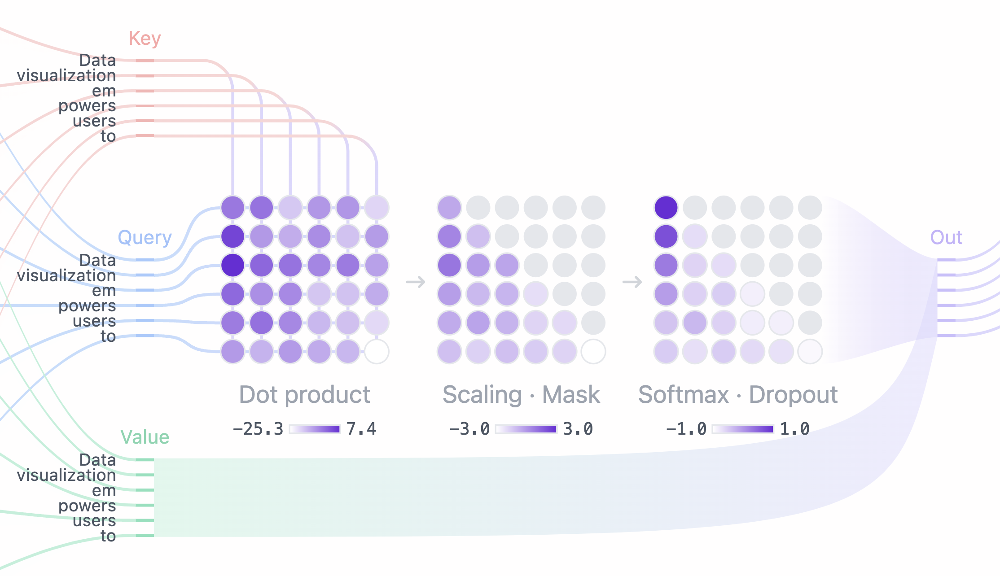

How to read this book#
This is the companion volume to the pytorch_nn_training notebooks. The notebooks
are where you type; this is where you understand what you typed. Keep both open.
Most machine-learning tutorials fail in one of two ways. Either they hand you working code and leave the mathematics as an unexplained black box — you can run it, you cannot reason about it, and when it breaks you are stuck — or they hand you the mathematics and leave you unable to write a training loop. This book and its notebooks are built to close that gap from both ends: every idea appears three times, in three different registers.
- As mathematics, here, derived rather than asserted.
- As arithmetic you do yourself, in the By hand exercises — small enough for paper, large enough to be real.
- As code, in the notebook for that chapter, which you complete and run.
- As the library call it becomes, in the In the wild boxes — what production code writes instead, what it adds, and what it hides.
That fourth register matters more than it looks. The goal is not to avoid libraries; it is to reach the point where you can read a paper, recognize which of its equations is the contribution, implement it, and check a library's version against your own. The Appendix is built for that transition — it maps every component here to its production API, explains how to read the literature, and surveys what has changed in the field since 2017.
The by-hand step is the one people skip, and it is the one that does the work. A gradient
you have computed once with a pencil stops being a symbol on a page and becomes a number
you know how to check. When your loss goes to nan at three in the morning, that
is the difference between debugging and guessing.
The rhythm#
Each chapter of this book pairs with one lesson folder. The intended loop is:
- Read the chapter here, all the way through, before opening the notebook. It is written to be read linearly and takes twenty to forty minutes.
- Do the By hand exercises. Do not read a solution first. Getting one wrong and then seeing why is worth more than getting it right by reading.
- Do the Feel for the numbers box, on paper. It is short, and it is the difference between reading $\mathcal{L} = 2.30$ as a symbol and reading it as this model has learned nothing.
- Do the Say it back box before you look at anything. Explaining a mechanism from memory finds the gaps that re-reading hides.
- Open
prompt.ipynbin the matching folder and fill in theTODOs. You will recognize every formula, because you just computed one by hand. - Compare against
solution.ipynb— which has already been executed, so you can read its outputs without running anything.
The one exception is Chapter 12, the capstone projects, which ships a single notebook and no solutions — because there is no single right answer to any of its five projects.
And these are the pencil-and-paper exercises. The numbers are always chosen to be tractable — small integers, halves, the occasional $e$ — so that arithmetic never obscures the idea being drilled. Every one of them has its worked answer folded up underneath, like this:
Worked solution
Answers always live behind a fold, in every exercise box in this book, so that you can check your work the moment you have finished without ever being shown it first. Nothing is gained by reading one early — the value of an exercise is entirely in the attempt.
Answers
The plug-in questions are answered here, folded, with the arithmetic shown — so a number you could not get to is never a dead end.
And every chapter has one of these. It names the chapter's central mechanism and asks you to explain it, in your own words, to whichever language model you already talk to — then to ask that model to correct you and push on anything you were vague about. Explaining something from memory finds gaps that re-reading hides, and a model is a patient thing to be wrong in front of.
Folded underneath is the list of points a good answer covers. Open it afterwards: read it first and the exercise turns from a test into a reminder.
What a good answer covers — open this afterwards, not before
The points, and the mistake most people make on this particular question.
Interactive figures#
Where a picture beats a paragraph, this book has a live one. Every widget is driven by the same arithmetic described in the surrounding text — nothing is faked or hand-drawn to look convincing. Drag the sliders; the interesting behavior is usually at the extremes.
That figure is from Mathematical Foundations, and it is a fair sample of what the widgets are for: the fact that cross-entropy loss is unbounded above is a sentence you can read and forget, or a curve you can drag a point along and never forget.
What you need#
A laptop, and that is genuinely all. Nothing here needs a data-center GPU, an API key or a multi-gigabyte checkpoint download; no model in these lessons exceeds a few million parameters, and the largest single download is an NLTK corpus of a few dozen megabytes.
| Enough | Comfortable | |
|---|---|---|
| Memory | 8 GB | 16 GB |
| CPU | any 64-bit chip from roughly the last five years | 4 cores or more |
| Disk | about 2 GB, nearly all of it PyTorch | — |
| GPU | none | Apple Silicon, or an NVIDIA card with CUDA |
That memory figure is measured rather than guessed. The heaviest thing in the book — the full GPT training run — peaks at about 860 MB of resident memory, so 8 GB leaves it room alongside a browser, an editor and the rest of your machine. At 16 GB you will never think about it again.
A GPU is a convenience here, not a requirement, and it is worth being clear about what it does and does not buy you. Every notebook picks its device automatically — Apple Silicon's Metal backend first, then CUDA, then the CPU — so the code is identical either way and nothing needs configuring. For the smallest models the CPU is actually faster, because moving tensors to a GPU costs more than the arithmetic saves; the benefit starts around the convolution lesson and grows from there. A 16 GB M1 will carry you through the whole book. So will an RTX. So will a several-year-old desktop CPU with nothing special in it — you will simply wait a few minutes longer on the two or three longest runs, and every one of those is minutes, not hours.
The notebooks, and this book's source, live in one repository:
github.com/dcaponi/pytorch-nn-training
There is no Docker image and no requirements.txt to fight with. One tool,
uv, handles the virtual environment, the
dependencies and the Python version — so you do not need to install or upgrade
Python first, even though this project needs 3.13 or newer. If uv cannot find a suitable
interpreter it downloads one, into its own directory, without touching your system
Python.
1. Install uv. macOS or Linux:
curl -LsSf https://astral.sh/uv/install.sh | shWindows, in PowerShell:
irm https://astral.sh/uv/install.ps1 | iex
If your execution policy blocks that, run it from a normal prompt as
powershell -ExecutionPolicy ByPass -c "irm https://astral.sh/uv/install.ps1 | iex"
instead.
Either platform, if you would rather use a package manager:
brew install uv, winget install astral-sh.uv, or
pipx install uv. Then close and reopen your terminal so the new
uv is on your path.
2. Get the notebooks and build the environment. The same three lines everywhere:
git clone https://github.com/dcaponi/pytorch-nn-training.git
cd pytorch-nn-training
uv sync
uv sync creates .venv/ with PyTorch, NumPy, Matplotlib, NLTK
and Jupyter, fetching a Python 3.13 for you if you have none. Expect a few hundred
megabytes and a minute or two, mostly PyTorch. You never need to
activate anything — uv run does it per command.
3. Open a notebook.
uv run jupyter notebook # then open a lesson folder
Corpora download on first use and cache in ~/nltk_data/. Chapter 11 needs
no extra dependencies: quantization and LoRA are both implemented from scratch, because
implementing them from scratch is the point.
mps, then cuda, then cpu,
whichever it finds first. On Windows the wheel uv installs from PyPI is
CPU-only; that is genuinely fine here, because every model in this curriculum is small
enough to train on a CPU in minutes rather than hours. If you have an NVIDIA card and
want CUDA, install torch from PyTorch's own index instead, following the
selector at pytorch.org — nothing
else in the project changes.
Notation#
The book is consistent about symbols, and the notebooks are consistent about tensor shapes. Both conventions are collected in the Appendix, which is worth a glance now and a return visit whenever a formula stops parsing. The short version:
| Symbol | Means | In code |
|---|---|---|
| $x$, $\mathbf{x}$ | a scalar input; a vector of inputs | x |
| $W$, $b$ | weight matrix, bias vector | self.linear.weight, .bias |
| $z$ | pre-activation ("logit"): $z = Wx + b$ | logits |
| $a = \sigma(z)$ | post-activation | a, h |
| $\hat{y}$ | the model's prediction | pred, out |
| $\mathcal{L}$ | the loss, a single scalar | loss |
| $\eta$ | learning rate | lr |
| $B, T, C$ | batch, time/sequence, channel/feature | (B, T, C) |
Tensor shapes are annotated inline throughout the notebooks and written like (B, T, d_model) here. Shape errors are the single most common bug in this material, and tracking shapes by eye as you read is the cheapest habit you can build.
The path through#
| Ch. | Subject | Notebook folder | Time |
|---|---|---|---|
| 00 | Mathematical foundations | 00_math_foundations | 45–60 min |
| 01 | A neural network from scratch | 01_nn_from_scratch | 45–60 min |
| 02 | The same network in PyTorch | 02_nn_pytorch | 45–60 min |
| 03 | Text, embeddings, and a baseline | 03_text_baseline | 45–60 min |
| 04 | Recurrence and its limits | 04_rnn_pytorch | 60–90 min |
| 05 | LSTMs: gated memory | 05_lstm_pytorch | 60–90 min |
| 06 | Self-attention from scratch | 06_self_attention | 60–90 min |
| 07 | Where Q, K and V come from | 07_attention_backprop | 60–90 min |
| 08 | The transformer encoder | 08_transformer_pytorch | 90 min |
| 09 | Encoder–decoder translation | 09_seq2seq_translation | 90 min |
| 10 | GPT: a decoder-only model | 10_gpt_from_scratch | 90 min |
| 11 | Quantization, LoRA, and memory | 11_quantization_and_lora | 90 min |
| 12 | Capstone projects | 12_capstone_projects | open-ended |
Chapters 00 through 07 are a single argument and should be read in order — each one is built out of the previous one's vocabulary. From 08 onward they become more independent: 08 is practical craft you can read at any point once you have trained something, and 11 stands alone well if you already know what a transformer is.
Two navigation conveniences, since this is a long document and you will be jumping backwards constantly. Cross-references look like this; following one pops up a Back to where you were button in the corner that returns you to your place. The sidebar has a filter box for when you remember a word but not a chapter.
Mathematical Foundations#
Four areas of mathematics carry all the weight in this book. Linear algebra is what a network computes. Calculus is how it learns. Statistics is why it is built the way it is — initialization, normalization, dropout, and the $\sqrt{d_k}$ in attention are all variance arguments. Probability is what its outputs mean, and where every loss comes from.
This chapter covers exactly as much of each as the rest of the book needs, with a worked example beside every idea and twenty-six pencil-and-paper exercises. It is by some distance the longest chapter here.
If you have a technical degree, most of this is material you have met before. It is here because the later chapters are far more intuitive when it is fresh, not because it is new. You are meant to skip around. Skim the parts you know, read the boxes, and move on.
What is worth doing carefully is a small number of the exercises, marked Must do below. Those six are the ones the rest of the book actually leans on — each of them derives a fact you will otherwise have to take on faith in chapters 01 through 11. Everything else is there for the reps, and skipping it costs you nothing but practice.
A better test than a feeling of familiarity: pick one of the six and try it cold. The specific things a network needs from these subjects are narrow and occasionally surprising — shapes matter more than proofs, the chain rule matters more than integration, and variance turns out to explain half the architecture. If that one goes smoothly, skim the rest of the chapter and start at Chapter 01.
Part 1 · Linear Algebra: What a Network Computes#
Vectors, length, and direction#
A vector is an ordered list of numbers representing one thing: a word's embedding, a token's hidden state, one example's features. Its length (Euclidean norm) is
$$\|\mathbf{a}\| = \sqrt{\textstyle\sum_i a_i^2}$$Normalizing to unit length separates direction from magnitude. That separation matters constantly: gradient clipping rescales a gradient's magnitude while preserving its direction, and cosine similarity compares direction while ignoring magnitude.
The dot product is a similarity score#
$$\mathbf{a}\cdot\mathbf{b} = \sum_i a_ib_i = \|\mathbf{a}\|\,\|\mathbf{b}\|\cos\theta$$The sign is the whole point. A dot product collapses two vectors into a single number saying how much they agree: large and positive when they point the same way, zero when they are unrelated, negative when they oppose. Every "how well do these two things match?" computation in this book is this number — usually millions of them at once, which is what the rest of this section is about.
The exercise that makes attention feel inevitable. Three "word embeddings" in two dimensions:
- Confirm all three have length 1. (For unit vectors the dot product is the cosine.)
- Compute all three pairwise dot products.
- Rank the pairs by similarity. Does it match your intuition about the words?
- A query $q = [0.9, 0.4]$ arrives. Compute its score against each key and apply softmax with no scaling.
- Scale $q$ to $[9, 4]$ — same direction, ten times longer. Recompute. What happened, and which part of the attention formula prevents it?
Worked solution
1. $\sqrt{1+0} = 1$; $\sqrt{0.64+0.36} = 1$; $\sqrt{0.36+0.64} = 1$ ✓.
2.
3. cat–dog (0.80) > dog–idea (0.00) > cat–idea (−0.60). Two concrete animals are similar; "idea" is perpendicular to "dog" and points away from "cat". This is what a learned embedding space does, and why every attention score is a dot product.
4.
It attends most to dog, but only just. The distribution is soft, so gradients flow to all three.
5. Every score is multiplied by 10: $[9.0, 9.6, -2.2]$.
The direction of $q$ has not changed, so the ranking is identical — but the distribution is far peakier and "idea" has been annihilated to five parts in a million. Push further and the row goes fully one-hot, the softmax gradient goes to zero, and the layer stops learning.
This is what the $1/\sqrt{d_k}$ factor prevents. Exercise 00.13 derives why score magnitude grows with dimension in the first place.
Matrix–vector products, read two ways#
This is the single most useful dual perspective in the subject, and most people only ever learn the first half of it.
A matrix–vector product is the dot product you already know, done once per row. Nothing new is happening. $A\mathbf{x}$ takes row 1 of $A$, dots it with $\mathbf{x}$ to get the first output number; takes row 2, dots it with $\mathbf{x}$ to get the second; and stacks the answers. If $A$ has 512 rows you are doing 512 dot products and writing them in a column.
The same arithmetic can be read a second way, and it is worth having both. Instead of going row by row, go column by column: take each column of $A$, scale it by the matching number in $\mathbf{x}$, and add the results together. Both readings give the identical answer, because they are the identical multiplications in a different order. The row reading is how you compute it. The column reading is what makes embeddings and low-rank updates obvious later.
Now set $\mathbf{x} = [0,0,1]$. Going column by column, the answer is immediate: columns 1 and 2 are scaled by zero and vanish, so the output is column 3 exactly, $[0,1]$. Doing it row by row would give the same thing but you would have to grind through the arithmetic to see it. That is precisely what an embedding lookup is — a vector of all zeros with a single 1 in it, pulling out one column — and it is why a lookup table and a matrix multiply are the same object wearing different clothes.
- Compute $A\mathbf{x}$ using the row reading (dot products).
- Compute it again column by column (scale each column of columns, with $\mathbf{x}$ as coefficients). Confirm they agree.
- Now let $\mathbf{x} = [0, 0, 1]$. Use the column reading to write down the answer immediately, without arithmetic.
- An
nn.Embedding(4, 3)holds a $4\times 3$ table. Explain, using part 3, why looking up token 2 is the same operation as multiplying a one-hot vector by that table — and what that implies about which rows receive gradient.
Worked solution
1. Row reading:
2. Column reading:
3. The coefficients are $0, 0, 1$, so the result is simply the third column: [0, 1]. No arithmetic required — and that is the whole value of the column reading.
4. A one-hot vector has a single 1 in position $k$, so the linear combination keeps exactly one row (or column, depending on which side you multiply) and discards the rest. The lookup is the multiplication, executed efficiently.
The consequence for training is direct. Since the output depends on only that one row, the gradient with respect to every other row is exactly zero — not small, zero. Only the tokens that actually appeared in a batch get updated, and a token appearing three times accumulates three contributions, as summing over paths requires. It is also why rare words have poor embeddings: they simply receive very few updates.
Matrix multiplication#
For $A$ of shape (m, n) and $B$ of shape (n, p), $C = AB$ has shape (m, p) with $C_{ij} = (\text{row } i \text{ of } A)\cdot(\text{col } j \text{ of } B)$.
Three rules earn their keep:
Inner dimensions must match, and they vanish.
(m, n) @ (n, p) →
(m, p). This is the error you will see most often, and
reading it is a skill: mat1 and mat2 shapes cannot be multiplied (64x128 and
256x512) means you produced 128 features where something expected 256.
It does not commute. $AB \ne BA$; often only one order is even legal.
It is associative, and this is not a technicality. $(AB)C$ and $A(BC)$ give the same answer at wildly different costs — and it is exactly why LoRA is cheap: computing $x(BA)$ would build a full $d \times d$ matrix, while $(xB)A$ never materializes anything larger than $r$ columns.
- Which are legal, and what shape does each produce?
A@B,B@A,A@B@C,B@C,C@B. - What shape is
(A@B) + v, and why? - A batch of 32 examples with 10 features passes through
nn.Linear(10, 64)thennn.Linear(64, 3). Give every intermediate shape and the total parameter count. - You have $x$ of shape (1, 1000), $B$ of shape
(1000, 4), and $A$ of shape
(4, 1000). Count the multiplications for
(x@B)@Aversusx@(B@A).
Worked solution
1. Inner dimensions must match and vanish.
A@B is legal while B@A is not — the clearest possible
demonstration that matrix multiplication does not commute.
2. (4, 3). Aligning from the right, 3 matches 3;
v has no second dimension so it is treated as
(1, 3) and stretched across all four rows. This is exactly
how a bias is added to a batch.
3.
The batch dimension 32 passes through untouched at every step. Layers transform features, never the batch.
4.
Identical answers; 625× the work. Associativity is a free optimization, and it is precisely why LoRA is cheap at inference: you never materialize $BA$.
Transpose, and why the backward pass needs it#
$A^\top$ swaps rows and columns, so (m, n) becomes (n, m). It appears in every backward pass, and the reason is worth understanding rather than memorizing.
A single linear layer with no bias, one example.
- Compute $Y$.
- Without computing anything, use shapes alone to decide whether $\partial\mathcal{L}/\partial W$ is $X^\top\delta$ or $\delta^\top X$.
- Compute $\partial\mathcal{L}/\partial W$ and confirm it has the shape of $W$.
- Compute $\partial\mathcal{L}/\partial X = \delta W^\top$ and confirm its shape.
- Interpret the first entry of $\partial\mathcal{L}/\partial W$: why is the whole first row equal to 1 and the whole second row equal to 2?
Worked solution
1.
2. $W$ is (2, 3), so the gradient must be (2, 3). $X^\top$ is (2, 1) and $\delta$ is (1, 3), giving (2, 3) ✓. The alternative $\delta^\top X$ is (3, 1) @ (1, 2) = (3, 2) ✗. The shapes decide it, with no calculus needed.
3.
4.
5. $\partial\mathcal{L}/\partial W_{ij} = X_i\delta_j$ — the input that fed the weight, times the error that came back through it. Since every $\delta_j = 1$ here, each row is just its input value repeated: row 1 is $X_1 = 1$ and row 2 is $X_2 = 2$.
This is the general rule stated in the chapter — gradient = (what came in)ᵀ × (what wants to change on the way out) — and it explains why an input feature with large magnitude produces proportionally large weight gradients. That is the argument for feature scaling, and it is the same effect you saw in the single-row exercise where $x = 2$ made $\partial\mathcal{L}/\partial w$ twice $\partial\mathcal{L}/\partial b$.
Outer products and rank#
The outer product $\mathbf{u}\mathbf{v}^\top$ of a length-$m$ and a length-$n$ vector is an $m \times n$ matrix with entries $u_iv_j$. Every such matrix has rank 1: every row is a multiple of $\mathbf{v}^\top$, every column a multiple of $\mathbf{u}$.
Rank is the number of independent directions a matrix actually uses — equivalently, the smallest number of rank-1 outer products that sum to it. A matrix can be huge and still be low-rank, and if it is, storing all its entries is waste. That single observation is the whole of LoRA: $BA$ with $B$ of shape (d, r) and $A$ of shape (r, d) is a sum of $r$ outer products, so it can express any rank-$r$ update to $W$ using $2dr$ numbers instead of $d^2$.
- Compute the outer product $\mathbf{u}\mathbf{v}^\top$ (a $3\times 2$ matrix).
- Show that every row is a multiple of $[4,5]$. How many independent directions does the matrix span?
- Six entries are stored. How many numbers actually generate them?
- Determine the rank of $\begin{pmatrix}1&2\\2&4\end{pmatrix}$ and of $\begin{pmatrix}1&2\\3&4\end{pmatrix}$.
- LoRA writes $\Delta W = BA$ with $B$ of shape (d, r) and $A$ of shape (r, d). Explain why this is a sum of $r$ outer products, and count the parameters against a full $d\times d$ update at $d = 1000$, $r = 4$.
Worked solution
1.
2. Row 1 is $1\times[4,5]$, row 2 is $2\times[4,5]$, row 3 is $3\times[4,5]$. Every row points along the same direction, so the matrix spans exactly one direction: it has rank 1.
3. Six entries, generated by $3 + 2 = \mathbf{5}$ numbers. (In fact only 4 degrees of freedom, since scaling $\mathbf{u}$ by $c$ and $\mathbf{v}$ by $1/c$ leaves the product unchanged.)
4. In the first, row 2 = 2 × row 1, so the rows are dependent and the rank is 1 (determinant $1\cdot4 - 2\cdot2 = 0$). In the second the determinant is $1\cdot4 - 2\cdot3 = -2 \ne 0$, so the rank is 2 — full rank.
5. Write $B$'s columns as $b_1,\dots,b_r$ and $A$'s rows as $a_1^\top,\dots,a_r^\top$. Then
$$BA = \sum_{i=1}^{r} b_i a_i^\top$$a sum of $r$ rank-1 outer products, so $\operatorname{rank}(BA) \le r$.
The bet LoRA makes is that the update a model needs in order to adapt has low rank even though the model itself does not — that adaptation moves along a few directions rather than all thousand. Chapter 11 tests that claim empirically with a rank sweep: rank 1 alone captures well over half the achievable gain, and rank 8 captures 84% of it at a quarter of the parameters of rank 32. Steep diminishing returns, though — measurably — not a flat plateau.
Elementwise operations#
$A \odot B$ multiplies corresponding entries and needs identical shapes. Completely different from $AB$, and used constantly — in backpropagation through activations, in LSTM gates, and in masking.
When an LSTM's forget gate computes $f_t \odot c_{t-1}$, each memory slot is scaled by its own gate value independently. A dot product would collapse the entire memory into one number, destroying it.
Broadcasting#
Broadcasting is a NumPy invention that PyTorch inherited. It is not mathematics — it is a convention about how arrays of different shapes are allowed to meet — and it is where a large fraction of silent numerical bugs live. If you have not written array code before, none of it is guessable, so it is worth doing slowly once.
The problem it solves is this. You constantly need to combine things whose shapes do not match: add one bias number to every row of a matrix, subtract a per-column mean from every row, scale each row of a batch by its own number. Written literally, each of those is a loop, and a Python loop over a large array is hundreds of times slower than the array operation it replaces. Broadcasting lets you write the expression as though the shapes already agreed, and leaves the library to work out what you meant.
The rule is two steps. Line the two shapes up from the right, padding the shorter one with 1s on the left. Then, in every column of that alignment, the two sizes must either be equal or one of them must be 1. A size of 1 is stretched to match the other side.
If any column fails that test you get an error, which is the good outcome. If every column passes you get an answer — and nothing checks whether it is the answer you wanted.
Nothing is actually stacked. The stretched array is read with a stride of zero along the
broadcast dimension — the same three numbers are re-read for every row — so broadcasting
a vector across a million-row matrix costs no extra memory at all. That is the second
reason it exists, and it is why you should reach for it rather than for
repeat or tile.
A Linear(..., 1) layer outputs shape (N, 1) —
a column. Labels usually arrive as (N,) — a flat list. Both
are "N numbers", so it is entirely natural to subtract one from the other:
There is no error and no warning. At $N = 32$ you have quietly built a 32×32 grid, averaged 1,024 numbers instead of 32, and computed something close to the variance of your labels rather than a loss. The model trains, the number goes down a little, and nothing works.
The fix is one call — targets.unsqueeze(1) or
predictions.squeeze(1) — and the habit that prevents it is printing
.shape on both sides of any subtraction you did not think hard about.
Chapter 02 meets this bug again with a real loss
function attached.
The third is the good failure: you meant to add something per-row, and got told off because a length-4 vector lines up against the length-3 axis. Transposing your thinking — (4, 1) instead of (4,) — fixes it. The fourth is the bad success, and it is the same shape of mistake as the (N, 1) against (N,) case above.
For each, give the result shape or say why it errors.
- Work through all five.
- You are mean-pooling over non-padding positions:
xis (B, L, C) andmaskis (B, L). Why doesx * maskfail — and what is the fix? - Now suppose
C == Lby coincidence (a batch of 128-token sequences with a 128-dimensional model). What happens tox * maskthen, and why is that worse than the error?
Worked solution
1.
2. Aligning from the right: $C$ vs $L$. Unless they happen to be equal, this errors. The mask indexes positions, so it needs a trailing axis to broadcast across channels:
3. It succeeds silently and computes garbage. With $C = L$, the mask broadcasts across the batch dimension instead of the channel dimension — so example 0's mask is applied to every example's feature axis. No error, no warning, and a model that trains to a worse-than-expected accuracy for reasons nothing in the output explains.
This is why the error case is the lucky one. It is also why the mask-shape bug is most likely to appear precisely in the square configurations people reach for when prototyping.
Part 2 · Calculus: How a Network Learns#
The derivative as a rate of change#
$$f'(x) = \lim_{h\to 0}\frac{f(x+h)-f(x)}{h} \qquad\text{estimated by}\qquad \frac{f(x+h)-f(x-h)}{2h}$$$f(x) = x^2$ has $f'(x) = 2x$, so $f'(3) = 6$. Check numerically:
This is gradient checking — the standard way to verify a hand-written backward pass. If your analytic gradient disagrees with a finite-difference estimate by more than round-off, the analytic one is wrong. The notebook uses it on the softmax gradient.
| Rule | Statement | Where it appears |
|---|---|---|
| Power | $\frac{d}{dx}x^n = nx^{n-1}$ | MSE: $\frac{d}{de}e^2 = 2e$ |
| Exponential | $\frac{d}{dx}e^x = e^x$ | softmax, sigmoid |
| Logarithm | $\frac{d}{dx}\ln x = 1/x$ | every cross-entropy loss |
| Chain | $\frac{d}{dx}f(g(x)) = f'(g(x))g'(x)$ | all of backpropagation |
Derive each from the definition, then evaluate. You will use all three constantly.
- Show that $\sigma'(z) = \sigma(z)(1-\sigma(z))$, starting from $\sigma(z) = (1+e^{-z})^{-1}$.
- Evaluate $\sigma'(0)$, $\sigma'(2)$, $\sigma'(5)$, given $\sigma(2) = 0.881$ and $\sigma(5) = 0.993$.
- Show that $\tanh'(z) = 1 - \tanh^2(z)$ and evaluate at $z = 0$.
- What is $\text{ReLU}'(z)$ for $z > 0$, $z < 0$, and $z = 0$?
- Using part 2, compute the best-case gradient reaching layer 1 of a 10-layer sigmoid network, and say what that implies.
Worked solution
1. Write $\sigma = (1+e^{-z})^{-1}$ and apply the chain rule:
$$\sigma'(z) = -(1+e^{-z})^{-2}\cdot(-e^{-z}) = \frac{e^{-z}}{(1+e^{-z})^2}$$Now split the fraction: $\frac{e^{-z}}{(1+e^{-z})^2} = \frac{1}{1+e^{-z}}\cdot\frac{e^{-z}}{1+e^{-z}}$. The first factor is $\sigma(z)$; the second is $\frac{(1+e^{-z}) - 1}{1+e^{-z}} = 1 - \sigma(z)$. Hence $\sigma' = \sigma(1-\sigma)$ ∎
2.
By $z = 5$ the derivative has fallen to under 3% of its peak. That is saturation.
3. With $\tanh z = \frac{e^z - e^{-z}}{e^z + e^{-z}}$, the quotient rule gives numerator $(e^z+e^{-z})^2 - (e^z-e^{-z})^2$ over $(e^z+e^{-z})^2$, which is $1 - \tanh^2 z$. At $z = 0$, $\tanh 0 = 0$ so $\tanh'(0) = \mathbf{1}$ — four times sigmoid's peak, which is why tanh was preferred for hidden layers before ReLU.
4. $1$ for $z>0$, $0$ for $z<0$, and undefined at exactly $z=0$ — frameworks pick 0 by convention. This never matters in practice: hitting exactly 0.0 in floating point has probability ~0, and the choice affects a measure-zero set.
5. The best case requires every pre-activation at $z = 0$, giving 0.25 per layer:
Under a million times attenuated — and that is the optimum. Real pre-activations sit away from zero, so the true factor is far smaller. This single number is the vanishing gradient problem, and it is why ReLU (derivative exactly 1 on the positive half) and residual connections replaced deep sigmoid stacks.
The chain rule is backpropagation#
A network is a composition, $\mathcal{L}(a_2(z_2(a_1(z_1(x)))))$. The chain rule says the derivative of the whole with respect to anything inside is the product of the derivatives along the path:
Backpropagation is that product, evaluated from the loss end, caching each partial result so the shared prefix is computed once. Two consequences explain most of the architectural history in this book: if the factors are typically below 1 the product decays geometrically with depth (vanishing gradients), and if above 1 it explodes.
The smallest possible case — one row of $W$, one input, one output — forwards and backwards. Everything larger is this, stacked.
- Forward pass: compute $z$, $a$, $\mathcal{L}$.
- Compute $\partial\mathcal{L}/\partial a$.
- Compute $\partial a/\partial z$ using $\sigma'(z) = a(1-a)$.
- Chain them. Simplify, and compare with $a - y$.
- Compute $\partial\mathcal{L}/\partial w$ and $\partial\mathcal{L}/\partial b$, take one step at $\eta = 0.5$, and verify the loss decreased.
Worked solution
1. $z = 1.1$, $a = 0.750$, $\mathcal{L} = 0.288$.
2. $-1/a = -1.333$.
3. $a(1-a) = 0.750 \times 0.250 = 0.1875$.
4.
Algebraically $-\frac{1}{a}\cdot a(1-a) = a-1 = a-y$: the $\sigma'$ factor cancels against the $1/a$ from the log exactly. This is the cancellation in its simplest instance, and it is why sigmoid pairs with BCE and not with MSE.
5.
$\partial\mathcal{L}/\partial w$ is twice $\partial\mathcal{L}/\partial b$ purely because $x = 2$ — a larger input yields a larger weight gradient, which is the argument for feature scaling.
Partial derivatives, gradients, and paths#
Moving $y$ changes $f$ almost twice as fast as moving $x$. The gradient points in the direction of steepest increase, which is why gradient descent steps along $-\nabla f$.
If a variable influences the loss by more than one route, the total derivative is the
sum over all paths. This is the rule people most often get wrong, and
it is the reason PyTorch accumulates into .grad rather than
overwriting.
The same summation is what makes weight sharing work in
recurrent networks, where one matrix is reused at every
timestep — and why zero_grad()
is mandatory, since autograd cannot tell where one backward pass ends and the next
begins.
- Compute $u$, $v$, $\mathcal{L}$.
- Identify every path from $w$ to $\mathcal{L}$.
- Compute each path's derivative and sum them.
- Verify numerically with $h = 0.001$.
- What would
w.gradhold after callingbackward()twice withoutzero_grad()?
Worked solution
1. $u = 4$, $v = 6$, $\mathcal{L} = 18$.
2. Two: $w \to u \to v \to \mathcal{L}$, and the direct $w \to v \to \mathcal{L}$.
3.
4. At $w = 2.001$: $u = 4.004001$, $v = 6.005001$, $\mathcal{L} = 18.015003$, so $(18.015003-18)/0.001 = 15.003 \approx 15$ ✓.
5. 30 — the sum of two independent backward passes, the derivative of nothing in particular. Note how plausible 30 looks: nothing crashes, no warning appears, and the model trains steadily towards the wrong thing.
Backpropagation, in matrices#
Everything so far has been one number at a time, which is how the chain rule is easiest to learn and not how anything is ever computed. A real network holds no scalars: it is a sequence of matrix multiplies with an elementwise function wedged between them, and the backward pass is that same sequence read in reverse. This section derives it once, in full, because it is the last piece of mathematics the rest of the book needs — every later chapter is this, with different matrices in it.
Take a two-layer network over a batch of $N$ examples with $d$ inputs, $h$ in the middle and $K$ classes. The forward pass is five lines:
Two matrix multiplies, one elementwise function, one softmax, one average. There is nothing else in it. $f$ is whatever activation you chose; nothing below depends on which.
Those five lines are a convenience for computing, not five separate functions. Substituted into one another they are a single expression, and it is worth writing it out once — because this, and not the five lines, is what you are about to differentiate:
$$\mathcal{L}(W_1, b_1, W_2, b_2) \;=\; \text{CE}\Big(\; \operatorname{softmax}\big(\, f(XW_1 + b_1)\,W_2 + b_2 \,\big) \;,\; Y \Big)$$Four parameters, each appearing exactly once, each buried under a different number of operations. $W_2$ sits inside two of them and $W_1$ inside four, which is the entire reason the two gradients below have different lengths. Chapter 01 draws this nesting and then computes every entry of one of these gradients by hand, as an explicit matrix of partial derivatives.
Now differentiate. Write $G_2 = \partial\mathcal{L}/\partial Z_2$ and $G_1 = \partial\mathcal{L}/\partial Z_1$ — the gradient of the loss with respect to each layer's pre-activation. The whole backward pass is these six lines:
Read down the right-hand column and the claim in the section title is just true. Every line is a matrix multiply, an elementwise multiply, or a sum. No derivative of anything complicated appears, because all of that collapsed into the first line — the $\hat{y} - y$ you will meet again in Part 4 — and into $f'$, which for ReLU is a matrix of ones and zeros.
Where each of those four gradients comes from
Asserting six lines is not the same as deriving them, so here is each parameter in turn. The recipe never changes: find where the parameter appears in the composed expression, list what stands between it and the loss, and multiply by each of those in turn.
1. $\partial\mathcal{L}/\partial W_2$. $W_2$ appears once, in $Z_2 = A_1W_2 + b_2$. Between it and the loss stand the softmax and the cross-entropy — two operations, exactly as the nesting predicted. Those two collapse into a single subtraction:
The shape is $W_2$'s shape, which is the check. Note that the batch axis $N$ is what gets summed over by the matrix product — every example contributes to every weight, and the product adds those contributions up for you.
2. $\partial\mathcal{L}/\partial b_2$. Same line, same two operations above it, but $b_2$ enters by addition rather than multiplication. Differentiating a sum with respect to one of its terms gives 1, so nothing scales the incoming gradient at all — the only question is how many places $b_2$ went:
That sum is not a convention — it is summing over paths from earlier in this part. Broadcasting $b_2$ across the batch created $N$ separate routes from $b_2$ to the loss, and the total derivative is the sum over all of them. Any parameter that gets broadcast is summed over the axis it was broadcast along; that single sentence covers every bias in this book.
3. $\partial\mathcal{L}/\partial W_1$. Now the longer one, and it is longer only because $W_1$ is deeper. Four things stand between it and the loss:
Compare step 4 with step 2 of the first derivation. They are the same sentence — what came in, transposed, times what wants to change — with $X$ in place of $A_1$ and $G_1$ in place of $G_2$. The only work unique to $W_1$ was steps 2 and 3, which produced $G_1$. That is what "two wrappers deeper" buys you: two extra steps, both of them mechanical.
4. $\partial\mathcal{L}/\partial b_1$. Identical in form to $b_2$, one layer down. $b_1$ was broadcast across the batch, so sum the incoming gradient over the batch axis:
Two weight gradients, each input-transposed times error. Two bias gradients, each error summed over the batch. Everything else in the backward pass exists only to produce $G_2$ and $G_1$.
There is one rule underneath all six lines. To push a gradient backwards through a product $Y = AB$, you multiply by the other factor, transposed — on the left or the right, whichever makes the shapes fit:
That is the entire mechanism. Backpropagation through a network of matrix multiplies is multiplying the incoming gradient by a transposed matrix, once per layer, all the way down — with an elementwise factor slipped in wherever an activation sat.
This is worth doing once, because it means you never have to memorize the backward pass — you can rebuild it at a whiteboard from nothing but the forward shapes.
$\partial\mathcal{L}/\partial W_2$ has to be the same shape as $W_2$, which is (h, K). The two things available are $A_1$ at (N, h) and $G_2$ at (N, K). There is exactly one way to multiply those and get (h, K): transpose $A_1$ and put it on the left. Likewise $\partial\mathcal{L}/\partial A_1$ must be (N, h), and the only arrangement of $G_2$ (N, K) and $W_2$ (h, K) giving that is $G_2 W_2^\top$. The shapes leave you no choice, which is why the transpose section claimed the backward pass is where transposes come from.
One example, two inputs, two hidden, two classes, ReLU in the middle. Small enough to do entirely on paper, and it is a complete training step of a real network.
- Forward: compute $Z_1$, $A_1$, $Z_2$, then $P = \operatorname{softmax}(Z_2)$ and the loss.
- Compute $G_2 = (P - Y)/N$ with $N = 1$.
- Compute $\partial\mathcal{L}/\partial W_2 = A_1^\top G_2$. Check the shape is (2, 2) before you compute a single entry.
- Compute $G_2 W_2^\top$, then $G_1$. What does ReLU's derivative do here, and when would it not be so kind?
- Compute $\partial\mathcal{L}/\partial W_1 = X^\top G_1$.
- Which entry of $\partial\mathcal{L}/\partial W_1$ is largest in magnitude, and which input is responsible?
Worked solution
1. $W_1$ is the identity, so $Z_1 = [1, 2]$ and, since both are positive, $A_1 = [1, 2]$ unchanged.
The model puts 12% on the correct class, so the loss is well above the $\ln 2 = 0.69$ you would get by guessing. It is confidently wrong.
2. $G_2 = [0.1192 - 1,\ 0.8808 - 0] = [-0.8808,\ 0.8808]$. It sums to zero, as every softmax-with-cross-entropy gradient does.
3. $A_1^\top$ is (2, 1) and $G_2$ is (1, 2), so the product is (2, 2) — the shape of $W_2$, as it must be.
4.
ReLU's derivative is 1 wherever the pre-activation was positive, and both entries of $Z_1$ were, so $f'(Z_1) = [1, 1]$ and $G_1 = [-1.7616,\ 1.7616]$ — the elementwise step changes nothing at all. It would not be so kind if either entry of $Z_1$ had been negative: that coordinate's gradient would be multiplied by zero and the corresponding row of $W_1$ would receive nothing from this example. That is what a dead ReLU is.
5.
6. The bottom row, at $\pm 3.5232$ — exactly twice the top row. The second input was 2 and the first was 1, and $X^\top G_1$ scales each row of the weight gradient by the corresponding input. A weight is adjusted in proportion to how much the input it multiplies actually contributed, which is the whole reason feature scaling matters and the reason an input stuck at zero can never move its own weights.
Every number above agrees with autograd to the last digit printed. The
notebook has you check exactly that.
Gradient descent#
$$\theta \leftarrow \theta - \eta\,\frac{\partial\mathcal{L}}{\partial\theta}$$Minimize $\mathcal{L}(w) = (w-4)^2$ from $w_0 = 1$.
- Write $d\mathcal{L}/dw$ and evaluate at $w = 1$.
- Take three steps at $\eta = 0.1$, tabulating $w$ and $\mathcal{L}$. Are the steps growing or shrinking, and why?
- Take one step at $\eta = 1.0$. Where do you land?
- Take two steps at $\eta = 1.5$ and describe the pattern.
- Solve for the exact range of $\eta$ that converges, and the value that converges fastest.
Worked solution
1. $2(w-4)$, which at $w=1$ is $\mathbf{-6}$ — negative, so $w$ should increase.
2.
The steps shrink, because the gradient shrinks as $w$ approaches the minimum — descent slows automatically near an optimum. Each step is exactly 0.8× the last, because $w_{t+1} - 4 = (1-2\eta)(w_t - 4)$ with $1-2\eta = 0.8$.
3. $w = 1 + 6 = \mathbf{7}$, and $\mathcal{L}(7) = 9$ — the same loss it started with, on the far side. The ratio is $-1$: it oscillates between 1 and 7 forever.
4. Ratio $1 - 3 = -2$:
Distance doubles each step, loss quadruples, and within ten steps you are heading
for inf and then nan. Nothing about the problem is wrong —
only $\eta$.
5. Convergence needs $|1-2\eta| < 1$, so $\mathbf{0 < \eta < 1}$, with $\eta = 0.5$ giving $1-2\eta = 0$ and landing exactly on the minimum in a single step. The general condition is $\eta < 2/\mathcal{L}''$; here $\mathcal{L}'' = 2$, giving $\eta < 1$ ✓. Real loss surfaces have wildly different curvature in different directions, which is precisely the problem Adam attacks by giving each parameter its own effective step size.
Part 3 · Statistics: Why the Architecture Looks Like It Does#
This part is the one most curricula skip, and skipping it is why initialization, normalization, and the $\sqrt{d_k}$ in attention feel like arbitrary folklore. They are not. Each is a variance argument, and once you can compute variances they become obvious.
Expectation and variance#
$$\mathbb{E}[X] = \sum_x x\,P(x) \qquad \operatorname{Var}(X) = \mathbb{E}\big[(X-\mathbb{E}[X])^2\big] = \mathbb{E}[X^2] - \mathbb{E}[X]^2$$The second form is almost always the easier one to compute.
Look hard at $p(1-p)$. It is maximized at $p = 0.5$, where it equals 0.25 — and it is the same expression as the sigmoid derivative $\sigma'(z) = \sigma(z)(1-\sigma(z))$. That is not a coincidence: a sigmoid output is a Bernoulli parameter, and its derivative is that Bernoulli's variance. A saturated output ($p \to 0$ or $1$) has near-zero variance, which is exactly the same fact as having near-zero gradient. Certainty and unlearnability are the same condition.
- A fair four-sided die shows 1, 2, 3, 4. Compute $\mathbb{E}[X]$, $\mathbb{E}[X^2]$, and $\operatorname{Var}(X)$.
- A biased coin has $P(\text{heads}) = 0.3$, scored as $X = 1$ for heads and 0 for tails. Compute $\mathbb{E}[X]$ and $\operatorname{Var}(X)$ both from the definition and from the formula $p(1-p)$.
- For what $p$ is a Bernoulli's variance largest, and what is that value?
- A sigmoid output is a Bernoulli parameter. Using part 3, state the maximum possible value of $\sigma'(z)$ and explain the connection.
- One coordinate of a layer's output is $\sigma(z) = 0.99$. What is the variance of the corresponding Bernoulli, and what does that say about the gradient?
Worked solution
1.
2. From the definition: $\mathbb{E}[X] = 1(0.3) + 0(0.7) = 0.3$; $\mathbb{E}[X^2] = 1(0.3) + 0(0.7) = 0.3$ (since $X^2 = X$ for a 0/1 variable); $\operatorname{Var}(X) = 0.3 - 0.09 = \mathbf{0.21}$. From the formula: $p(1-p) = 0.3(0.7) = 0.21$ ✓
3. $p(1-p)$ is a downward parabola with roots at 0 and 1, so it peaks at the midpoint $p = 0.5$, where it equals 0.25.
4. $\sigma'(z) = \sigma(z)(1-\sigma(z))$ is literally $p(1-p)$ evaluated at $p = \sigma(z)$. So the maximum possible sigmoid derivative is 0.25, at $z = 0$ where $\sigma = 0.5$.
The connection is not a coincidence but an identity: a sigmoid output is a Bernoulli parameter, and its derivative is that Bernoulli's variance. Which means a confident output and an unlearnable one are the same thing. The model's certainty and its gradient are two readings of one number.
5. $0.99(0.01) = \mathbf{0.0099}$. The gradient through that coordinate is attenuated by a factor of about 100 relative to an uncertain one — and by 25 relative to the best case. If it is confidently wrong, that is exactly the situation where you most need a large gradient and least get one, which is the whole argument in Part 4 for why cross-entropy's cancellation matters.
The two rules that do all the work#
$$\operatorname{Var}(aX) = a^2\operatorname{Var}(X)$$ $$\operatorname{Var}(X + Y) = \operatorname{Var}(X) + \operatorname{Var}(Y)\quad\text{(independent)}$$Scaling squares the variance; independent variances add. Everything below follows from these two lines.
One row of $W$ computes $z = \sum_{i=1}^{n} w_ix_i$ against the input. Take the inputs to have variance 1 and the weights to be independent with variance $\sigma_w^2$, all with mean zero. Then each term has variance $\sigma_w^2$, and $n$ independent terms add:
$$\operatorname{Var}(z) = n\,\sigma_w^2$$
For the signal to leave the layer at the same scale it entered — which is what keeps a
deep stack from exploding or collapsing — you need $\operatorname{Var}(z) = 1$, hence
$\sigma_w = 1/\sqrt{n}$. That is Xavier/LeCun initialization, derived in three lines.
ReLU discards the negative half and roughly halves the variance, so He initialization
uses $\sqrt{2/n}$ to compensate. PyTorch's nn.Linear default,
$\mathcal{U}(-1/\sqrt{n}, 1/\sqrt{n})$, is the same idea.
Every output is saturated before training starts, every gradient is ~$10^{-13}$, and the network never learns anything. Not a subtle degradation — a total failure, caused by one factor of $\sqrt{n}$.
This exercise derives Xavier initialization from scratch. It is the single most useful piece of statistics in the chapter.
- Using $\operatorname{Var}(aX) = a^2\operatorname{Var}(X)$ and additivity for independent variables, write $\operatorname{Var}(z)$ in terms of $n$ and $\sigma_w^2$.
- Evaluate $\operatorname{Var}(z)$ and $\text{SD}(z)$ for $\sigma_w = 1$.
- Given $\sigma(10) \approx 0.99995$ and $\sigma'(10) \approx 4.5\times10^{-5}$, say what happens to this layer at that scale.
- Solve for the $\sigma_w$ that gives $\operatorname{Var}(z) = 1$.
- Now stack 10 such layers. If each layer multiplies the variance by a factor $c$, what is the variance at layer 10 for $c = 2$ and for $c = 0.5$? Why must $c = 1$?
- ReLU zeroes the negative half of its input. Roughly what does that do to the variance, and how should $\sigma_w$ change to compensate?
Worked solution
1. Each term $w_ix_i$ has variance $\operatorname{Var}(w_i)\operatorname{Var}(x_i) = \sigma_w^2 \cdot 1$ (using independence and zero means). The $n$ terms are independent, so their variances add:
$$\operatorname{Var}(z) = n\sigma_w^2$$2. $\operatorname{Var}(z) = 100 \times 1 = 100$, so $\text{SD}(z) = \mathbf{10}$.
3. Pre-activations land in roughly $[-30, 30]$. At $|z| = 10$ the sigmoid is already 0.99995 and its derivative is $4.5\times10^{-5}$ — so essentially every output is saturated before training begins, and every gradient is attenuated by ~$10^{-5}$ per layer. The network does not train slowly; it does not train at all. And nothing in the code is wrong — only one factor.
4. $n\sigma_w^2 = 1 \Rightarrow \sigma_w = 1/\sqrt{n} = 1/\sqrt{100} = \mathbf{0.1}$. Check: $100 \times 0.01 = 1$ ✓. This is Xavier/LeCun initialization, and you have just derived it in two lines.
5.
Any $c \ne 1$ compounds geometrically with depth. This is the same geometric-product problem as vanishing gradients, appearing in the forward pass instead of the backward one — which is why the fix (control the per-layer factor) and the fallback (normalize explicitly, as layer norm does) are the same in both directions.
6. ReLU sets roughly half the values to zero, which approximately halves the variance. To restore $\operatorname{Var}(z) = 1$ you need to double $\sigma_w^2$, so $\sigma_w = \sqrt{2/n}$. That is He initialization, the default for ReLU networks — and it differs from Xavier by exactly the factor $\sqrt{2}$ that this one sentence predicts.
The variance of a dot product, and attention's scaling factor#
The same argument settles attention's scaling factor. For $q\cdot k = \sum_{i=1}^{d_k} q_ik_i$ with all components independent, mean 0, variance 1:
So raw attention scores grow as $\sqrt{d_k}$. At $d_k = 64$ the standard deviation is 8, so scores routinely span $\pm 24$ — and a softmax over scores that spread out is numerically one-hot, with a gradient of essentially zero. Dividing by $\sqrt{d_k}$ restores unit variance. Without it, making your model wider would break it.
Exercise 00.2 showed that large scores saturate a softmax. This one shows why they become large.
- Compute $\mathbb{E}[q_ik_i]$.
- Compute $\operatorname{Var}(q_ik_i)$. (Use $\operatorname{Var}(Y) = \mathbb{E}[Y^2] - \mathbb{E}[Y]^2$ and independence.)
- Compute $\operatorname{Var}(q\cdot k)$ and $\text{SD}(q\cdot k)$ in terms of $d_k$.
- Evaluate the standard deviation for $d_k = 16$, $64$, and $256$.
- Take three logits at roughly $\pm 1$ SD for $d_k = 64$ — say $[0, 8, -8]$ — and compute their softmax. Then do the same after dividing by $\sqrt{d_k}$, i.e. $[0, 1, -1]$. Compare.
- Using $\sigma'$-style reasoning, estimate how much smaller the gradient is in the unscaled case.
Worked solution
1. By independence, $\mathbb{E}[q_ik_i] = \mathbb{E}[q_i]\mathbb{E}[k_i] = 0 \times 0 = \mathbf{0}$.
2. Since the mean is 0, $\operatorname{Var}(q_ik_i) = \mathbb{E}[q_i^2k_i^2] = \mathbb{E}[q_i^2]\mathbb{E}[k_i^2] = 1 \times 1 = \mathbf{1}$.
3. The $d_k$ terms are independent, so variances add: $\operatorname{Var}(q\cdot k) = \mathbf{d_k}$ and $\text{SD} = \mathbf{\sqrt{d_k}}$.
4. $\sqrt{16} = 4$, $\sqrt{64} = 8$, $\sqrt{256} = 16$. Scores routinely reach three standard deviations, so at $d_k = 64$ they span roughly $\pm 24$.
5.
6. The softmax Jacobian's diagonal is $p(1-p)$ — the same Bernoulli variance from exercise 00.12.
So without the scaling the attention weights receive roughly 650 times less gradient and effectively stop learning — and it gets worse as $d_k$ grows. The alarming consequence is that widening your model would break it: performance would degrade as you added capacity, for reasons invisible in the code. Dividing by $\sqrt{d_k}$ restores unit variance and makes score magnitude independent of dimension. See Chapter 06.
Standardization, and layer normalization#
Given any variable, $z = (x - \mu)/\sigma$ has mean 0 and variance 1 by construction — subtracting the mean re-centers, dividing by the standard deviation rescales (and the $a^2$ rule says dividing by $\sigma$ divides the variance by $\sigma^2$, giving 1).
That is exactly what layer normalization does, per token, across features. The learned $\gamma$ and $\beta$ then let the network recover any scale and shift it actually wants — so normalization stabilizes training without reducing what the model can express.
- Compute the mean $\mu$.
- Compute the variance (dividing by $n$, as layer norm does) and the standard deviation.
- Standardize: $z_i = (x_i - \mu)/\sigma$.
- Verify the result has mean 0 and variance 1.
- Apply learned parameters $\gamma = 2$, $\beta = 1$. What is the output's mean and variance now — and why would a network want to undo the normalization it just performed?
- If you had used batch norm instead, which numbers would have entered the mean, and what breaks at inference on a single example?
Worked solution
1. $\mu = (2+4+4+4+5+5+7+9)/8 = 40/8 = \mathbf{5}$.
2. Deviations: $-3, -1, -1, -1, 0, 0, 2, 4$. Squares: $9, 1, 1, 1, 0, 0, 4, 16$, summing to 32. So $\sigma^2 = 32/8 = \mathbf{4}$ and $\sigma = \mathbf{2}$.
3.
4. Sum $= -1.5-0.5-0.5-0.5+0+0+1+2 = 0$, so the mean is 0 ✓. Squares $= 2.25+0.25+0.25+0.25+0+0+1+4 = 8$, and $8/8 = 1$ ✓.
5. Output $= 2z + 1$, which has mean $2(0)+1 = \mathbf{1}$ and variance $2^2(1) = \mathbf{4}$ (by the $a^2$ rule).
As for why: forcing every representation to mean 0 and variance 1 is a strong constraint, and sometimes the right answer genuinely involves a large-magnitude or off-center feature. $\gamma$ and $\beta$ let the network recover any scale and shift, so normalization stabilizes training without restricting what the model can express — in the limit it can learn $\gamma = \sigma$, $\beta = \mu$ and undo the operation entirely. It is a helpful default, not a cage.
6. Batch norm would average feature 0 across every token in the batch, producing one mean and variance per feature rather than per token. At inference on a single example there is no batch to compute statistics from, so it must fall back on running averages accumulated during training — which is why batch norm needs distinct train and eval behavior and degrades at small batch sizes. Layer norm takes its statistics from within the token, so one example behaves exactly like a thousand. For variable-length sequence data that is decisive.
Dropout and preserved expectation#
Dropout keeps each activation with probability $1-p$. Write $B \sim \text{Bernoulli}(1-p)$ for the keep indicator. Naively, $y = xB$:
The variance is not preserved, only the mean: $\operatorname{Var}(y) = x^2\,p/(1-p)$, which at $p = 0.9$ is $9x^2$. Heavy dropout injects enormous noise — which is the regularization, and also why very high dropout rates make training unstable rather than merely slow.
- Without any rescaling, what is the expected sum of the four activations during training? What is it at test time, when dropout is off?
- Inverted dropout divides survivors by the keep probability $1-p$. What is the expected sum now?
- Derive $\mathbb{E}[y]$ for $y = xB/(1-p)$ with $B \sim \text{Bernoulli}(1-p)$.
- Derive $\operatorname{Var}(y)$, and evaluate it at $p = 0.5$ and $p = 0.9$ for $x = 1$.
- What does part 4 predict about training with a very high dropout rate?
Worked solution
1. Each coordinate survives with probability 0.5, so the expected sum is $4 \times 1.0 \times 0.5 = \mathbf{2}$ during training and $\mathbf{4}$ at test time. Every downstream layer therefore sees inputs at half the scale in training that it sees in deployment — a systematic distribution shift baked into the model.
2. Each survivor is doubled, so the expected sum is $4 \times 1.0 \times 0.5 \times 2 = \mathbf{4}$ ✓ — matching test time exactly.
3. $\mathbb{E}[B] = 1-p$, so
$$\mathbb{E}[y] = \frac{x\,\mathbb{E}[B]}{1-p} = \frac{x(1-p)}{1-p} = x$$4. Since $B^2 = B$ for a 0/1 variable, $\mathbb{E}[y^2] = x^2\mathbb{E}[B]/(1-p)^2 = x^2/(1-p)$, so
$$\operatorname{Var}(y) = \frac{x^2}{1-p} - x^2 = x^2\frac{p}{1-p}$$5. Only the mean is preserved; the variance grows without bound as $p \to 1$. At $p = 0.9$ each activation carries nine times the variance of the signal itself, so gradients become extremely noisy and training turns unstable rather than merely slower. That noise is the regularization — it is what prevents co-adaptation — but it explains why dropout rates above about 0.5 usually hurt, and why the useful range is 0.1–0.5.
Sample statistics, and how much you can conclude#
Everything above concerned true distributions. In practice you have samples, and a statistic computed from $n$ samples is itself a random variable.
$$\bar{x} = \frac{1}{n}\sum_i x_i \qquad s^2 = \frac{1}{n-1}\sum_i (x_i - \bar{x})^2 \qquad \text{SE} = \frac{s}{\sqrt{n}}$$You train the same model three times, changing only the random seed.
- Compute the sample mean.
- Compute the sample standard deviation $s$ (dividing by $n-1$).
- Compute the standard error $s/\sqrt{n}$.
- Give an approximate 95% interval as mean ± 2 SE.
- A competing architecture scores 0.820 on one run. What can you conclude?
- You want to halve the standard error. How many seeds do you need?
Worked solution
1. $(0.812 + 0.789 + 0.834)/3 = 2.435/3 = \mathbf{0.8117}$.
2.
3. $\text{SE} = 0.0225/\sqrt{3} = 0.0225/1.732 = \mathbf{0.0130}$.
4. $0.8117 \pm 0.026$, i.e. roughly $[\mathbf{0.786},\ \mathbf{0.838}]$.
5. Nothing. 0.820 sits comfortably inside the interval — well under one standard error from the mean — so the data cannot distinguish the two architectures. It is also a single run, so it has its own unknown spread; the honest comparison needs three seeds of both and a look at whether the intervals overlap.
This is the most common flaw in informal ML comparisons: a 0.8% difference reported as a finding when the seed-to-seed spread is 2.3%.
6. SE scales as $1/\sqrt{n}$, so halving it needs four times as many seeds — twelve. That $1/\sqrt{n}$ is unforgiving, and it is why the right response to a noisy result is usually a bigger effect rather than more runs.
Covariance, correlation, and independence#
$$\operatorname{Cov}(X,Y) = \mathbb{E}[(X-\mu_X)(Y-\mu_Y)] \qquad \rho = \frac{\operatorname{Cov}(X,Y)}{\sigma_X\sigma_Y} \in [-1, 1]$$Two cautions that matter in practice. Independence implies zero covariance, but not conversely — covariance detects only linear association, so a perfect quadratic relationship can have $\rho = 0$. And the variance addition rule above required independence; for correlated variables, $\operatorname{Var}(X+Y) = \operatorname{Var}(X) + \operatorname{Var}(Y) + 2\operatorname{Cov}(X,Y)$, which is why highly correlated activations make the initialization arithmetic optimistic and deep networks drift out of scale anyway.
- Compute both means.
- Compute $\operatorname{Cov}(x,y)$, dividing by $n$.
- Compute both standard deviations and then the correlation $\rho$.
- Give an example of two variables with zero covariance that are obviously not independent.
- Exercise 00.12 assumed independence when adding variances. Write the corrected rule for correlated variables, and say what it implies for a layer whose input features are highly correlated.
Worked solution
1. $\bar{x} = 10/4 = 2.5$; $\bar{y} = 14/4 = 3.5$.
2.
3.
Strongly but not perfectly associated — the third and fourth points break the monotonic pattern.
4. Let $X$ be symmetric about zero (say uniform on $[-1,1]$) and $Y = X^2$. Then $\operatorname{Cov}(X,Y) = \mathbb{E}[X^3] = 0$ by symmetry, yet $Y$ is a deterministic function of $X$ — maximally dependent. Covariance detects only linear association, so zero covariance never proves independence.
5.
$$\operatorname{Var}(X+Y) = \operatorname{Var}(X) + \operatorname{Var}(Y) + 2\operatorname{Cov}(X,Y)$$With positively correlated inputs the cross terms are positive, so the true variance of a pre-activation is larger than the $n\sigma_w^2$ that exercise 00.13 predicted. Initialization calibrated on the independence assumption is therefore optimistic, and activations drift upward with depth anyway — which is part of why explicit normalization layers earn their place even in a well-initialized network. It is also an argument for decorrelating inputs where you cheaply can.
Bayes, and base rates#
$$P(A \mid B) = \frac{P(B \mid A)\,P(A)}{P(B)}$$The practical content is that a highly accurate test for a rare condition is mostly wrong when it fires, because the false positives are drawn from a much larger pool. This is the same arithmetic as class imbalance in classification, and exercise 00.19 works it through.
- Write down $P(D)$, $P(+|D)$, and $P(+|\neg D)$.
- Compute $P(+)$ using the law of total probability.
- Compute $P(D\,|\,+)$ with Bayes' theorem. Is the answer what you expected?
- Redo the calculation by imagining 10,000 people, counting bodies rather than probabilities.
- A classifier with these exact rates is deployed. What is its precision? What accuracy would "always predict healthy" achieve?
- What does this say about reporting accuracy on imbalanced problems, and what would you change in the loss?
Worked solution
1. $P(D) = 0.005$, $P(+|D) = 0.99$, $P(+|\neg D) = 1 - 0.95 = 0.05$.
2.
3.
$$P(D\mid+) = \frac{0.00495}{0.0547} = \mathbf{0.0905}$$A positive result from a 99%-sensitive test means about a 9% chance of having the disease. Nine times out of ten it is a false alarm.
4. Counting bodies makes it obvious:
The false positives come from a pool 199 times larger, so even a small false positive rate swamps the true positives. That is the base-rate fallacy, and the body count is the version worth remembering.
5. Precision is $P(D|+)$ = 9.05%. Meanwhile "always predict healthy" achieves 99.5% accuracy — better than any number the real classifier will report — while being completely useless.
6. Accuracy is meaningless on imbalanced problems: report precision
and recall (or a precision–recall curve), and pick the operating point deliberately.
In the loss, note that "always predict negative" genuinely is the maximum
likelihood answer — the objective is not malfunctioning, it is faithfully answering the
question you asked. Changing the answer means changing the question, via
pos_weight in BCEWithLogitsLoss or weight= in
CrossEntropyLoss, or by resampling. See
Chapter 03.
Part 4 · Probability and Loss#
Models output beliefs, not answers#
A discrete answer cannot be improved by a small amount, and a step function has zero derivative everywhere it is defined — Part 2 established that this offers no advice about which direction to move. So a model outputs a belief, $\hat{y} \in (0,1)$, and wrongness acquires degrees.
The three distributions#
Bernoulli, one yes/no outcome: $P(y \mid p) = p^y(1-p)^{1-y}$. Categorical, one of $K$: $P(y \mid p) = \prod_k p_k^{y_k}$. Gaussian, a noisy real number: $P(y\mid\mu,\sigma^2) = \frac{1}{\sqrt{2\pi\sigma^2}}e^{-(y-\mu)^2/2\sigma^2}$.
The exponents are an if statement written as an expression: whichever
branch does not apply is raised to the power 0 and drops out. An if is
not differentiable; this is.
Likelihood: reading a distribution backwards#
$P(y \mid \theta)$ read forwards has known parameters and uncertain outcomes. Training reverses it: you observed the data, and the parameters are unknown. The same expression, read with $y$ fixed and $\theta$ varying, is the likelihood of $\theta$ — not a distribution over $\theta$, but a score for how well each $\theta$ explains what you saw.
You flip a coin three times and observe heads, heads, tails.
The best explanation of "2 heads in 3 flips" is $p = 2/3$, the observed frequency. That maximum likelihood recovers the obvious answer on an easy problem is what licenses trusting it on a hard one.
Why the logarithm is not optional#
A zero likelihood has a zero gradient, so training would stop before it started. The log also turns the product into a sum, and sums differentiate term by term while products require the product rule compounding across all $N$ factors.
Flipping the sign to minimize and dividing by $N$ gives the negative log-likelihood, which is the loss:
$$\mathcal{L}(\theta) = -\frac{1}{N}\sum_{i=1}^{N}\log P(y_i\mid x_i,\theta)$$The losses, derived#
Bernoulli → BCE.
$$\mathcal{L} = -\frac{1}{N}\sum_i\big[y_i\log\hat{y}_i + (1-y_i)\log(1-\hat{y}_i)\big]$$Categorical → cross-entropy. The sum over classes collapses because
$y$ is one-hot, which is why nn.CrossEntropyLoss takes integer indices:
Near $p = 1$ the curve is flat, so a model that is already right gets almost no gradient. Near $p = 0$ it is unbounded, so confident wrongness is punished without limit.
Gaussian → MSE. Expanding the log of the Gaussian density:
$$-\log P(y\mid\mu,\sigma^2) = \frac{(y-\mu)^2}{2\sigma^2} + \tfrac{1}{2}\log(2\pi\sigma^2)$$The second term does not involve $\mu$, so it has zero gradient and cannot move the minimum — drop it. A fixed $\sigma$ is a constant absorbed into the learning rate. So MSE is not a neutral choice: it asserts symmetric, constant-width Gaussian noise, and misbehaves exactly as that assumption predicts when it is false.
Under MSE, the more confidently wrong the model is, the less it learns. Cross-entropy is built so the $\sigma'$ factor cancels exactly.
- Write the per-example loss, simplifying away the term multiplied by zero.
- Evaluate each and average.
- Which example contributes most, and by how much?
- Example 2 is 0.2 from perfect and example 3 is 0.6 — three times the error. Is the loss three times larger? What does that say about how batches are dominated?
Worked solution
1 & 2.
3. Example 3, at 0.916, is 74% of the total.
4. No — it is 4.1× larger for 3× the error. The log makes the loss superlinear in the error, so a single badly-classified example dominates the gradient. Usually that is what you want (hard examples deserve attention) and occasionally a disaster (a mislabeled example dominates too). It is the same mechanism that makes MSE fragile to outliers, seen from the classification side.
Softmax and the cancellation#
$$\hat{y}_k = \frac{e^{z_k}}{\sum_j e^{z_j}} \qquad\Longrightarrow\qquad \boxed{\;\frac{\partial\mathcal{L}}{\partial z_k} = \hat{y}_k - y_k\;}$$nn.CrossEntropyLoss and nn.BCEWithLogitsLoss. Applying
softmax or sigmoid yourself first is a silent correctness bug — the loss still runs,
the numbers still go down, and the model trains worse than it should.
The derivation, in full
Let $S = \sum_j e^{z_j}$, so $\hat{y}_k = e^{z_k}/S$. The diagonal case $k = c$, by the quotient rule:
$$\frac{\partial\hat{y}_c}{\partial z_c} = \frac{e^{z_c}S - e^{z_c}e^{z_c}}{S^2} = \hat{y}_c(1-\hat{y}_c)$$and the off-diagonal case $k \ne c$, where the numerator does not depend on $z_k$:
$$\frac{\partial\hat{y}_c}{\partial z_k} = \frac{0\cdot S - e^{z_c}e^{z_k}}{S^2} = -\hat{y}_c\hat{y}_k$$With $\mathcal{L} = -\log\hat{y}_c$, so $\partial\mathcal{L}/\partial\hat{y}_c = -1/\hat{y}_c$, the case $k = c$ gives $\hat{y}_c - 1$ and the case $k \ne c$ gives $\hat{y}_k$. Since $y_c = 1$ and $y_k = 0$, both are $\hat{y}_k - y_k$.
- Apply the max-subtraction trick and confirm it cannot change the answer.
- Compute $\operatorname{softmax}(z)$ to three decimals.
- Compute the loss, and compare with a uniform guess.
- Compute $\partial\mathcal{L}/\partial z_k$ for all three logits. Check they sum to zero and explain why they must.
- If you added 100 to every logit, what would change about the loss, the gradients, and a naive implementation?
Worked solution
1. Subtracting 2 gives $[0,-1,-2]$. Since $e^{z_k-m}/\sum_j e^{z_j-m} = (e^{-m}e^{z_k})/(e^{-m}\sum_j e^{z_j})$, the $e^{-m}$ cancels.
2. $\sum = 11.107$, so $\hat{y} = [\mathbf{0.665}, \mathbf{0.245}, \mathbf{0.090}]$.
3. $\mathcal{L} = -\ln(0.245) = \mathbf{1.406}$ nats. A uniform guess over 3 classes costs $-\ln(1/3) = 1.099$, so this model is worse than guessing on this example. That comparison is the cheapest sanity check available on any classifier's loss.
4.
They must sum to zero because softmax outputs are constrained to sum to 1: shifting every logit equally changes nothing, so the gradient can have no component in that direction. Only relative logits are learnable.
5. Nothing changes in the loss or the gradients —
that is the invariance from part 1, with part 4 as its fingerprint. What changes is the
naive implementation: $e^{102}$ is fine, but at $+800$ it overflows to inf
and the distribution becomes nan. The mathematics is invariant; the
floating-point arithmetic is not.
The information-theoretic reading#
Surprisal is $-\log p$; entropy $H(p) = -\sum p_k\log p_k$ is its expectation under the truth; cross-entropy $H(p,q) = -\sum p_k\log q_k$ is what you pay encoding reality $p$ with beliefs $q$; and the gap is the KL divergence $D_{\mathrm{KL}}(p\|q) = H(p,q) - H(p) \ge 0$.
Since $H(p)$ depends only on the data, minimizing cross-entropy is minimizing divergence from the truth. The maximum-likelihood story and the information-theory story are the same story told twice.
A weather model claims rain with probability $q = 0.25$ every day. It actually rains half the time, $p = 0.5$. Work in bits, with $\log_2 3 \approx 1.585$.
- Compute $H(p)$.
- Compute $H(p,q)$.
- Compute $D_{\mathrm{KL}}(p\|q)$ and say what it means physically.
- Compute $D_{\mathrm{KL}}(q\|p)$. Why is it different?
- Training minimizes $H(p,q)$, not $D_{\mathrm{KL}}$. Why does that not matter?
Worked solution
1. $H(p) = -(0.5\log_2 0.5 + 0.5\log_2 0.5) = \mathbf{1}$ bit — a fair coin, maximal uncertainty for a binary event.
2. $\log_2 0.25 = -2$ and $\log_2 0.75 = \log_2 3 - 2 = -0.415$:
3. $1.208 - 1 = \mathbf{0.208}$ bits. Physically: encoding real weather with this model's beliefs costs 0.21 extra bits per day — about 76 wasted bits a year. That is the price of a wrong model, in the currency of message length.
4. $D_{\mathrm{KL}}(q\|p) = 0.25\log_2(0.5) + 0.75\log_2(1.5) = -0.25 + 0.439 = \mathbf{0.189}$ bits. Different because the two average the discrepancy under different distributions — "how surprised will I be" depends on who is doing the expecting. The asymmetry is a feature: forward and reverse KL produce famously different behaviors (mass-covering versus mode-seeking) as objectives.
5. Because $D_{\mathrm{KL}} = H(p,q) - H(p)$ and $H(p)$ depends only on the data. Subtracting a constant shifts a function without moving its minimum, so minimizing cross-entropy is minimizing divergence from the truth — you simply cannot compute the constant, and do not need to.
Choosing a loss#
| Task | Final layer | Loss | PyTorch |
|---|---|---|---|
| Binary classification | 1 logit | BCE | BCEWithLogitsLoss |
| Multi-class, one label | $K$ logits | cross-entropy | CrossEntropyLoss |
| Multi-label (tags) | $K$ logits | BCE per class | BCEWithLogitsLoss |
| Regression, clean | 1 linear | MSE | MSELoss |
| Regression, outliers | 1 linear | MAE / Huber | L1Loss, SmoothL1Loss |
| Next-token prediction | $V$ logits | cross-entropy | CrossEntropyLoss |
Three rules cause more bugs than everything else combined. Pass logits, not
probabilities. Ignore your padding with
ignore_index=PAD_IDX. And class imbalance is a likelihood
problem — if 95% of labels are negative, always predicting negative genuinely
is the maximum-likelihood answer, so reweighting changes the question rather than fixing
a bug.
No arithmetic. For each, name the loss and justify it from the distribution.
- Predicting apartment rents, where 2% of the data is penthouses at 30× the median.
- Tagging a photo with any of 20 labels; a photo can have several.
- Predicting the next word from a 50,000-word vocabulary.
- Detecting a disease present in 0.5% of patients.
Worked solution
1. MAE or Huber. MSE is the Gaussian NLL and this data has heavy tails, so the assumption is false. Under MSE the penthouses' squared errors dominate the gradient and distort predictions for ordinary apartments. Huber is usually best: quadratic near zero, linear in the tail.
2. BCE per label over 20 logits, not cross-entropy. Cross-entropy assumes the categorical distribution, in which exactly one class occurs — its softmax forces the 20 outputs to compete for a fixed probability budget. Multi-label means 20 independent Bernoulli events, each with its own sigmoid and its own BCE term. This is a genuinely common mistake.
3. Cross-entropy over 50,000 logits — categorical, since exactly one word comes next. Report perplexity rather than raw loss; the uniform baseline is $\ln(50000) = 10.8$ nats.
4. BCE with pos_weight, and report precision and
recall rather than accuracy. Exercise 00.18 is this question with numbers: the
unweighted maximum-likelihood answer is "always predict healthy", which scores 99.5%
accuracy and is useless.
Part 5 · Recognizing Which Tool Applies#
Parts 1–4 gave you the machinery. The harder skill, and the one that actually separates people who can use this material from people who have merely read it, is recognition: noticing that the thing in front of you is a variance question, or a base-rate question, or a likelihood question, before you know what to compute.
That skill is what lets you read a paper or a colleague's result and tell whether the reasoning holds. This section is deliberately short — enough to know what is sound and what is not in the chapters ahead, not a course in statistics.
The trigger table#
Almost every situation in this book announces itself with one of seven questions. Learn to hear the question and the tool follows.
| When you find yourself asking… | Reach for | Because |
|---|---|---|
| "Will this blow up or shrink as it passes through many layers/steps?" | Variance propagation — $\operatorname{Var}(aX)=a^2\operatorname{Var}(X)$, additivity | anything applied repeatedly compounds geometrically |
| "Is this difference real, or noise?" | Sample mean and standard error | a statistic from $n$ runs is itself random |
| "What should the model output, and what loss?" | Likelihood → negative log-likelihood | the loss is determined by the distribution, not chosen |
| "How wrong is this belief, in a unit I can compare?" | Entropy, cross-entropy, KL | gives an absolute scale and a baseline to beat |
| "The test says positive — should I believe it?" | Bayes and base rates | rarity dominates accuracy |
| "Are these two quantities related?" | Covariance and correlation, and their limits | they detect linear association only |
| "Is this number good?" | A baseline: $\ln K$, the majority class, the uniform model | no metric means anything alone |
If something is applied repeatedly, it is a variance question. If something is measured once, it is a standard-error question. If something is rare, it is a base-rate question. If you are choosing an output, it is a likelihood question. Those four cover most of what you will meet, and getting the category right is most of the work — the arithmetic afterwards is Parts 1–4.
Guided example 1 — "my deep network won't train"#
"I stacked 30 layers with torch.randn weights. The loss starts at 2.30
and never moves. More epochs don't help and neither does a bigger learning rate."
Recognize first, compute second.
- Is something applied repeatedly? Yes — 30 layers, the same operation each time. That is the variance-propagation trigger.
- Is this number good? 2.30 is suspiciously close to $\ln 10 = 2.303$. So the model is emitting a uniform distribution over 10 classes — not learning badly, not learning at all.
Only now compute. With torch.randn, $\sigma_w = 1$, so per layer
Two triggers, two lines of arithmetic, and the diagnosis is certain rather than a guess. The fix is $\sigma_w = 1/\sqrt{n}$, and the general lesson is that "won't train" plus "loss sits at $\ln K$" is nearly always initialization or a broken gradient path — never a hyperparameter you can tune your way out of.
Guided example 2 — "our classifier is 99% accurate"#
"Our fraud detector hits 99% accuracy on the held-out set. Ship it."
- Is something rare? Fraud is. That is the base-rate trigger, and it makes accuracy the wrong metric before you look at any number.
- Is there a baseline? If fraud is 1% of transactions, "always say legitimate" scores 99% — identical to the model.
The claim is not false, it is uninformative, and recognizing that took one question: is the positive class rare? Ask for precision and recall, and for the majority-class baseline alongside every accuracy figure. This is the single most common way a plausible-sounding result turns out to be worthless.
Guided example 3 — "the new architecture is better"#
"Swapping in the new attention variant took us from 84.1% to 84.9% on the test set."
- Was it measured once? Almost certainly. That is the standard-error trigger.
- Recall the scale: on a small dataset, seed-to-seed spread is routinely ±2%.
Note the second-order trap: the test set was almost certainly used to choose the variant, which makes 84.9% optimistic on top of being noisy. Ask for three seeds, a standard error, and whether the test set was touched more than once. If the answer to the last is yes, the number is a selection artifact.
For each, name the trigger and the tool before computing anything, then say in one line what you would check. No arithmetic required.
- "I widened
d_kfrom 64 to 256 and the model got worse. Attention is nearly one-hot everywhere." - "Validation loss on my 60-token-vocabulary character model is 3.9. Is that good?"
- "Height and shoe size have correlation 0.8 in my data, so I dropped shoe size as redundant."
- "My regression targets are house prices; 2% are mansions. Which loss?"
- "Dropout at p=0.9 made training unstable rather than just slower."
- "The screening test is 99% sensitive, so a positive result means the patient almost certainly has the condition."
Worked solution
1. Repeatedly applied → variance. Dot-product scores have standard deviation $\sqrt{d_k}$, so quadrupling $d_k$ doubled the spread of the attention logits and saturated the softmax; its Jacobian term $p(1-p)$ collapsed and the layer stopped learning. Check: is the $1/\sqrt{d_k}$ scaling actually applied? (Exercise 00.13.)
2. Is this number good? → baseline. A uniform model over 60 characters scores $\ln 60 = 4.09$. At 3.9 the model has learned almost nothing — perplexity 49 against a baseline of 60. Check: always quote $\ln K$ beside a cross-entropy, and prefer perplexity, which is interpretable.
3. Related? → correlation, and its limits. Two cautions. Correlation detects only linear association, so 0.8 does not mean one determines the other; and for a model, correlated features are not automatically redundant — they can still carry independent signal, and dropping one is an empirical question, not an algebraic one. Check: measure held-out performance with and without it.
4. Choosing an output → likelihood. MSE is the Gaussian NLL, and house prices have heavy tails, so the assumption is wrong and the mansions will dominate the gradient. Use MAE or Huber. Check: plot the residual distribution; if it is not roughly bell-shaped, MSE is asserting something false.
5. Repeatedly applied → variance. Inverted dropout preserves the mean but multiplies the variance by $p/(1-p)$, which at $p = 0.9$ is 9×. That is noise, not slowness. Check: drop to 0.1–0.5; above ~0.5 the injected variance usually outweighs the regularization.
6. Rare → base rates. Sensitivity alone says nothing about $P(\text{disease} \mid +)$ — that needs the prevalence and the false-positive rate. At 0.5% prevalence and 95% specificity, a positive result means roughly a 9% chance of disease (exercise 00.19). Check: ask for prevalence and specificity, or just count bodies in a population of 10,000.
Each of these is something a reasonable person might say. One is fine. Find the flaw in the other three and name the tool that exposes it.
- "We ran both models on the same fixed seed to make the comparison fair."
- "Cross-entropy went from 0.69 to 0.52 on a binary task, so the model learned something real."
- "Our model beats the published baseline, which we ran with its default hyperparameters while tuning ours."
- "We used the validation set to pick the architecture and the learning rate, then reported the test set once."
Worked solution
1. Flawed — standard error. A shared seed removes one nuisance difference but tells you nothing about the spread. You have one sample from each and no idea whether the gap exceeds run-to-run variation. Fairness is about matched conditions and repeated measurement; the fix is several seeds, not the same one.
2. Fine — baseline. $\ln 2 = 0.693$ is exactly the uniform-guess loss for a binary task, so 0.69 is "knows nothing" and 0.52 is genuine movement. Quoting the baseline is what makes the claim checkable, and this one does it implicitly.
3. Flawed — the untuned baseline. The comparison measures tuning effort, not architecture. This is the most common way good-faith work reaches a wrong conclusion, and it is invisible in the results table. Tune the baseline with the same budget you gave your own method, and say what that budget was.
4. Flawed, subtly — repeated selection. Reporting the test set once is correct. But architecture and learning rate were both chosen on validation, so the validation number is now an optimistic selection artifact and any claim resting on it is overstated. The test figure is fine; just do not also present the validation score as an unbiased estimate.
Two problems, end to end#
Everything above drills one idea at a time. These last two do not: each hands you a situation of the kind that actually turns up, and asks you to work out which tools apply before using them. That recognition step is the skill this chapter exists to build, and it is the one that does not survive being told.
"I built a 12-layer classifier over 10 classes, width 256, ReLU, initialized with
torch.randn(256, 256) * 1.0. The loss starts at 2.30 and does not move.
Learning rates from 1e-5 to 1e-1 all behave the same."
Stage 1 — identify
- Two of the four triggers fire here. Which, and on which words?
- What does the number 2.30 tell you, before any other analysis?
Stage 2 — set up
- Write the expression for $\operatorname{Var}(z)$ at one layer in terms of the fan-in $n$ and the weight standard deviation $\sigma_w$.
- ReLU zeroes half its input. What does that do to the variance, and what is the per-layer multiplier for this network?
Stage 3 — compute
- Evaluate the multiplier, then the variance after 12 layers.
- Solve for the $\sigma_w$ that makes the multiplier exactly 1.
Stage 4 — decide and verify
- State the fix in one line of code, and one measurement that would confirm it before training.
- The learning-rate sweep found nothing. Explain why that was guaranteed.
Worked solution
1. Applied repeatedly — "12 layers", the same operation each time, so variance compounds. And is this number good? — a loss is quoted with no baseline.
2. $\ln 10 = 2.3026$. The model is emitting a uniform distribution over the 10 classes. It is not learning badly; it is producing no information at all, which is a much stronger clue than "the loss is high".
3. From Part 3, with inputs of variance $v$ and independent zero-mean weights:
$$\operatorname{Var}(z) = n\,\sigma_w^2 \cdot v$$4. ReLU keeps the positive half and zeroes the rest, which approximately halves the variance. So the per-layer multiplier is
5. Each layer multiplies the variance by 128:
The logits are astronomically large, softmax saturates completely, and the gradient
underflows to zero. (In float32 the forward pass may well produce inf
outright, in which case the loss would be nan rather than 2.30 — that it
reads exactly $\ln 10$ suggests the logits are large but finite and the softmax is
numerically one-hot on an arbitrary class.)
6. Set the multiplier to 1 and solve:
That is He initialization, $\sqrt{2/n}$ — derived here rather than recalled, and note it is the ReLU-corrected version of Xavier precisely because of the factor of $\tfrac12$ in stage 2.
7. The fix:
nn.init.kaiming_normal_(layer.weight, nonlinearity='relu')
# or simply use nn.Linear's default, which is already scaled by fan-inThe measurement, before training anything: push one batch through and print the variance of the activations at each layer. It should stay near 1. If it grows by a constant factor per layer, you have the multiplier from stage 4 in front of you and can read $\sigma_w$ straight off it. This costs one forward pass and settles the question outright.
8. Because the learning rate multiplies the gradient, and the gradient here is zero — every output is saturated, so $\sigma'$ or the ReLU derivative contributes nothing to propagate. Any multiple of zero is zero. A sweep can only help when there is a signal whose magnitude is wrong; it cannot manufacture one. Recognizing the difference between "wrong magnitude" and "no signal" is what saves you the afternoon the sweep would have cost.
"Our new architecture reaches 71.2% on the rare-event detection task, against 69.6% for the baseline. It also has 96% accuracy overall. Positives are 4% of the data."
Stage 1 — identify
- Two triggers fire, on two different claims in that sentence. Name both.
Stage 2 — set up
- For the comparison: what would you need in order to say the 1.6-point gap is real? Write the quantity and its formula.
- For the 96%: what does a model that predicts "negative" every time score, and what does that imply about the metric?
Stage 3 — compute
You ask, and get three seeds per model:
- Compute each mean, each sample standard deviation, and each standard error.
- Compute the gap between the means and the combined standard error $\sqrt{\text{SE}_1^2 + \text{SE}_2^2}$.
- The detector fires on 4% positives at 96% overall accuracy. If recall is 60% and specificity 97.5%, what is the precision?
Stage 4 — decide
- What can you claim about the architecture? Write the sentence you would put in a report.
- What would it take to establish the 1.6-point gap, if it is real?
Worked solution
1. Measured once — two single numbers compared, so a standard-error question. And rare — positives are 4%, so "96% accuracy" is a base-rate question.
2. The standard error of each mean, $\text{SE} = s/\sqrt{n}$ over several seeds, and whether the gap exceeds roughly twice the combined standard error.
3. Always-negative scores 96% — identical to the reported figure. Accuracy is therefore carrying no information at all here; it is consistent with a model that has learned nothing.
4.
5.
Note also that the headline 71.2 versus 69.6 was the best seed of one against a middling seed of the other. The true gap over three seeds is 0.76, not 1.6.
6. In 1,000 examples: 40 positive, 960 negative.
Half the alerts are false, on a model whose reported accuracy is 96%.
7. Something like:
Over three seeds the new architecture averages 70.1% against the baseline's 69.4%, a gap of 0.8 points against a combined standard error of 0.8 — we cannot distinguish the two. Overall accuracy is not reported, because the 4% positive rate makes it uninformative: predicting the majority class scores 96%. At the operating point measured, precision is 50% at 60% recall.
That is a weaker claim than the original and a far more useful one, because it is the one that survives scrutiny.
8. Standard error falls as $1/\sqrt{n}$, so to resolve a 0.76-point gap you would need the combined SE down to roughly 0.38 — a factor of 2, hence about four times as many seeds, twelve per model. Before spending that, ask whether a 0.8-point difference would change any decision. Usually the honest move is to look for a larger effect rather than to chase a small one with more compute.
The two exercises above stop at the diagnosis, which is deliberate — naming the category is the step people skip. But a diagnosis you cannot act on is not much use, so the last two carry a problem all the way through: identify, set up, compute, decide.
Every loss in this book is a log of a probability, which means every one of them has a floor you can compute and a chance-level value you can compare against. Learn these six and you can read a training log without running anything. All in nats ($\ln$), which is what PyTorch reports.
| Quantity | Floor | Typical | Ceiling | Read it as |
|---|---|---|---|---|
| Cross-entropy, $K$ classes | 0 | $\ln K$ at chance | unbounded | compare to $\ln K$ first, always |
| Binary cross-entropy | 0 | 0.693 | unbounded | chance is $\ln 2$, not 0.5 |
| Perplexity $e^{\mathcal{L}}$ | 1 | $K$ at chance | $K$ | the effective number of choices left |
| Entropy $H(p)$ | 0 | — | $\ln K$ | 0 is certainty, $\ln K$ is total ignorance |
| $D_{\mathrm{KL}}(p\|q)$ | 0 | — | unbounded | 0 only when the distributions match |
| $-\ln q$ for one example | 0 | 0.69 at $q=0.5$ | unbounded | $q = 0.01$ costs 4.6; confident and wrong is expensive |
Now do these on paper, in your head where you can. A calculator for the logs is fine; the point is knowing which number to reach for.
- A 10-class classifier has trained for an hour and reports a loss of 2.30. Is it learning?
- A character model over a 73-character vocabulary reports 1.51 nats. What is its perplexity, and what has it ruled out?
- A binary classifier reports loss 0.69 and accuracy 50%. Two numbers — how many independent facts is that?
- One example gets probability 0.05 on the correct class. What does it contribute to the loss, and how does that compare with the chance-level average for $K = 10$?
Answers
1. $\ln 10 = 2.303$. It is exactly at chance — an hour of compute has bought nothing, and the loss number alone would not have told you that.
2. $e^{1.51} = 4.53$. From 73 candidates down to about four and a half. Note how much more legible that is than "1.51".
3. One. $\ln 2 = 0.693$, so both numbers are saying the same thing — chance. They are not corroborating evidence.
4. $-\ln 0.05 = 3.00$, against a chance-level 2.30. That single example is being predicted worse than by guessing. A model can sit at a respectable average loss while doing this on a whole subpopulation.
The habit. Before you read a loss curve, compute $\ln K$ and draw it on the axis. A loss you cannot place relative to chance is not yet information.
Try explaining to your favorite LLM, in your own words: why is minimizing cross-entropy the same thing as maximizing likelihood? Then ask it to correct you, and to push back wherever you were vague rather than outright wrong — that is where the gaps hide. Do not use the words cross-entropy, likelihood or loss in your first two sentences. Forcing the paraphrase is the whole exercise; if you cannot start without them, you are reciting.
What a good answer covers — open this afterwards, not before
- A model outputs a distribution, not an answer — likelihood is the probability it assigned to the data that actually occurred.
- Multiplying many probabilities underflows and differentiates badly; taking a log turns the product into a sum.
- Maximizing log-likelihood is the same as minimizing its negative, which is the average of $-\log q$ at the true class.
- That average is cross-entropy $H(p,q)$ when $p$ is the one-hot truth.
- $H(p,q) = H(p) + D_{\mathrm{KL}}(p\|q)$, and $H(p)$ is fixed by the data — so minimizing cross-entropy minimizes divergence from the truth.
Most common miss. Most answers write the formula down and stop. The formula is the consequence of deciding that the model outputs beliefs; if your explanation would work equally well as a justification for MSE, it has not said anything yet.
00_math_foundations/prompt.ipynb. You will verify the linear algebra
and broadcasting rules in code, check derivatives by finite differences, measure
variance propagation through a deep stack and watch it explode and collapse at the
wrong initialization, confirm the $\sqrt{d_k}$ argument empirically, implement BCE,
softmax, and cross-entropy from their definitions, and reproduce the $\hat{y}-y$
gradient three independent ways. It is the only notebook here that trains nothing — it
is entirely about the mathematics.
A Neural Network from Scratch#
One network, four training examples, no framework. By the end of this chapter you will have computed a forward pass, a loss, and every gradient in a two-layer network with nothing but arithmetic — and you will know exactly which line of PyTorch replaces each step.
XOR: the smallest problem that needs a hidden layer#
The exclusive-or function is the traditional first problem, and not for sentimental reasons. It is the smallest dataset that a network without a hidden layer provably cannot learn.
| $x_1$ | $x_2$ | $y$ |
|---|---|---|
| 0 | 0 | 0 |
| 0 | 1 | 1 |
| 1 | 0 | 1 |
| 1 | 1 | 0 |
Plot those four points. The two labeled 1 sit on one diagonal, the two labeled 0 on the other. A model of the form $\hat{y} = \sigma(w_1x_1 + w_2x_2 + b)$ can only carve the plane with a single straight line — the decision boundary is exactly where $w_1x_1 + w_2x_2 + b = 0$ — and no straight line separates one diagonal from the other. This is not a matter of insufficient training. It is a geometric impossibility, and it is the observation that stalled neural network research for most of the 1970s.
The fix is a hidden layer: a first transformation that bends the space so that a straight line does work in the new coordinates. This is worth stating precisely, because it is what every deep network is doing at every layer.
Take two hidden units with these weights, and push all four XOR inputs through them. Unit 1 fires on "at least one input is on"; unit 2 fires on "both are on".
In the original coordinates the two classes sit on opposite diagonals and no line separates them. In the new $(a_1, a_2)$ coordinates the three distinct points are $(0,0)$ for label 0, $(1,0)$ for label 1, and $(1,1)$ for label 0 — and the line $a_1 - a_2 = 0.5$ separates them cleanly. The hidden layer did not classify anything; it moved the points until a straight line sufficed. That is what every hidden layer in every network is doing.
Architecture and shapes#
We use two inputs, four hidden units, one output. All four training examples are processed at once as a batch, which makes every operation a matrix multiply.
| Tensor | Shape | Meaning |
|---|---|---|
| $X$ | (4, 2) | 4 examples, 2 features each |
| $W_1$ | (2, 4) | input → hidden weights |
| $b_1$ | (1, 4) | hidden biases |
| $W_2$ | (4, 1) | hidden → output weights |
| $b_2$ | (1, 1) | output bias |
| $Y$ | (4, 1) | 4 targets |
Reading a weight shape tells you what a layer does: (2, 4) means "consumes 2 features, produces 4". The batch dimension is always first and always passes through untouched. If you internalize one debugging habit from this book, make it this one: when something breaks, print the shapes.
The forward pass#
$$Z_1 = XW_1 + b_1 \qquad A_1 = \sigma(Z_1) \qquad Z_2 = A_1W_2 + b_2 \qquad A_2 = \sigma(Z_2)$$Four lines, and $A_2$ is the prediction. Before unpacking the mechanics, it is worth being explicit about the names, because they are not arbitrary and nothing later makes sense without them.
A layer does two things, and each gets its own letter because the backward pass needs both of them separately.
The subscript is just which layer: $Z_1, A_1$ for the hidden layer, $Z_2, A_2$ for the output. $A_2$ has a second name — it is also $\hat{y}$, the prediction — because by then there is nothing left to do to it.
Why keep both rather than overwrite? Because the backward pass needs each for a different reason. It needs $Z_1$ to ask how steep was the sigmoid here, which is $\sigma'(Z_1)$. And it needs $A_1$ because $A_1$ was the input to the next layer, and a weight's gradient is always built from what came into it. Throw either away on the forward pass and you have to recompute it going back — which is exactly why frameworks hold on to activations, and why memory grows with depth.
Two mechanisms inside those four lines deserve unpacking.
Every entry is a dot product#
The matrix product $XW_1$ produces a (4, 4) result whose entry $(i, j)$ is the dot product of example $i$'s features with hidden unit $j$'s weights. That is the entire content of a linear layer: each output unit takes a weighted vote over all inputs. Step through the widget below and watch each output cell get assembled from one row and one column.
Broadcasting the bias#
$b_1$ has shape (1, 4) but is added to a (4, 4) matrix. NumPy and PyTorch both stretch the length-1 dimension to match, adding the same bias vector to every row — every example gets the same bias, which is what you want. Broadcasting is convenient and it is also a rich source of silent bugs: a stray (4, 1) where you meant (1, 4) will broadcast happily into a (4, 4) of garbage rather than raising an error.
Sigmoid#
$$\sigma(z) = \frac{1}{1 + e^{-z}} \qquad\qquad \sigma'(z) = \sigma(z)\big(1 - \sigma(z)\big)$$It squashes any real number into $(0, 1)$, which is what lets us read the output as a probability, as Chapter 00 argued we must. Its derivative has the pleasant property of being expressible in terms of its own output — so during backpropagation you can reuse the value you already computed instead of recomputing an exponential.
Drag the input past $\pm 5$ and watch the derivative curve flatten to nothing. That is saturation, and it is sigmoid's defining flaw: a unit driven far from zero stops learning, because whatever gradient arrives from above gets multiplied by ~0.0001 on its way down. Note also that the derivative peaks at just 0.25. Stack ten sigmoid layers and the best case is a gradient scaled by $0.25^{10} \approx 10^{-6}$ before it reaches the first layer. This is the vanishing-gradient problem, and it is the reason ReLU and GELU replaced sigmoid in hidden layers everywhere — switch the selector above to compare them. Sigmoid survives only where you genuinely need a probability: at the output.
The loss#
The output is a probability and the target is binary, so Chapter 00 already told us what to use — the Bernoulli negative log-likelihood:
$$\mathcal{L} = -\frac{1}{N}\sum_{i=1}^{N}\Big[y_i \log a_{2,i} + (1-y_i)\log(1 - a_{2,i})\Big]$$nan — permanently, since nan propagates through every
subsequent gradient and weight. Working from scratch, the fix is to clip:
np.clip(a2, 1e-7, 1 - 1e-7). This is exactly the kind of hazard that
BCEWithLogitsLoss exists to remove in Chapter
02, by never materializing the probability at all.
All of it, as one expression#
Before differentiating anything, it is worth seeing the whole thing written out once. The four forward equations are a convenience for computing; they are not four separate functions. Substituting each into the next gives a single expression, and that expression is what the loss actually is:
$$\mathcal{L}(W_1, b_1, W_2, b_2) \;=\; \text{BCE}\Big(\; \sigma\big(\,\sigma(XW_1 + b_1)\,W_2 + b_2\,\big)\;,\; y \Big)$$Read it from the inside out and every step of the forward pass is there in order: multiply the inputs by $W_1$ and add $b_1$; squash; multiply by $W_2$ and add $b_2$; squash again; compare against $y$. Nothing has been hidden and nothing has been abbreviated — this one line is the network.
Now notice what it tells you about differentiation. There are exactly four things that can change, they each appear exactly once, and each is buried under a different number of wrappers. That count is the whole of backpropagation:
So $\partial\mathcal{L}/\partial W_2$ will be a short chain and $\partial\mathcal{L}/\partial W_1$ a longer one, and the difference between them is not conceptual — it is two extra factors, because $W_1$ sits two wrappers deeper. Every formula in the next section is that observation carried out.
Backpropagation#
We need $\partial\mathcal{L}/\partial W$ for all four parameter tensors. Backpropagation is not a new theorem — it is the chain rule applied in a specific order, reusing intermediate results instead of recomputing them.
Start at the output#
The loss is the only thing we actually care about, so the backward pass starts there and works outward. The first question is the simplest one that can be asked: if the prediction $a_2$ were slightly larger, would the loss go up or down?
That is a derivative of the loss formula and nothing more, so take the loss for a single example and differentiate it. Only two terms contain $a_2$:
$$\mathcal{L}_{\text{one example}} = -\Big[\,y\log a_2 \;+\; (1-y)\log(1 - a_2)\,\Big]$$The derivative of $\log a$ is $1/a$, and the derivative of $\log(1-a)$ is $-1/(1-a)$ by the chain rule. So:
Averaging over the $N$ examples in the batch puts a $1/N$ out front, which is where that factor comes from — it is the "mean" in "mean loss", nothing more. Alongside it we need the sigmoid's own derivative, which is the one from Chapter 00:
$$\frac{\partial \mathcal{L}}{\partial a_2} = \frac{1}{N}\left(\frac{a_2 - y}{a_2(1-a_2)}\right) \qquad \frac{\partial a_2}{\partial z_2} = a_2(1-a_2)$$Now multiply them, because that is what the chain rule says to do when you want to go one step further back — from the prediction $a_2$ to the number $z_2$ that produced it. And watch what happens: the $a_2(1-a_2)$ that was stuck in the denominator is exactly the $a_2(1-a_2)$ arriving from the sigmoid, so they cancel completely:
$$\delta_2 = \frac{\partial \mathcal{L}}{\partial z_2} = \frac{1}{N}(a_2 - y)$$$\delta_2$ is not new notation for its own sake. It is a shorthand for one specific quantity — the derivative of the loss with respect to a layer's pre-activation, $\partial\mathcal{L}/\partial z$ — and it earns a name because everything else in that layer is built from it:
So the backward pass is really just: compute $\delta$ for the last layer, read off its two gradients, hand a $\delta$ back to the layer before, repeat. Informally $\delta$ is "how wrong this layer's output was, measured in a way the layer can act on" — which is why it is often called the error signal. For the output layer it turns out to be literally prediction minus target.
Gradients for the output layer#
Since $z_2 = a_1W_2 + b_2$, and $\partial z_2/\partial W_2 = a_1$:
$$\frac{\partial \mathcal{L}}{\partial W_2} = A_1^{\top}\delta_2 \qquad \frac{\partial \mathcal{L}}{\partial b_2} = \sum_i \delta_{2,i}$$Check the shapes, because they are the best proof you have written it correctly: $A_1^\top$ is (4, 4), $\delta_2$ is (4, 1), so the product is (4, 1) — matching $W_2$ exactly, as a gradient must. The bias gradient sums over the batch because the same $b_2$ was broadcast to all four examples, so all four contributions accumulate.
What a gradient actually is#
This is worth being pedantic about, because it is the step where people freeze when they sit down to type it. $\partial\mathcal{L}/\partial W_2$ is not a new kind of object and it is not a single number. It is a matrix of exactly the same shape as $W_2$, and the entry in row $j$, column $k$ is the ordinary partial derivative of the loss with respect to the one number sitting in row $j$, column $k$ of $W_2$.
$W_2$ is (4, 1) — four hidden units feeding one output — so its gradient has four entries, written out in full:
Each of those four numbers answers a completely concrete question: if I nudge this one weight up by a tiny amount and change nothing else, does the loss go up or down, and how fast? There is no more to it than that. The gradient is just those four answers, arranged in the same shape as the weights so you can subtract one from the other.
And you could compute each entry from its definition. Entry $j$ of $\partial\mathcal{L}/\partial W_2$ collects, over every example in the batch, how much that example's hidden activation $j$ contributed and how wrong that example's output was:
$$\frac{\partial\mathcal{L}}{\partial W_2[j,0]} \;=\; \sum_{n} A_1[n, j]\;\delta_2[n, 0]$$Written as a loop — which is what you would type if you did not know about matrix products — that is:
dW2 = np.zeros_like(W2) # (4, 1), same shape as W2
for j in range(4): # every hidden unit
total = 0.0
for n in range(4): # every example in the batch
total += A1[n, j] * d2[n, 0]
dW2[j, 0] = totalAnd this is the entire point of writing it with matrices — those two loops are a matrix product. Multiplying $A_1^\top$ by $\delta_2$ computes exactly that sum, for every $j$ at once:
dW2 = A1.T @ d2 # identical numbers, one lineThe bias is the same story with one axis fewer. $b_2$ is a single number added to every example's output, so nudging it affects all four examples, and its derivative is the sum of what each of them wanted:
Propagate to the hidden layer#
The hidden activations influenced the loss only through $z_2$, so the error flows back through $W_2$, then through the hidden sigmoid:
$$\delta_1 = \big(\delta_2 W_2^{\top}\big) \odot \sigma'(Z_1) \qquad\text{where}\qquad \sigma'(Z_1) = A_1 \odot (1 - A_1)$$$\odot$ is elementwise multiplication. The two factors have distinct jobs: $\delta_2W_2^\top$ distributes blame — a hidden unit connected by a large weight receives a large share — while $\sigma'(Z_1)$ asks how responsive that unit was. A saturated unit has $\sigma' \approx 0$ and receives nothing, no matter how much blame it deserves.
$$\frac{\partial \mathcal{L}}{\partial W_1} = X^{\top}\delta_1 \qquad \frac{\partial \mathcal{L}}{\partial b_1} = \sum_i \delta_{1,i}$$Same pattern, one layer down. That is the whole algorithm: compute $\delta$ at the top, alternately multiply by a weight matrix (to move down a layer) and by an activation derivative (to cross a non-linearity), collecting a weight gradient at each stop.
And once more, for the hidden layer#
Deliberately repetitive, because this is the one people stall on. $W_1$ is (2, 4) — two input features feeding four hidden units — so its gradient has eight entries, one per weight, in exactly that shape:
Entry $(i, j)$ asks the same concrete question as before — nudge the weight joining input feature $i$ to hidden unit $j$; what happens to the loss? — and is computed the same way, by summing over the batch:
$$\frac{\partial\mathcal{L}}{\partial W_1[i,j]} \;=\; \sum_{n} X[n, i]\;\delta_1[n, j]$$dW1 = np.zeros_like(W1) # (2, 4), same shape as W1
for i in range(2): # every input feature
for j in range(4): # every hidden unit
total = 0.0
for n in range(4): # every example in the batch
total += X[n, i] * d1[n, j]
dW1[i, j] = total
dW1 = X.T @ d1 # the same eight numbers, one lineCompare the two results and the pattern is exact. For $W_2$ what came in was $A_1$ and what wanted to change was $\delta_2$, giving $A_1^\top\delta_2$. For $W_1$ what came in was $X$ and what wanted to change was $\delta_1$, giving $X^\top\delta_1$. Same sentence, different layer. The only work that was specific to $W_1$ was computing $\delta_1$ in the first place — and that, from the previous section, is $(\delta_2W_2^\top)\odot\sigma'(Z_1)$: the two extra factors that the nesting diagram predicted.
Gradient descent#
$$W \leftarrow W - \eta\,\frac{\partial \mathcal{L}}{\partial W}$$Move each parameter a small step in the direction that decreases the loss. The learning rate $\eta$ controls the step size and is the single most consequential number in training.
Press Step and watch. At a small learning rate the ball creeps downhill reliably but
slowly. Push $\eta$ past about 0.5 and it overshoots: the gradient at the new point is
larger and points back the other way, each step lands further out, and the loss diverges to
infinity in a handful of iterations. This is what a nan loss five steps into
training usually means, and lowering the learning rate is usually the fix.
Notice too that this landscape has two minima, and which one you land in depends entirely on where you started. Real loss surfaces have astronomically many, which is why weight initialization matters and why two runs of identical code give different results. It is also why we initialize $W$ randomly rather than at zero: with identical weights, every hidden unit computes the same thing, receives the same gradient, and stays identical forever — a failure called symmetry breaking. Biases can safely start at zero because the random weights already break the symmetry.
The training loop#
for epoch in range(10000):
# forward
z1 = X @ W1 + b1
a1 = sigmoid(z1)
z2 = a1 @ W2 + b2
a2 = sigmoid(z2)
# loss (for monitoring; the gradients below are already differentiated)
loss = -np.mean(y * np.log(a2) + (1 - y) * np.log(1 - a2))
# backward
d2 = (a2 - y) / len(X) # (4, 1)
dW2 = a1.T @ d2 # (4, 1)
db2 = d2.sum(axis=0, keepdims=True)
d1 = (d2 @ W2.T) * a1 * (1 - a1) # (4, 4)
dW1 = X.T @ d1 # (2, 4)
db1 = d1.sum(axis=0, keepdims=True)
# update
W2 -= lr * dW2; b2 -= lr * db2
W1 -= lr * dW1; b1 -= lr * db1
Ten thousand epochs sounds excessive for four data points, and it is a consequence of
sigmoid's small gradients plus a modest learning rate. What matters is the structure:
forward, loss, backward, update. Every training loop in the rest of this
book is these four steps. Chapter 02 replaces the six
backward lines with loss.backward() and the four update lines with
optimizer.step() — but the shape of the loop never changes again.
A single training example through a 2→2→1 network. The numbers are rigged so every sigmoid lands on a value you can look up.
- Forward pass: compute $z_1$, $a_1$, $z_2$, $a_2$.
- Compute the BCE loss (use $\ln 0.731 \approx -0.313$).
- Backward pass: compute $\delta_2$, then $\partial\mathcal{L}/\partial W_2$.
- Compute $\delta_1$ and $\partial\mathcal{L}/\partial W_1$.
- Apply one gradient descent step to $W_2$. Did the update move the prediction towards the target?
Worked solution
1. Forward. With $x = [1, 0]$, the second input contributes nothing, so $z_1$ is just the first row of $W_1$:
2. Loss. $y = 1$, so only the first BCE term survives: $\mathcal{L} = -\ln(0.731) = \mathbf{0.313}$.
3. Output layer. With $N = 1$:
Both negative, meaning both weights should increase — sensible, since the prediction is too low and both hidden units are outputting positive values.
4. Hidden layer. First distribute the error backwards through $W_2$:
The second row is exactly zero because $x_2 = 0$: an input that contributed nothing to the forward pass receives no gradient. This is not an approximation, it is the chain rule — and it is why a dead input feature never gets its weights updated.
Notice also the magnitude: $\delta_1$ is 0.063 against $\delta_2$'s 0.269, a 4.3× attenuation across a single sigmoid. That factor of 0.235 is $\sigma'$ near its maximum of 0.25. Multiply it ten times and you have the vanishing gradient problem in one number.
5. Update.
The prediction moved from 0.731 to 0.745, towards the target of 1. The loss drops
from 0.313 to $-\ln(0.745) = 0.294$. That is one step of learning, computed entirely by
hand — and it is precisely what loss.backward(); optimizer.step() will do
for you in the next chapter.
A short proof, no arithmetic. Show that a network with no activation function cannot solve XOR regardless of depth.
- Write the two-layer network without activations: $\hat{y} = (XW_1 + b_1)W_2 + b_2$. Expand it and collect terms.
- Conclude what family of functions the network can express.
- Explain in one sentence why this rules out XOR.
Worked solution
1. Expanding by distributivity:
$$\hat{y} = XW_1W_2 + b_1W_2 + b_2$$2. Set $W' = W_1W_2$ (a single (2, 1) matrix) and $b' = b_1W_2 + b_2$ (a single scalar). Then $\hat{y} = XW' + b'$ — an ordinary linear model. The hidden layer has vanished. This holds for any depth: a product of matrices is a matrix.
3. A linear model's decision boundary is a straight line, and XOR's two classes lie on opposite diagonals of a square, which no straight line separates. So depth without non-linearity buys exactly nothing — the non-linearity is not a detail of the architecture, it is the architecture.
Nobody writes the six backward lines in production, and after this chapter you know exactly what is being replaced:
model = nn.Sequential(nn.Linear(2, 4), nn.Sigmoid(),
nn.Linear(4, 1))
loss = nn.BCEWithLogitsLoss()(model(X), y) # replaces the loss + clipping
loss.backward() # replaces d2, dW2, db2, d1, dW1, db1
optimizer.step() # replaces the four updatesWhat the framework buys: correct derivatives for arbitrary graphs, fused numerically stable kernels, and GPU execution. What it hides: that $\delta_2$ is prediction minus target, that a saturated unit receives nothing, and that a dead input feature never updates. Those three facts are what let you debug a model that trains but does not learn — and they are invisible from the framework side.
The most valuable number in this chapter is the one you can predict before training starts. If the first loss your network prints is not the one below, stop — you have a bug, and every minute spent tuning the learning rate is wasted.
| Quantity | Floor | Typical | Ceiling | Read it as |
|---|---|---|---|---|
| Loss at initialization, $K$ classes | $\ln K$ | $\ln K$ | $\ln K$ | not approximately — exactly, to two decimals |
| $\sigma'(z)$ | 0 | 0.25 at $z=0$ | 0.25 | the ceiling is the problem, not the floor |
| $\tanh'(z)$ | 0 | 1 at $z=0$ | 1 | four times sigmoid's, which is why it is preferred |
| Weight init std, fan-in $n$ | — | $1/\sqrt{n}$ | — | keeps activation variance near 1 |
| Healthy activation std | 0.3 | ≈1 | 3 | drifting to 0 or exploding are both init bugs |
Now do these on paper, in your head where you can. A calculator for the logs is fine; the point is knowing which number to reach for.
- You write a 3-class network from scratch and the first loss printed is 1.099. Good or bad?
- Ten sigmoid layers. What is the largest the product of their derivatives can possibly be, and what does that say about training the first layer?
- The first loss on a 10-class problem is 6.9. What single thing is most likely wrong?
Answers
1. $\ln 3 = 1.0986$. Exactly right — the network is correctly confused, which is what an untrained network should be.
2. $0.25^{10} = 9.5\times10^{-7}$. And that is the best case, at $z = 0$ for every unit. The first layer receives at most a millionth of the signal the last one does. This is a bound, not a tendency, which is why no learning rate rescues it.
3. $\ln 10 = 2.30$, so 6.9 means the network starts confidently wrong — it is putting most of its mass on incorrect classes. Almost always the initial weights are too large. A network that begins at 6.9 has to spend its early steps undoing its own initialization.
The habit. Predict the first loss before you run anything. It is the cheapest bug detector in this book and it costs one logarithm.
Try explaining to your favorite LLM, in your own words: how does the backward pass work, and why is computing it right-to-left the thing that makes it affordable? Then ask it to correct you, and to push back wherever you were vague rather than outright wrong — that is where the gaps hide. Ban yourself from the word backpropagation entirely.
What a good answer covers — open this afterwards, not before
- The forward pass computes and stores intermediate values, because the backward pass needs them.
- The loss is a single scalar, and every parameter has a partial derivative of that one number.
- Applying the chain rule right-to-left lets shared sub-expressions be computed once instead of once per parameter — that reuse is the entire saving.
- Each layer needs its own stored input to form its weight gradient, which is why memory scales with depth and batch size.
- It is the chain rule plus a caching strategy. No new calculus is involved.
Most common miss. Explaining what it computes rather than why the ordering matters. If your explanation would be equally true of computing each partial derivative separately from scratch, you have described differentiation, not the backward pass.
01_nn_from_scratch/prompt.ipynb. You will implement sigmoid
and its derivative, the forward pass, the BCE loss, all six backward expressions, and the
update — then train to convergence and watch the loss curve. The concept-check cells ask
you to predict what happens before you run it; answer them first. Every array is small
enough to print, and printing them is the point.
nn.Linear holds the same $W$ and $b$, and the
optimizer performs the same subtraction. Nothing becomes magic — it just gets shorter.
The Same Network in PyTorch#
Nothing new is learned in this chapter — the network, the loss, and the math are identical to Chapter 01. What changes is who computes the gradients. Understanding precisely what PyTorch automates, and what it deliberately does not, is what makes every later chapter readable.
Tensors are arrays that remember#
A torch.Tensor is a NumPy array with two additions: it can live on a GPU, and it
can record the operations performed on it. The second is autograd, and it is the whole point.
x = torch.tensor([[1.0, 2.0]]) # requires_grad=False by default
w = torch.tensor([[0.5], [0.5]], requires_grad=True)
z = x @ w # z.grad_fn = <MmBackward0>
Setting requires_grad=True tells PyTorch to track everything downstream of that
tensor. Each resulting tensor carries a grad_fn — a reference to the operation
that produced it and to its inputs. Those references form a directed graph, built forwards as
you compute, and traversed backwards when you ask for gradients.
if statements, loops of
data-dependent length, and ordinary Python control flow all work inside a
forward() method — there is no static graph to compile against. The
RNN in Chapter 04 exploits this directly, building a graph
whose depth equals the sequence length.
What backward() actually does#
Calling loss.backward() walks that graph from the scalar loss back to every
leaf tensor with requires_grad=True, applying the chain rule at each node and
accumulating the result into tensor.grad. Those are the same
$\delta$ quantities you computed by hand in the last chapter — PyTorch just knows the
derivative rule for every built-in operation and composes them automatically.
Two consequences follow immediately, and both bite beginners.
The loss must be a scalar. "The derivative of a vector with respect to a
matrix" is a tensor of partial derivatives with no single descent direction. That is why
every loss function ends in .mean() or .sum().
Gradients accumulate rather than replace. A second backward()
adds to whatever is already in .grad. Forget optimizer.zero_grad()
and your update uses the sum of every gradient computed since the beginning of training —
the model will appear to train, badly, in a way that is genuinely hard to diagnose. The
default seems perverse until you need it: it is exactly what lets you accumulate gradients
over several small batches to simulate a large one, which is
how you train on limited memory.
The five-step loop#
for epoch in range(10000):
out = model(X) # 1. forward — builds the graph
loss = criterion(out, y) # 2. loss — a scalar
optimizer.zero_grad() # 3. clear stale gradients
loss.backward() # 4. backward — fills every .grad
optimizer.step() # 5. update — applies themLine for line against Chapter 01: step 1 replaces the four forward equations, step 4 replaces the six hand-derived backward expressions, and step 5 replaces the four subtraction lines. The structure is unchanged, which is exactly why it was worth doing the hard way first.
zero_grad() may go anywhere before backward(), but
backward() must precede step() — the optimizer reads
.grad, and if it is empty or stale you silently update with the wrong numbers.
A model that trains but plateaus embarrassingly early is very often this bug.
nn.Module: parameters that know they are parameters#
class XORNet(nn.Module):
def __init__(self):
super().__init__()
self.hidden = nn.Linear(2, 4)
self.output = nn.Linear(4, 1)
def forward(self, x):
x = torch.sigmoid(self.hidden(x))
return torch.sigmoid(self.output(x))
nn.Linear(2, 4) holds exactly the $W_1$ and $b_1$ of the previous chapter — with
one wrinkle worth knowing, because it will confuse you when you inspect weights.
PyTorch stores the weight transposed, as
(out_features, in_features), and computes $xW^\top + b$. So
hidden.weight has shape (4, 2) where our by-hand
$W_1$ was (2, 4). The arithmetic is identical; only the storage
layout differs.
Assigning a submodule to self registers it. That registration is what makes
model.parameters(), model.to(device),
model.state_dict(), and model.train() work — they all walk the
registered tree. A tensor you create with plain torch.randn(..., requires_grad=True)
and assign to self is not registered, will not move to the GPU with the
model, and will not be passed to the optimizer. If you need a raw tensor as a parameter, wrap
it: nn.Parameter(torch.randn(...)). If you need a tensor that should move with
the model but not be trained — a positional encoding table, say, as in
Chapter 08 — use self.register_buffer(...).
Call the module, never its forward: model(x), not
model.forward(x). The former runs registered hooks; the latter quietly skips
them, which breaks anything built on hooks.
Initialization, for free#
nn.Linear initializes its weights from
$\mathcal{U}(-1/\sqrt{n_{\text{in}}},\, 1/\sqrt{n_{\text{in}}})$ rather than from a plain
standard normal. The $1/\sqrt{n_{\text{in}}}$ scaling keeps the variance of activations
roughly constant as signal passes through a layer: sum $n$ independent terms and the
variance grows by $n$, so shrinking each weight by $\sqrt{n}$ cancels it. Without this,
deep stacks either saturate or explode within a few layers. It is the single most
underappreciated line in the framework.
Optimizers#
optim.SGD performs exactly the update from
Chapter 01. optim.Adam does more, and is the
default choice for everything in this book.
$m$ is a running average of the gradient (momentum: keep going in a consistent direction, damp oscillation across a narrow valley). $v$ is a running average of the gradient squared, and dividing by $\sqrt{v}$ gives each parameter its own effective learning rate — parameters with consistently large gradients get small steps, rarely-updated parameters get large ones. The hats denote bias correction, which compensates for both averages starting at zero.
The practical upshot: Adam converges far faster on the XOR problem (hundreds of epochs rather than ten thousand) and is much less sensitive to the learning rate. It costs two extra tensors per parameter in memory, which is a detail here and a hard constraint when models get large.
lr=1e-3 is a sound starting point for small models; transformers
usually want 1e-4 to 3e-4 with warmup
(Chapter 03). If training diverges, halve the learning
rate before changing anything else. If it plateaus immediately, you have probably
forgotten zero_grad().
From a problem statement to code#
Every notebook in this book hands you an architecture. Real work does not. It hands you a sentence — from a colleague, a paper, a ticket — and you have to turn it into a model, a loss, and a tensor of the right shape. That translation is its own skill, it is mechanical once you see the structure, and it is worth drilling deliberately.
Any supervised problem statement answers five questions. Extract them in this order and the code writes itself:
- What is one example? → the input shape after the batch dimension.
- What is one answer? → the output dimension. One number? One probability? $K$ scores?
- What kind of answer is it? → real value, one label out of $K$, several independent yes/no labels. This picks the loss (Chapter 00).
- What does the target tensor look like? → its shape and its dtype. This is where most bugs live.
- What shape is everything in between? → the hidden sizes, which are the only genuinely free choice.
Notice that only question 5 is a design decision. Questions 1–4 are determined by the problem, which is why disagreements about them are usually misunderstandings rather than opinions.
A worked example#
"Create a simple neural net with two connected layers that takes a random input we will create and classifies it, imagining a 3-class prediction problem."
Answer the five questions before writing anything.
| Question | The statement says | So |
|---|---|---|
| 1. One example? | "random input we will create" — unspecified, so we choose | pick n_features = 10 |
| 2. One answer? | "3-class" | 3 output logits |
| 3. What kind? | "classifies" + 3 classes, one per example | categorical → CrossEntropyLoss |
| 4. Target tensor? | one class index per example | (B,) of torch.long, values in 0–2 |
| 5. In between? | "two connected layers" | one hidden size, ours to pick |
"Two connected layers" is the one genuinely ambiguous phrase, and it is worth being
explicit rather than guessing: it almost always means two nn.Linear
modules — input → hidden → output — with a non-linearity between them. Two layers
without a non-linearity would collapse to one
(Chapter 01), so the activation is implied by the
word "layers" even when nobody says it.
import torch
import torch.nn as nn
B, N_FEATURES, N_HIDDEN, N_CLASSES = 16, 10, 32, 3
X = torch.randn(B, N_FEATURES) # (16, 10)
y = torch.randint(0, N_CLASSES, (B,)) # (16,) int64 class indices
model = nn.Sequential(
nn.Linear(N_FEATURES, N_HIDDEN), # (B, 10) -> (B, 32)
nn.ReLU(), # the implied non-linearity
nn.Linear(N_HIDDEN, N_CLASSES), # (B, 32) -> (B, 3)
) # NOTE: no softmax here
logits = model(X) # (16, 3) raw scores
loss = nn.CrossEntropyLoss()(logits, y) # scalar
print(logits.shape, y.shape, y.dtype, loss.item())
# torch.Size([16, 3]) torch.Size([16]) torch.int64 1.1147
Three things in that snippet are the ones people get wrong, and all three follow from
questions 2–4 rather than from taste. The final layer emits 3 logits, not
1. There is no softmax, because
CrossEntropyLoss applies it internally and doing it twice is a silent bug
(Chapter 00). And the target is
(B,) int64 — not one-hot, not
(B, 1), not float.
| Mistake | What you see |
|---|---|
| Target as (B, 1) instead of (B,) | Expected target size [16, 3], got [16, 1] |
| Target left as float | expected scalar type Long but found Float |
Softmax before CrossEntropyLoss | nothing — it trains, worse, silently |
The first two are loud and cost a minute. The third is the dangerous one, and no error message will ever tell you about it — you have to know the rule.
The lookup table#
Question 3 is the one that determines everything downstream, so it is worth having memorized in the forward direction — from the words in the statement to the code:
| The statement says… | Final layer | Loss | Target shape / dtype |
|---|---|---|---|
| "predict a number", "estimate the price" | Linear(h, 1) | MSELoss | (B, 1) float |
| "is it X or not", "detect spam" | Linear(h, 1) | BCEWithLogitsLoss | (B, 1) float 0.0/1.0 |
| "classify into K classes", "which digit" | Linear(h, K) | CrossEntropyLoss | (B,) int64 |
| "tag with any of K labels" | Linear(h, K) | BCEWithLogitsLoss | (B, K) float 0/1 |
| "predict the next token" | Linear(h, V) | CrossEntropyLoss | (B·L,) int64 |
| "predict a sequence of numbers" | Linear(h, T) | MSELoss | (B, T) float |
The tell for row 3 versus row 4 is the word any. "Classify into one of 20 topics" is categorical and the classes compete for one probability budget; "tag with any of 20 topics" is 20 independent yes/no questions. Same 20 output units, different loss, different target shape — and picking the wrong one produces a model that trains to a plausible-looking loss and is quietly solving a different problem.
For each, answer the five questions: input shape, output dimension, loss, target shape and dtype, and whether a final activation belongs in the model.
- "Given 50 sensor readings, predict tomorrow's temperature."
- "Given a 128-pixel-wide grayscale image row, say which of 10 digits it is."
- "Given a movie plot summary embedding of size 256, tag it with any of 18 genres."
- "Given 20 features, predict whether a customer churns."
Worked solution
Every one says "no activation", and that is the point of the
exercise. The WithLogits and CrossEntropy losses apply
sigmoid and softmax internally; regression needs no squashing at all. A final
activation in the model is almost always a mistake in modern PyTorch — the exception
being when you need probabilities at inference, which you apply after the
fact and outside the training loop.
Note 2 versus 3: both are "pick from a set", but 2 says "which of 10" (exactly one) and 3 says "any of 18" (independent). That single word changes the loss and the target's shape and dtype.
And 4 could equally be Linear(h, 2) with
CrossEntropyLoss — binary classification is the two-class special case
of categorical. One logit with BCE is the more common choice and has one fewer
parameter; either is defensible, which makes it the only genuine judgement call in
the four.
Each snippet raises or misbehaves. Name the fault and the fix, without running it.
Worked solution
A — double softmax. CrossEntropyLoss already applies
log-softmax, so this normalizes twice. It runs, the loss decreases, and the
model is worse than it should be with no diagnostic anywhere. Remove the
nn.Softmax. This is the one to actually memorize.
B — target shape. (16, 1) where
(16,) is required. Raises Expected target size [16, 3], got
[16, 1]. Fix with y.squeeze(1), or build it as
(16,).
C — target dtype. CrossEntropyLoss wants int64 class
indices; .float() makes it real-valued. Raises
expected scalar type Long but found Float. Drop the
.float(). (Confusingly, BCEWithLogitsLoss wants exactly the
opposite — float targets — which is why the dtype is worth naming explicitly in
question 4.)
D — no non-linearity. Two Linear layers with nothing
between them compose to a single linear map
(Chapter 01), so despite appearances this is a
one-layer model and cannot learn anything a linear classifier cannot. Insert
nn.ReLU(). Nothing errors; it just quietly underfits, which is the
hardest class of bug to notice.
The most useful direction to run this in is backwards: let the framework compute the answer, then reproduce it yourself and confirm the two agree. When they do, you have verified your understanding against a reference implementation. When they do not, you have found either a gap in your understanding or a bug — and both are worth knowing.
Here is a real run. One linear layer, one example, three classes; the weights were rounded to one decimal place so every step is pencil-friendly.
- Logits. PyTorch computes $xW^\top + b$. Work out all three.
- Probabilities. Apply softmax. (The three exponentials are given; you need their sum.)
- Loss. Compute the cross-entropy for true class 1.
- Gradient on the logits. Use $\hat{y} - y$. Check they sum to zero.
- Gradient on the parameters. Using the rule from exercise 00.4, $\partial\mathcal{L}/\partial W = \delta^\top x$ and $\partial\mathcal{L}/\partial b = \delta$. Write out the first row of $\partial\mathcal{L}/\partial W$.
- Check. Compare against what PyTorch actually printed, below.
Worked solution, and PyTorch's output
1. Logits. Each is a row of $W$ dotted with $x$, plus its bias:
2. Probabilities. Sum of exponentials $= 1.0000 + 0.9048 + 0.6703 = 2.5751$:
3. Loss. $\mathcal{L} = -\ln \hat{y}_1 = -\ln(0.3514) = \mathbf{1.0459}$ nats. Sanity check: a uniform guess over three classes costs $\ln 3 = 1.0986$, so this barely-initialized model is a hair better than chance — exactly what you would expect before any training.
4. Gradient on the logits. With $y = [0, 1, 0]$:
5. Gradient on the parameters. $\partial\mathcal{L}/\partial b$ is just $\delta$. For $W$, row $i$ is $\delta_i \cdot x$:
6. What PyTorch printed.
Every figure matches. Two things are worth noticing beyond the agreement.
The second column of $\partial\mathcal{L}/\partial W$ is entirely zero, because $x_1 = 0$. An input feature that contributed nothing to the forward pass receives no gradient — the same fact you met in exercise 01.1, now visible in a real framework's output.
And $\partial\mathcal{L}/\partial b$ is exactly $\delta$, because $\partial z/\partial b = 1$. If you ever need to inspect the error signal at a layer and cannot reach it directly, the bias gradient is it.
Devices#
device = torch.device('mps' if torch.backends.mps.is_available()
else 'cuda' if torch.cuda.is_available()
else 'cpu')
model = model.to(device)
X, y = X.to(device), y.to(device)
On an M-series Mac, mps is the Metal Performance Shaders backend and gives real
GPU acceleration. Every tensor in an operation must be on the same device or PyTorch raises
an error — a good error, since a silent CPU fallback would just make everything mysteriously
slow. Note that model.to(device) mutates in place and returns self, while
tensor.to(device) returns a copy: X.to(device) alone does
nothing, you must reassign.
torch.tensor([1.0], dtype=torch.float64) will fail on transfer. Coverage is
good but not total; a rarely-used op may raise NotImplementedError, in which
case setting PYTORCH_ENABLE_MPS_FALLBACK=1 routes just that operation to the
CPU. For the tiny models in this chapter, MPS is often slower than CPU: kernel
launch overhead dominates when there are only four examples. The benefit shows up from
Chapter 03 onward.
train(), eval(), and no_grad()#
Three separate switches that beginners routinely conflate.
model.train() and model.eval() set a flag that changes the
behavior of exactly two kinds of layer: dropout (active in train, identity in eval) and
batch norm (batch statistics in train, running averages in eval). This network contains
neither, so the calls do nothing here — but forget model.eval() in
Chapter 03 and your reported accuracy will be wrong,
because dropout will be randomly deleting activations at test time.
torch.no_grad() is unrelated: it stops the graph from being built at all. Use it
for every evaluation and inference pass. It cuts memory substantially — no intermediate
activations need to be retained for a backward pass that will never happen — and speeds
things up. The two belong together:
model.eval()
with torch.no_grad():
preds = model(X_test)Predict what autograd will produce, then check yourself. Given
- Draw the computational graph: nodes for $w$, $x$, $a$, $b$, $L$, edges for the operations.
- Compute $\partial L/\partial b$, then $\partial b/\partial a$ and $\partial b/\partial w$ (note that $w$ reaches $b$ by two paths).
- Apply the multivariable chain rule to get $\partial L/\partial w$.
- After
L.backward(), what isw.grad? What isx.grad? - If you now ran
L2 = (w * x) ** 2andL2.backward()without zeroing, what wouldw.gradhold?
Worked solution
1. $w$ and $x$ feed a multiply producing $a$; $a$ and $w$ feed an add producing $b$; $b$ feeds a square producing $L$. The important feature is that $w$ has two outgoing edges — one into the multiply, one into the add.
2. $\partial L/\partial b = 2b = 18$. Through the multiply, $\partial a/\partial w = x = 2$. Through the add, $b = a + w$ gives $\partial b/\partial a = 1$ and a direct $\partial b/\partial w = 1$.
3. The multivariable chain rule says: sum over all paths from $w$ to $L$.
4. w.grad is tensor(54.). x.grad
is None — x was created without requires_grad, so
no gradient is computed or stored for it. This is exactly how input data behaves in a real
training loop: gradients flow through the batch to the weights, never into
the batch.
5. $L_2 = (wx)^2 = 4w^2$, so $\partial L_2/\partial w = 8w = 24$.
Because gradients accumulate, w.grad would hold $54 + 24 = \mathbf{78}$ —
a number that is the derivative of nothing in particular. This is the missing
zero_grad() bug, and note how plausible 78 looks. Nothing crashes; the model
just learns the wrong thing.
Count the parameters in XORNet, then generalize.
- How many numbers are in
hidden.weight,hidden.bias,output.weight,output.bias? Total? - Write the general formula for an
nn.Linear(n_in, n_out). - A transformer feed-forward block is
Linear(512, 2048)thenLinear(2048, 512). How many parameters? At 4 bytes each, how much memory for the weights alone — and how much once Adam's two state tensors and the gradients are included?
Worked solution
1. hidden.weight is
(4, 2) = 8; hidden.bias = 4;
output.weight is (1, 4) = 4;
output.bias = 1. Total 17 parameters — the entire model.
2. $n_{\text{in}} \times n_{\text{out}} + n_{\text{out}}$.
3. $512 \times 2048 + 2048 = 1{,}050{,}624$, and $2048 \times 512 + 512 = 1{,}049{,}088$. Total 2,099,712 ≈ 2.1M parameters — in one feed-forward block, of one layer.
Weights alone: 8.4 MB. But training needs the gradient (another 8.4 MB) and Adam's $m$ and $v$ (8.4 MB each), giving ~33.6 MB, or 16 bytes per parameter. That 16× multiplier is the number that decides what you can train on whatever machine you have, and Chapter 11 is largely about attacking it.
When it does not train#
Every loop above works. Most loops you write will not, and the failures are disappointingly repetitive — there are perhaps seven of them, they announce themselves in the first few printed losses, and each has a different fix. It is worth learning them as a list now rather than rediscovering them one at a time.
| Symptom | Most likely cause | Check |
|---|---|---|
Loss is nan immediately | learning rate far too high; $\log 0$; all-masked attention row | drop lr 10×; clip probabilities; check for empty sequences |
Loss is nan after a while | exploding gradients | add clip_grad_norm_; print grad norms |
| Loss flat from step 0 | missing zero_grad(); frozen params; lr ≈ 0 | print p.grad.norm() for a few params |
| Train falls, val rises | overfitting | more dropout/weight decay; less capacity; best-checkpoint restore |
| Both plateau high | underfitting or bad lr | overfit a batch of 8 first — see below |
| Val far better than train | dropout on during eval, or a leak | model.eval(); check vocabulary construction |
| Great val, terrible in production | train/test leakage | rebuild preprocessing from the train split only |
Memory arithmetic for a training run — the calculation you should do before starting one.
- Memory for weights, gradients, and Adam's two state tensors.
- Memory for activations retained for the backward pass.
- Total, and how it compares to your own machine's memory (assume about 70% of it is actually usable once the operating system has taken its share).
- You need to double the batch size and cannot. Give three ways to get the effect, and state what each one costs.
Worked solution
1. 12M parameters × 4 bytes = 48 MB each for weights, gradients, Adam $m$, and Adam $v$ = 192 MB, i.e. 16 bytes per parameter.
2. $64 \times 512 \times 1.2\text{ KB} \times 6 = \mathbf{236\text{ MB}}$.
3. About 428 MB plus framework overhead — comfortably inside 17 GB. Worth noticing which term dominates: activations exceed the entire model, and they scale with batch size and sequence length while the model does not. On small models, activations are the thing that actually runs you out of memory.
4.
- Gradient accumulation — run two batches of 64, calling
backward()on each andstep()only after the second. Gradients accumulate by default (Chapter 02), so this is mathematically identical to batch 128. Costs: two forward/backward passes of wall-clock time, and you must scale the loss by 1/2 to keep the gradient magnitude right. - Gradient checkpointing — store only some activations and recompute the rest during the backward pass. Cuts activation memory by roughly $\sqrt{N}$ for $N$ layers. Costs about 30% extra compute.
- Shorter sequences — halve the sequence length. Costs the model any dependency longer than the new window, and for attention it is a quadratic saving, so it is the most effective of the three per unit of harm.
Reading a training log. Diagnose each, and name the first thing you would change.
Worked solution
Run A — not learning at all. The loss sits at 2.30, which for a
10-class problem is exactly $\ln 10 = 2.303$: the model is outputting a uniform
distribution and never moving. Nothing is reaching the weights. Check for a missing
zero_grad(), a learning rate of zero, parameters not passed to the
optimizer, or a requires_grad=False left somewhere. First move:
print p.grad.norm() after backward() — if it is zero or
None, you have found it.
Run B — healthy. Both losses fall, with a modest and stable gap (0.71 vs 1.14) that is normal generalization error. Validation is still improving at epoch 15. First move: keep training, and consider a larger model.
Run C — textbook overfitting. Validation bottoms out around epoch 5 at 1.61 and then climbs steadily while training loss drives towards zero. The model is memorizing. First move: restore the epoch-5 weights, then add regularization — dropout, weight decay, more data, or less capacity. Note that without best-checkpoint restore you would have shipped the epoch-15 model at val 2.55, which is worse than the model was after five epochs.
Run D — divergence. Starting loss of 4.02 is already high and it
reaches nan within five epochs. Almost always too large a learning rate;
occasionally a $\log 0$ or an all-masked attention row. First move: cut the
learning rate by 10× and add clip_grad_norm_. If it still diverges, print
the loss every batch rather than every epoch to find the exact step where it breaks.
The same numbers as the last chapter, now produced by a library that will not tell you when they are wrong. PyTorch raises no error for a loss that is silently the wrong shape, a learning rate two orders of magnitude off, or an accuracy that beats nothing.
| Quantity | Floor | Typical | Ceiling | Read it as |
|---|---|---|---|---|
| Gradient norm, healthy | 0.01 | 0.1–10 | 100 | $10^{-8}$ means a severed path, not a small update |
| Steps to overfit 8 examples | 10 | 50–200 | — | if it cannot, it is a bug and no hyperparameter will help |
| Loss plateau | — | — | $\ln K$ | a plateau exactly at $\ln K$ is a wiring bug, not a hard problem |
| First printed loss, $K$ classes | $\ln K$ | $\ln K$ | $\ln K$ | the check from Chapter 01, now automatic |
| Learning rate, Adam | $10^{-5}$ | $10^{-3}$ | $10^{-2}$ | $3\times10^{-4}$ is the default that usually works |
| Learning rate, SGD + momentum | $10^{-3}$ | $10^{-2}$ | 1 | an order of magnitude larger than Adam's |
| Accuracy floor | majority-class rate | — | 100% | "95% accurate" is meaningless until you state this |
| Batch size | 1 | 32–256 | memory | affects gradient noise, not the objective |
Now do these on paper, in your head where you can. A calculator for the logs is fine; the point is knowing which number to reach for.
- Your binary task is 95% negatives and the model reports 95% accuracy. What has it learned?
- You pass probabilities to
CrossEntropyLossinstead of logits. What happens — an error, or something worse? - Adam at $\text{lr} = 0.1$. What symptom do you expect, and how do you tell it apart from a bad initialization?
Answers
1. Possibly nothing at all. Predicting "negative" every time scores 95%. Always quote accuracy against the majority-class rate, or use a metric that cannot be gamed this way.
2. Something worse: it runs. CrossEntropyLoss
applies its own softmax, so you get a softmax of a softmax — a flatter distribution,
a smaller gradient, and a model that trains slowly for no visible reason. No
exception, no warning. This is the most common silent bug in PyTorch.
3. Loss goes to nan, or plateaus above
$\ln K$. To tell it from bad initialization, look at step 0: a bad init is already
wrong on the first printed loss, while too high a learning rate starts at
$\ln K$ and then leaves.
The habit. Read the first three logged losses, not the last three. Almost every failure in this chapter is visible in them.
Try explaining to your favorite LLM, in your own words: what does loss.backward() actually do, and why must you call optimizer.zero_grad()?
Then ask it to correct you, and to push back wherever you were vague rather than
outright wrong — that is where the gaps hide.
What a good answer covers — open this afterwards, not before
backward()walks the graph recorded during the forward pass and writes into each parameter's.grad.- It accumulates — it adds to whatever is already there rather than replacing it.
- That accumulation is deliberate: it is what makes gradient accumulation over micro-batches possible.
- So without
zero_grad()you step against the sum of every batch seen so far, which grows without bound. step()only reads.gradand updates the parameters — the optimizer never computes a derivative itself.
Most common miss. Saying it "clears the old gradients" without saying why they would otherwise still be there. The accumulation is a feature; if you cannot name the use case it serves, you have memorized a ritual.
No code. Someone shows you a model that will not learn. Write down what you check, in what order — and, for each step, what a failure at that step rules out. The order is the content here; a list of things to try is what you had before reading this chapter.
Worked solution
- First that the loss at step 0 is $\ln K$ — it separates initialization and wiring bugs from optimization problems, and costs nothing.
- Then overfit a handful of examples, which separates "the model cannot represent this" from "the training loop is broken".
- Then gradient norms per parameter group, distinguishing
None(disconnected) from tiny (saturated). - Only then the learning rate and schedule, because tuning an optimiser that is stepping on wrong gradients is wasted effort.
- The order is cheapest-and-most-decisive first: each step rules out a whole class of cause rather than adjusting a knob.
The principle is cheapest-and-most-decisive first. Each step eliminates an entire class of cause rather than adjusting a knob, so by the time you reach the learning rate you know the gradients it is stepping on are correct. Tuning an optimiser that is stepping on wrong gradients is the most common way to waste an afternoon.
02_nn_pytorch/prompt.ipynb. You will build XORNet, run the
five-step loop, inspect state_dict(), and — the exercise most worth your time —
swap SGD for Adam and compare epochs-to-convergence. Try also deliberately deleting
zero_grad() to see the failure mode from exercise 02.1 in the wild.
Text, Embeddings, and a Baseline#
Two thousand real film reviews, and the first model in this book to meet data it did not invent. Three things have to happen before any architecture can: text becomes integers, integers become vectors the model owns and reshapes, and a batch becomes a rectangle. Then we build the simplest classifier that works at all — because a number you intend to beat is worth more than a number you cannot place.
From words to numbers#
A network consumes vectors of floats. A review is a list of words. Three steps bridge the gap, and each is a design decision with consequences.
Tokenize. Split text into units. Here, lowercased whitespace-and-punctuation tokens from NLTK. Simple, and it makes "Don't" and "dont" different words, which is a real cost. Chapter 10 introduces subword tokenization, which fixes it properly.
Build a vocabulary. Map the most frequent $V$ tokens to integer indices,
reserving index 0 for <PAD> and 1 for <UNK>. Everything
outside the top $V$ becomes <UNK>. Vocabulary size trades coverage against
parameters: the embedding table alone is $V \times d$ numbers, so at $V = 10{,}000$ and
$d = 100$ that is a million parameters before any actual model.
Pad or truncate to a fixed length. Tensors are rectangular; reviews are not.
Every sequence becomes exactly $L$ tokens, cut if longer, filled with
<PAD> if shorter. It looks like pure bookkeeping, and it is not —
Chapter 03 shows how much compute the padding
wastes, and the box below shows what the truncation costs in accuracy.
These reviews average 792 words, median 745. Truncating at $L = 200$ therefore discards about three quarters of every one, and what that costs depends entirely on how the model pools:
| $L$ | epochs | test accuracy |
|---|---|---|
| 200 | 10 | 61.8% |
| 200 | 30 | 69.5% |
| 600 | 30 | 75.5% |
| 600 | 30, tuned | 80.0% |
| 800 | 40, tuned | 84.2% |
Eighteen points of accuracy sit in a variable most people set once and never look at again. The reason is specific to averaging: a mean weights every token equally, so cutting three quarters of a review removes three quarters of the evidence. A model that pooled by taking a maximum would barely notice, needing only the single most decisive phrase to survive the cut. Check what your preprocessing threw away before you tune anything — here it is a larger effect than any modeling choice in this chapter.
Embeddings: geometry learned from the task#
One-hot vectors are the obvious encoding and a bad one: a 10,000-dimensional vector that is all zeros except a single 1, in which every pair of words is exactly equidistant. "Excellent" is as far from "superb" as it is from "the". No structure to exploit.
An embedding replaces this with a dense, learned vector — typically 50 to
300 numbers. nn.Embedding(V, d) is a $V \times d$ lookup table:
emb = nn.Embedding(vocab_size, 100, padding_idx=0)
x = emb(token_ids) # (B, L) -> (B, L, 100)A 4-word vocabulary with 3-dimensional embeddings:
The equivalence also explains the backward pass. Since $h$ selects one row, the gradient $h^\top\delta$ is zero everywhere except row 2, which receives $\delta$. Only words that actually appeared get updated — and a word appearing three times in a batch accumulates three contributions, exactly as summing over paths requires.
Because the vectors are learned by gradient descent on this task, they arrange
themselves according to what this task needs. Train on sentiment and "boring", "tedious", and
"dull" drift together — not because the model knows they are synonyms, but because they
predict the same label. padding_idx=0 pins the pad row at zero and excludes it
from updates, so padding contributes nothing.
Averaging: the simplest thing that works#
The embedding layer turns a review into a matrix — one row per token, $L$ rows of $d$ numbers. A classifier needs one vector. The cheapest possible bridge is to average the rows:
x = self.embedding(ids) # (B, L, d)
x = x.mean(dim=1) # (B, d) one vector per review
return self.fc(x) # (B, 2)That is the entire model. It is called a bag of embeddings, and it is worth taking seriously for two reasons. It is genuinely hard to beat on sentiment — most reviews are decided by which words appear, not by how they are arranged — and every more sophisticated model in this book will be measured against it.
x.mean(dim=1) averages over all $L$ positions, including every
<PAD> you added to make the batch rectangular. A 40-token review
padded to 200 has 80% of its average contributed by padding, and shorter reviews are
damaged more than long ones — so the bug does not just add noise, it adds noise that
correlates with length. Multiply by the mask, sum, and divide by the true length:
mask = (ids != PAD_IDX).unsqueeze(-1) # (B, L, 1)
x = (x * mask).sum(1) / mask.sum(1) # (B, d)unsqueeze is the broadcasting fix from
Chapter 00, and this is the same shape of mistake
the transformer's pooling layer makes later if you are not careful.
Batching without wasting compute#
Padding every sequence to a global maximum is simple and expensive.
Tick sort batch by length. Grouping similar-length sequences means each batch pads only to its own maximum rather than to the longest sequence in the dataset. The saving is larger than the bar chart suggests, because attention is quadratic in padded length: cutting padded length by 30% cuts attention cost by about half.
The general form is a bucketing sampler — sort by length, chunk into batches,
shuffle the batch order (so you keep randomness between epochs without breaking the length
grouping). Combine it with a custom collate_fn that pads dynamically per batch
rather than pre-padding the whole dataset.
num_workers>0 spawns subprocesses for data loading. On macOS the default
start method is spawn, so each worker re-imports your module — anything at module scope runs
again in every worker. Keep heavy setup inside if __name__ == "__main__": or
inside functions. In notebooks, num_workers=0 is often genuinely fastest, since
the datasets here are small and already in memory. pin_memory=True helps CUDA
transfers and does nothing useful on MPS.
Dropout#
Two thousand reviews against a model with a million-plus parameters is an invitation to memorize. Dropout is the counter: during training, zero each activation independently with probability $p$, and scale the survivors by $1/(1-p)$ so the expected sum is unchanged.
The usual intuition is that this prevents co-adaptation — no unit can rely on a specific
partner being present, so features must be individually useful. A second reading: it trains
an exponentially large ensemble of subnetworks that share weights, and averages them at test
time. Both are fair; both predict the same practical rule, which is that dropout must be
off at evaluation. That is what model.eval() does, and forgetting it
gives you noisy, pessimistic, irreproducible test numbers.
Batching and the train/test split#
Dataset tells PyTorch how to fetch one example; DataLoader handles
batching, shuffling, and parallel loading. Shuffling matters more than it looks: the movie
review corpus is sorted by label, so an unshuffled loader delivers 1,000 negative reviews
followed by 1,000 positive ones. The model would learn "always negative", then catastrophically
unlearn it.
The held-out test set is the only honest number you have. Training accuracy measures memorization; test accuracy measures learning. A gap of a few points is normal, and a large and widening gap is the definition of overfitting — which is exactly what Chapter 09 runs into, and handles by keeping the weights from the best validation epoch.
A one-dimensional embedding, so each token is a single number and the whole model fits on a line. Positive numbers lean positive.
- Compute the mean over the seven tokens. What does the model predict?
- The sentence means the film was good. Say precisely which word is responsible for the model being wrong, and why no choice of embedding values fixes it while the pooling stays an average.
- Shuffle the tokens into "bad the not all was film at" and compute the mean again. What does this tell you about what the model can represent?
- Now pad the sentence to length 10 with three
<PAD>tokens whose embedding is 0.0, and average over all ten positions. How far off is it, and in which direction?
Worked solution
1. The values sum to $-1.0$, so the mean is $-1.0/7 = \mathbf{-0.143}$ and the model predicts negative.
2. not, at $-0.9$. The phrase "not bad at all" is positive precisely because not inverts what follows it — but averaging cannot represent "inverts what follows", only "contributes its own number". You could push not towards $+0.9$ and get this sentence right, and then "not good" would come out positive too. The failure is structural, not a matter of tuning: a single number per token, combined by addition, has nowhere to put a rule about neighbors.
3. Identical, $-0.143$. Addition is commutative, so every ordering of the same tokens gives the same vector. The model is not bad at word order; it is blind to it, which is a stronger and more useful thing to know.
4. $-1.0/10 = \mathbf{-0.100}$, pulled 30% towards zero — towards
"no opinion". And notice the direction: padding always drags the average towards the
embedding of <PAD>, and drags a short review further than a long one.
A model trained this way learns that short reviews are less opinionated, which is a fact
about your padding rather than about films.
Parameter counting for the model in the notebook. No arithmetic beyond multiplication.
- Parameters in the embedding table.
- Parameters in the pooling step.
- Parameters in the final linear layer.
- Total, and what fraction is the embedding. What does that suggest about where overfitting will come from, and where tuning would be wasted?
- You have 2,000 reviews averaging 230 tokens. Roughly how many times is the average vocabulary row updated in one epoch — and what does that imply for the rare half of the vocabulary?
Worked solution
1. $10{,}000 \times 100 = \mathbf{1{,}000{,}000}$.
2. None. A mean has nothing to learn. That is worth noticing: the entire "architecture" here is a lookup followed by an average.
3. $100 \times 2 + 2 = \mathbf{202}$.
4. $1{,}000{,}202$, of which the embedding is 99.98%. Essentially the whole model is a lookup table that does no computation at all. So overfitting will come from the embedding and nowhere else, and the levers that matter are the ones that touch it — shrink the vocabulary, shrink $d$, initialize from pretrained vectors, freeze it. Tuning the classifier head, at 0.02% of the parameters, is not going to do anything.
5. About $2{,}000 \times 230 = 460{,}000$ token occurrences spread over 10,000 rows — an average of 46 updates per row per epoch. But word frequencies are Zipfian, so that average is a lie: the top few hundred rows absorb most of it and the bottom half of the vocabulary may be updated once or twice in the whole run. Those rows stay essentially at their random initialization, which is exactly the argument Chapter 07 makes from the backward pass — a row that is never looked up receives exactly zero gradient.
Word-level vocabularies with an <UNK> bucket are a teaching device.
Production text pipelines use subword tokenization, which has no
unknown tokens at all — every string decomposes into pieces that are in the vocabulary:
from tokenizers import Tokenizer, models, trainers, pre_tokenizers
tok = Tokenizer(models.BPE(unk_token=None))
tok.pre_tokenizer = pre_tokenizers.ByteLevel()
tok.train_from_iterator(corpus, trainers.BpeTrainer(vocab_size=8000))
tok.encode("antidisestablishmentarianism").tokens
# ['anti', 'dis', 'establish', 'ment', 'arian', 'ism'] — nothing is The consequences run deeper than coverage. A byte-level BPE vocabulary can encode any byte string, which is why a modern model handles code, emoji, and languages it never saw in training. It also decouples vocabulary size from corpus vocabulary, which is what makes the embedding table a design choice rather than a consequence of your data. Building BPE from scratch is the first extension in Chapter 12, and it is the single largest gap between this curriculum and a production language model.
Text models are dominated by one tensor, and it is not the one doing the work. These are the sizes worth being able to produce before writing any of it.
| Quantity | Floor | Typical | Ceiling | Read it as |
|---|---|---|---|---|
| Vocabulary $V$, word-level | 2,000 | 10,000–50,000 | — | the tail is mostly hapaxes; cutting it costs little |
| Embedding width $d$ | 32 | 100–300 | 1024 | the model's whole capacity to describe a word |
| Embedding parameters | — | $V \cdot d$ | — | almost always the largest tensor in a small text model |
| Pooling parameters | 0 | 0 | 0 | a mean learns nothing; it is glue, not a layer |
| Accuracy floor | majority-class rate | 50% here | 100% | the corpus is balanced, so 50% is the honest zero |
| Bag-of-embeddings on sentiment | — | 75–82% | — | the number every later chapter has to beat |
Now do these on paper, in your head where you can.
- $V = 20{,}000$ and $d = 100$. How many parameters in the embedding, and how many in
a
Linear(100, 2)head? What is the ratio? - Your model reports 51% test accuracy on this balanced corpus. What have you learned, and what is the first thing to check?
- You halve the vocabulary from 20,000 to 10,000. What happens to the parameter count, and what happens to the words you dropped?
Answers
1. $2{,}000{,}000$ against $202$ — a ratio of about 9,900 to 1. Nearly every parameter in the model is a lookup table.
2. Nothing at all: 50% is chance on a balanced two-class problem, so 51% is chance plus noise. First check is that the labels actually reach the loss — overfit eight examples and see whether the loss can be driven to zero. If it cannot, the bug is wiring, not learning.
3. The embedding halves to 1,000,000, so the model shrinks by about
50%. The dropped words all collapse into <UNK>, which means they
become indistinguishable from each other — usually a good trade, because a word seen
twice in training has an embedding that is mostly noise anyway.
The habit. Count the parameters before you build the
layer, then check with sum(p.numel() for p in layer.parameters()). Two
seconds, and it catches a transposed dimension immediately.
Try explaining to your favorite LLM, in your own words: what does an embedding layer actually do, and why is averaging the embeddings both a reasonable baseline and a dead end? Then ask it to correct you, and to push back wherever you were vague rather than outright wrong — that is where the gaps hide. Do not use the word "vector" in your first two sentences.
What a good answer covers — open this afterwards, not before
- An embedding is a lookup table: an integer selects one row, which is the same operation as multiplying a one-hot vector by a matrix.
- Those rows are parameters, so the geometry is learned from the task rather than given — words used similarly by this objective end up near each other.
- Averaging is a reasonable baseline because sentiment is mostly decided by which words appear, and because it has no parameters of its own to overfit.
- It is a dead end because addition is commutative: any ordering of the same tokens gives the identical vector, so negation, scoping and long-range structure are not merely hard but unrepresentable.
- Almost the entire parameter count is the table, so that is where overfitting comes from and where any intervention has to be aimed.
Most common miss. Describing the lookup and stopping. The interesting half is the ceiling — if your explanation would apply equally well to a model that could read word order, it has not identified what averaging costs.
03_text_baseline/prompt.ipynb. You will build the vocabulary, encode
and pad the reviews, implement the masked mean pool, and train to roughly 80% test
accuracy on held-out data. Two things are worth trying afterwards. Drop the vocabulary to
2,000 words and see whether test accuracy actually falls — exercise 03.2 predicts it may
improve. Then remove the mask from the pooling and watch what happens to short reviews
specifically, rather than to the average.
Recurrence and Its Limits#
Averaging a review throws its order away entirely. A recurrent network keeps it, by reading one token at a time and carrying a running summary forward. That is a strictly more powerful idea than the baseline of Chapter 03, and it fails for a reason worth understanding in detail — because the fix for it shapes everything that follows.
The recurrence#
An RNN processes a sequence one element at a time, maintaining a hidden state $h_t$ that is meant to summarize everything up to position $t$:
$$h_t = \tanh\big(W_{xh}x_t + W_{hh}h_{t-1} + b_h\big) \qquad\qquad y_t = W_{hy}h_t + b_y$$The essential feature is that $W_{xh}$, $W_{hh}$, and $W_{hy}$ do not depend on $t$. One set of matrices is reused at every step, which is what lets the model handle sequences of any length — there is no per-position parameter to run out of, and a sequence twice as long costs twice the compute rather than twice the weights.
Compare a transformer, which simply looks back at "keys" directly when it needs it. The RNN has to have predicted, at step 2, that "keys" would matter later — and to have protected it through ten rounds of overwriting. That is a much harder learning problem than it first looks.
Character-level language modeling#
The notebook trains on Alice's Adventures in Wonderland at the character level. The task at every position is to predict the next character: a $K$-way classification with $K$ the alphabet size, trained with cross-entropy exactly as derived in Chapter 00.
Characters rather than words is a deliberate simplification. The vocabulary is ~60 symbols instead of tens of thousands, there is no tokenization to get wrong, and there are no unknown tokens. The cost is that the model must learn spelling before it can learn anything else, which is why early samples are letter soup, then pronounceable non-words, then real words in ungrammatical order. Watching that progression is the most instructive part of the exercise.
Backpropagation through time#
To train, unroll the recurrence into a feed-forward graph: $T$ copies of the same cell, chained. This is not a metaphor — PyTorch's dynamic graph (Chapter 02) literally builds it as the loop runs. Then backpropagate through the whole thing.
Because the weights are shared, gradients from every timestep accumulate into the same tensors:
$$\frac{\partial \mathcal{L}}{\partial W_{hh}} = \sum_{t=1}^{T} \frac{\partial \mathcal{L}_t}{\partial W_{hh}}$$This is the gradient accumulation of Chapter 02 being used on purpose rather than by accident. And it means the memory cost of training scales with sequence length: every intermediate activation at every timestep must be retained for the backward pass. A 1,000-step sequence is, from the optimizer's point of view, a 1,000-layer network.
Why gradients vanish#
Here is the failure, and it is arithmetic, not bad luck. Propagating a gradient from step $t$ back to step $k$ means passing through every intermediate cell, and each crossing multiplies by the same two factors:
$$\frac{\partial h_t}{\partial h_k} = \prod_{i=k+1}^{t} \frac{\partial h_i}{\partial h_{i-1}} = \prod_{i=k+1}^{t} W_{hh}^{\top} \operatorname{diag}\big(\tanh'(z_i)\big)$$A product of $t - k$ nearly identical terms. If the typical magnitude of that term is $\lambda$, the gradient scales as $\lambda^{t-k}$ — geometric in the distance. And $\tanh' \le 1$ always, with equality only at zero, so unless $W_{hh}$ is large enough to compensate, $\lambda < 1$.
Set the multiplier to 0.85 and look at 30 steps back: the gradient is $10^{-2}$ of its original size. At 50 steps it is $10^{-4}$. The information from early tokens is not distorted or noisy — it is absent, numerically indistinguishable from zero. No amount of additional training fixes this, because there is no signal to train on.
Push the multiplier above 1 and the opposite happens: the product explodes, producing
gradients of $10^{6}$ and an immediate nan. Exploding gradients are the easier
problem, because clipping solves them outright:
torch.nn.utils.clip_grad_norm_(model.parameters(), max_norm=1.0)
This rescales the whole gradient vector if its norm exceeds the threshold, preserving
direction while capping magnitude. It goes after backward() and before
step(), and it is standard in every sequence model in this book —
Chapter 09 and Chapter 10
both use it.
Generating text, and the sampling question#
After training, generation is a loop: feed a seed character, get a distribution over the next character, choose one, feed it back. The choosing is where all the interesting behavior lives.
Always taking the argmax is the obvious approach and produces the worst output.
It is deterministic, so the same seed always gives the same text, and it falls into loops
almost immediately — "the the the the" is a perfectly reasonable greedy continuation.
Sampling from the full distribution is the other extreme and produces occasional nonsense,
because a distribution with 60 characters has a long tail that collectively holds real
probability mass.
The dial between them is temperature, applied to the logits before softmax:
$$p_k = \frac{\exp(z_k / T)}{\sum_j \exp(z_j / T)}$$$T < 1$ sharpens the distribution towards the argmax — conservative, repetitive, safe. $T > 1$ flattens it — creative, error-prone. $T = 1$ samples from the model's actual beliefs. Temperature never changes the ranking of candidates, only how decisively the top ones dominate. In practice 0.7 to 0.9 is the useful band for character models, and Chapter 10 adds top-k and nucleus sampling, which truncate the tail rather than reweighting it.
Unroll a tiny RNN for three steps. Everything is one-dimensional, so all the matrices are scalars.
- Compute $h_1$, $h_2$, $h_3$.
- At step 2 the input is zero. Explain what $h_2$ represents and where its value came from.
- Compute $\partial h_3 / \partial h_2$, then $\partial h_3/\partial h_1$, using $\tanh'(z) = 1 - \tanh^2(z)$.
- If this pattern continued, by what factor would the gradient shrink per step? How many steps until it falls below $10^{-3}$?
Worked solution
1. Each step is $h_t = \tanh(1.0 \cdot x_t + 0.5\,h_{t-1})$:
2. With $x_2 = 0$ the only contribution is $0.5 h_1$: $h_2$ is pure memory, a decayed echo of step 1 and nothing else. Note it has already halved-and-squashed from 0.762 to 0.364 after a single step of carrying nothing. That decay is the vanishing problem visible in the forward pass — the state is forgetting on its own, before any gradient is involved.
3. $\partial h_t/\partial h_{t-1} = \tanh'(z_t) \cdot W_{hh} = (1 - h_t^2)(0.5)$:
Two steps back, and 88% of the gradient is already gone.
4. The per-step factor is at most $W_{hh} \cdot \max \tanh' = 0.5 \times 1 = 0.5$, and typically less. At 0.5 per step, reaching $10^{-3}$ takes $\log(10^{-3})/\log(0.5) \approx \mathbf{10}$ steps. Ten characters — less than two words. A model like this cannot possibly learn that a quotation mark opened forty characters ago needs closing, and that is exactly the kind of dependency real text is full of.
Temperature, computed rather than dragged.
- Compute the distribution at $T = 1$.
- Compute it at $T = 0.5$ (divide logits by 0.5, i.e. double them).
- Compute it at $T = 2$.
- State what happens in the limits $T \to 0$ and $T \to \infty$, and give one concrete failure mode of each when generating text.
Worked solution
1. $T=1$: $\sum = 7.389 + 2.718 + 1.000 + 0.368 = 11.475$.
2. $T=0.5$: logits become $[4, 2, 0, -2]$, so $\sum = 54.60 + 7.389 + 1.000 + 0.135 = 63.12$.
The top character went from 64% to 87%; the last one all but vanished.
3. $T=2$: logits become $[1, 0.5, 0, -0.5]$, so $\sum = 2.718 + 1.649 + 1.000 + 0.607 = 5.974$.
Much flatter — the least likely character now has a one-in-ten chance every step.
4. As $T \to 0$ the distribution becomes one-hot on the argmax: generation is deterministic and falls into repetition loops, because once the model re-enters a state it has visited it must produce the identical continuation forever. As $T \to \infty$ it becomes uniform: output is random characters, ignoring everything the model learned. Both extremes destroy the model's usefulness in opposite directions, which is why the interesting values are all in a narrow band around 0.7–1.0.
A recurrent network's whole problem is one number raised to a power. Get fluent with that arithmetic and the vanishing gradient stops being a slogan and becomes something you can estimate in your head.
| Quantity | Floor | Typical | Ceiling | Read it as |
|---|---|---|---|---|
| Per-step gradient factor $\lambda$ | 0 | 0.5–0.99 | $>1$ explodes | the product over $T$ steps is what reaches the start |
| $\lambda = 0.9$, 50 steps | — | 0.0052 | — | half a percent survives |
| $\lambda = 0.5$, 20 steps | — | $9.5\times10^{-7}$ | — | gone well inside one sentence |
| $\lambda = 1.1$, 50 steps | — | 117 | — | the other failure, and the reason for clipping |
| Gradient-clip norm | 0.1 | 1.0 | 5 | clips the explosion; does nothing for the vanishing |
| $\tanh'$ | 0 | 1 at $z=0$ | 1 | the factor is $\lambda = \|W_{hh}\| \cdot \tanh'$ |
Now do these on paper, in your head where you can. A calculator for the logs is fine; the point is knowing which number to reach for.
- At $\lambda = 0.9$, how many steps until only 1% of the gradient is left?
- Same question at $\lambda = 0.99$. What does the comparison tell you about how sharp the cliff is?
- Your gradient norm prints $10^{4}$. Is clipping the fix, a lower learning rate, or both — and which addresses the cause?
Answers
1. $\ln(0.01)/\ln(0.9) = 43.7$, so about 44 steps — roughly one long sentence.
2. $\ln(0.01)/\ln(0.99) = 458$ steps. A factor of 0.09 in $\lambda$ buys ten times the reach. The dependence is exponential in $T$ but the usable range of $\lambda$ is narrow, which is why this cannot be tuned away — you would need $\lambda$ pinned near 1 for hundreds of steps, and nothing in a vanilla RNN holds it there.
3. Clipping stops the step from destroying the weights, so it treats the symptom and treats it well. A lower learning rate makes every step smaller, including the ones that were fine. Neither addresses the cause, which is architectural and is what Chapter 05 changes.
The habit. When something is repeated $T$ times, ask what one repetition multiplies by, then raise it to the $T$. Almost every stability question in this book answers to that move.
Try explaining to your favorite LLM, in your own words: why does a recurrent network forget, and why is it not something you can fix by tuning? Then ask it to correct you, and to push back wherever you were vague rather than outright wrong — that is where the gaps hide.
What a good answer covers — open this afterwards, not before
- The same weight matrix is applied at every timestep, so the backward pass multiplies by a similar Jacobian once per step.
- A product of $T$ similar factors is exponential in $T$: it vanishes if the factor is below 1 and explodes if above.
- There is no value of the learning rate that changes a factor of $\lambda^{T}$ — the learning rate scales the step, not the signal that reaches it.
- Clipping fixes the exploding half only, because you can bound a gradient that is too large but cannot recover one that is already zero.
- So the fix has to be architectural: a path from step to step that is added to rather than multiplied through.
Most common miss. Treating vanishing and exploding as one symptom. They have the same cause and completely different remedies, and an explanation that offers clipping as the answer to forgetting has missed the asymmetry.
04_rnn_pytorch/prompt.ipynb. You will build character sequences with a
sliding window, define the RNN, train with gradient clipping, and generate text at several
temperatures. Sample at intervals during training, not just at the end — the progression
from noise to spelling to grammar is the clearest picture of learning in the whole
curriculum.
LSTMs: Gated Memory#
The vanishing gradient of Chapter 04 came from repeatedly multiplying by the same matrix. The LSTM's answer is to add a second state that is mostly added to rather than transformed — a path along which gradients can travel undiminished — and to let the network learn when to write to it, when to forget, and when to read.
Two states, not one#
An LSTM cell carries both a hidden state $h_t$ and a cell state $c_t$. The cell state is the long-term memory; the hidden state is the working output handed to the next layer and the next timestep. Three gates control the traffic between them. Each gate is a small linear layer followed by a sigmoid, producing a vector of numbers in $(0,1)$ — a soft, differentiable switch, one value per memory slot.
$$f_t = \sigma\big(W_f[h_{t-1}, x_t] + b_f\big) \qquad \text{forget: what to keep}$$ $$i_t = \sigma\big(W_i[h_{t-1}, x_t] + b_i\big) \qquad \text{input: what to write}$$ $$o_t = \sigma\big(W_o[h_{t-1}, x_t] + b_o\big) \qquad \text{output: what to expose}$$ $$\tilde{c}_t = \tanh\big(W_c[h_{t-1}, x_t] + b_c\big) \qquad \text{candidate content}$$And then the two lines that matter:
$$\boxed{\;c_t = f_t \odot c_{t-1} + i_t \odot \tilde{c}_t\;} \qquad\qquad h_t = o_t \odot \tanh(c_t)$$Read the boxed equation carefully, because the entire architecture is justified by its shape. The old cell state is scaled by the forget gate and the new content is added. There is no weight matrix applied to $c_{t-1}$ — the path from $c_{t-1}$ to $c_t$ passes through one elementwise multiplication and nothing else.
This is the same widget as the last chapter, read differently. The multiplier there was imposed by $W_{hh}$ and $\tanh'$; here it is $f_t$, a learned quantity. Set it to 1.0 and the gradient is flat forever — that is the regime the forget gate can select.
Reading the gates as behavior#
Because gates are vectors, different slots can do different things simultaneously — this is one cell, but it is not one memory.
| $f$ | $i$ | Effect on that slot | A use for it |
|---|---|---|---|
| ≈1 | ≈0 | hold the old value, ignore input | remember an open quote across a sentence |
| ≈0 | ≈1 | discard and overwrite | reset at a sentence boundary |
| ≈1 | ≈1 | accumulate | running count or intensity |
| ≈0 | ≈0 | clear to zero | end of a phrase, nothing to carry |
The output gate is separate for a reason worth noticing: the cell can hold information it is not currently exposing. A slot tracking "we are inside a parenthesis" is relevant to the eventual closing bracket but irrelevant to predicting the next ordinary word, and $o_t$ lets the cell keep it while withholding it.
The GRU, briefly#
The Gated Recurrent Unit merges the forget and input gates into a single update gate ($i_t = 1 - f_t$, so writing implies forgetting) and drops the separate cell state. Roughly 25% fewer parameters and comparable accuracy on most tasks. If you have an LSTM working, a GRU is usually a free speedup worth trying; the intuition transfers directly.
Using nn.LSTM#
self.lstm = nn.LSTM(input_size, hidden_size, num_layers=2,
batch_first=True, dropout=0.2)
out, (h_n, c_n) = self.lstm(x) # x: (B, L, input_size)
# out : (B, L, hidden_size) -- h_t at every timestep
# h_n : (num_layers, B, hidden_size) -- final h per layer
# c_n : (num_layers, B, hidden_size) -- final c per layerThree details that cause most of the confusion:
batch_first=True is not the default. PyTorch's native layout is
(L, B, H), sequence-first. Everything else in this book is
batch-first, so set it explicitly — and set it consistently, because mixing conventions
produces a model that runs, trains, and is silently transposing your batch against your
sequence.
out versus h_n. Use out when you need a
prediction at every timestep (language modeling); use h_n[-1] when you need one
summary of the whole sequence (classification, or the regression in this notebook). Note
out[:, -1, :] equals h_n[-1] for a unidirectional LSTM — the same
tensor reached two ways.
The dropout argument applies between layers only. It has
no effect when num_layers=1, and PyTorch warns you about exactly that. It also
never applies to the final layer's output, so add your own nn.Dropout after the
LSTM if you want it there.
Bidirectionality#
bidirectional=True runs a second LSTM backwards over the sequence and
concatenates, doubling the output width. It helps substantially for classification, where the
whole sequence is available. It is impossible for generation: you cannot read
backwards from text that does not exist yet. That distinction — full context versus causal
context — reappears as the central architectural split between the encoder and the decoder in
Chapter 09.
The task: sine wave prediction#
The notebook switches from text to a regression problem: given 50 samples of a sine wave, predict the 51st. The target is a continuous number, so by Chapter 00's reasoning the loss is MSE — the Gaussian negative log-likelihood.
This looks like a toy, and it is a well-chosen one. A sine wave has a genuinely long-range dependency (the phase, which persists across the whole window), it has an exactly known correct answer so you can see precisely how wrong the model is, and it needs no corpus. It also exposes a failure mode text hides: run the model autoregressively on its own predictions and small errors compound, with the wave drifting out of phase after a few dozen steps. That is the same exposure-bias problem that teacher forcing creates in translation.
One step of an LSTM cell, one-dimensional so every gate is a single number.
- Compute $f_1$, $i_1$, $o_1$, $\tilde{c}_1$.
- Compute $c_1$, and say how much of it came from memory versus from new input.
- Compute $h_1$.
- Compute $\partial c_1 / \partial c_0$. Compare with the plain-RNN factor of about 0.25–0.5 from exercise 04.1.
- Suppose this same $f$ held for 20 steps. What fraction of $c_0$ survives? What if the network had instead learned $f = 0.99$?
Worked solution
1. $f_1 = \sigma(2.0) = 0.881$, $i_1 = \sigma(-1.0) = 0.269$, $o_1 = \sigma(0) = 0.500$, $\tilde{c}_1 = \tanh(1.0) = 0.762$.
2.
Memory contributes 0.705 and new input 0.205 — the gates chose to keep 88% of what was there and admit only 27% of the candidate. That is a cell in "hold" mode.
3. $h_1 = o_1 \tanh(c_1) = 0.5 \times \tanh(0.909) = 0.5 \times 0.721 = \mathbf{0.361}$. Note $h_1$ (0.361) is much smaller than $c_1$ (0.909): the cell is holding more than it is showing, which is precisely what the output gate is for.
4. Differentiating $c_1 = f_1c_0 + i_1\tilde{c}_1$ with respect to $c_0$, treating the gates as fixed:
No weight matrix, no $\tanh'$ — just the forget gate. Against the RNN's 0.273 from exercise 04.1, this is 3.2× more gradient preserved per step, and unlike the RNN's factor it is something the network can adjust.
5. Over 20 steps at $f = 0.881$: $0.881^{20} = 0.081$, so about 8% survives — decay, but gentle enough to learn through. At $f = 0.99$: $0.99^{20} = \mathbf{0.818}$, and even at 200 steps $0.99^{200} = 0.134$. The network can genuinely choose to remember something for hundreds of timesteps. Compare the RNN, where $0.5^{20} = 10^{-6}$ and the choice was never available.
Parameter counting, and one consequence.
- An LSTM cell computes four pre-activations, each from the concatenation $[h_{t-1}, x_t]$. For input size $n$ and hidden size $m$, how many parameters is that in total (weights and biases)?
- Evaluate for $n = 1$, $m = 64$ as in the notebook.
- How many for a plain RNN with the same sizes? What is the ratio, and where does it come from?
- The LSTM has 4× the parameters per unit. Give one argument for why comparing an LSTM and an RNN at equal hidden size is an unfair comparison, and what you would do instead.
Worked solution
1. Each of the four gates has a weight matrix over the concatenated input of width $n + m$, producing $m$ outputs, plus $m$ biases:
$$4\big[m(n + m) + m\big] = 4m(n + m + 1)$$2. $4 \times 64 \times (1 + 64 + 1) = 256 \times 66 = \mathbf{16{,}896}$.
3. A plain RNN has one such block instead of four: $64 \times 66 = 4{,}224$. The ratio is exactly 4×, and it comes from the three gates — the RNN's single transformation plus $f$, $i$, and $o$.
4. At equal hidden size the LSTM has four times the capacity, so beating the RNN proves little: some of the gain may be parameters rather than gating. The fair comparison holds parameter count fixed, which means giving the RNN roughly twice the hidden units ($m_{\text{RNN}} \approx 2m_{\text{LSTM}}$, since parameters grow as $m^2$). The LSTM usually still wins on long sequences — but by less, and the residual gap is the part genuinely attributable to gated memory rather than to size. This is worth generalizing: almost every architecture comparison in the literature is confounded by parameter count unless it explicitly says otherwise.
The LSTM replaces Chapter 04's fixed $\lambda$ with $f_t$, a number the network chooses per slot per step. Same exponential arithmetic — but now you can ask what value the gate would need to hold a memory for a given span, and check that it is reachable.
| Quantity | Floor | Typical | Ceiling | Read it as |
|---|---|---|---|---|
| Gate output | 0 | 0.5 at init | 1 | a soft switch, one value per memory slot |
| $\sigma(b_f = 1)$ | — | 0.731 | — | the "remember by default" initialization |
| $\prod f_t$, $f = 0.99$, 100 steps | — | 0.366 | — | a third survives — usable |
| $\prod f_t$, $f = 0.95$, 100 steps | — | 0.0059 | — | already most of the way gone |
| $\prod f_t$, $f = 1$ | — | 1 | 1 | perfect retention — the regime the gate can select |
| Cell-state path | — | one multiply, one add | — | no weight matrix anywhere on it |
Now do these on paper, in your head where you can. A calculator for the logs is fine; the point is knowing which number to reach for.
- To keep half a memory over 200 steps, what does $f$ have to be?
- At $f = 0.95$, what is the half-life of a memory in steps?
- Compare 50 steps of retention with the forget bias at 0 ($f \approx 0.5$) against a bias of 1 ($f \approx 0.731$). Why does that one line of initialization matter so much?
Answers
1. $f = 0.5^{1/200} = 0.99654$. Note how close to 1 it has to be — and that a sigmoid reaches 0.9965 only at a pre-activation of about 5.7. Long memory requires the gate to be driven hard, which is a real thing to learn, not a default.
2. $\ln(0.5)/\ln(0.95) = 13.5$ steps. A gate that looks nearly open loses half its signal inside fourteen words.
3. $0.5^{50} = 8.9\times10^{-16}$ against $0.731^{50} = 1.6\times10^{-7}$ — nine orders of magnitude, from one added constant. The network can learn its way out of either, but only one of them leaves a gradient large enough to learn with.
The habit. When an architecture gives the network control of a quantity, work out what value it would need for the behavior you want, then ask whether that value is easy to reach. Often the answer explains an initialization trick.
Try explaining to your favorite LLM, in your own words: what does the cell state do that a hidden state cannot, and why does that solve Chapter 04's problem? Then ask it to correct you, and to push back wherever you were vague rather than outright wrong — that is where the gaps hide.
What a good answer covers — open this afterwards, not before
- The cell state is updated by scaling and adding, never by multiplying with a weight matrix.
- So the backward path along it multiplies by $f_t$ alone, not by a Jacobian per step.
- $f_t$ is learned and per-slot, so the network can hold a value near 1 for the slots that matter and forget in the others simultaneously.
- Vanishing therefore becomes optional and controllable rather than structural — the network can choose not to vanish.
- The output gate is separate so the cell can retain something it is not currently exposing, which a single hidden state cannot do.
Most common miss. Listing the three gates and what each is called. The mechanism is the shape of the cell-state update, not the number of gates; if you can name all three but cannot say why addition matters more than gating, you have the vocabulary and not the idea.
05_lstm_pytorch/prompt.ipynb. You will generate the sine data, build
sliding-window sequences, define the LSTM regressor, train it, and plot predictions against
ground truth. The final section compares directly against the RNN from
Chapter 04 — keep exercise 05.2 in mind when you read that
comparison.
Christopher Olah's Understanding LSTMs (2015) is the best-known walkthrough of this cell, and it earns the reputation. It builds the equations one gate at a time, with a separate diagram for each, and it is the origin of the conveyor belt reading of the cell state that this chapter leans on throughout — the credit for that framing is his.
Read it as a complement rather than a repeat. It goes further than this chapter on the variants — peepholes, coupled gates, the GRU derivation — and stops before the backward pass, which is where Chapter 07 picks up. The post carries no license statement, so its diagrams are not reproduced here; the figure above was drawn for this book.
Self-Attention from Scratch#
Recurrence forces information through a fixed-width state, one step at a time. Attention deletes both constraints at once: every position reads directly from every other, in a single parallel operation. The mechanism is four lines of algebra, and this chapter derives all four.
The problem with summarizing#
Consider "The animal didn't cross the street because it was too tired." Resolving it requires linking back six words. An LSTM must have encoded "animal" into its cell state and preserved it across six updates, competing with everything else that needed remembering. It might work. It is certainly indirect.
Attention makes the link directly. When processing it, the model computes a relevance score against every other position and builds a representation weighted by those scores. The path from it to animal is one step long, regardless of the six words between them — or six hundred.
Now stretch the sentence to 60 words between "animal" and "it". The RNN's factor becomes $0.5^{60} \approx 10^{-18}$ — indistinguishable from zero. The attention computation is character-for-character identical; only the size of the score matrix changes. That is the whole trade: attention pays $O(L^2)$ compute to buy $O(1)$ path length.
Queries, keys, and values#
The framing is a soft dictionary lookup. Each position produces three vectors from its embedding, by three learned linear projections:
| Vector | Produced by | Role |
|---|---|---|
| Query $q_i$ | $x_iW^Q$ | what position $i$ is looking for |
| Key $k_j$ | $x_jW^K$ | what position $j$ offers as a label |
| Value $v_j$ | $x_jW^V$ | what position $j$ actually contributes |
A hard dictionary matches one key exactly and returns its value. Attention compares the query against all keys, converts the similarities into weights, and returns the weighted average of all values. Soft, differentiable, and — crucially — the model learns what to look for and what to advertise, since $W^Q$, $W^K$, and $W^V$ are parameters.
Separating keys from values matters more than it first appears. The features that make a position findable need not be the features worth retrieving. A token can advertise "I am a noun, singular, animate" in its key while carrying an entirely different payload in its value.
Scaled dot-product attention#
$$\operatorname{Attention}(Q, K, V) = \operatorname{softmax}\!\left(\frac{QK^{\top}}{\sqrt{d_k}}\right)V$$Four steps, each with a job.
$QK^\top$ — score every pair. With $Q$ of shape (L, d_k) and $K^\top$ of shape (d_k, L), the result is (L, L): entry $(i,j)$ is $q_i \cdot k_j$, the raw affinity of position $i$ for position $j$. This matrix is quadratic in sequence length, which is attention's one genuine cost — doubling the context quadruples the compute and memory.
Divide by $\sqrt{d_k}$ — keep softmax in its useful range. See below; this is the step people skip and regret.
Softmax over the last dimension. Each row becomes a probability distribution: position $i$'s attention is a normalized allocation over all positions. Rows sum to 1; columns do not, and need not.
Multiply by $V$. (L, L) @ (L, d_v) gives (L, d_v) — each output row is the weighted average of all value vectors, weighted by that position's attention.
Why the square-root scaling#
This is the one piece of the formula that looks arbitrary and is not. Suppose the components of $q$ and $k$ are independent with mean 0 and variance 1. Their dot product is a sum of $d_k$ such products, so
$$\operatorname{Var}(q \cdot k) = \sum_{i=1}^{d_k}\operatorname{Var}(q_ik_i) = d_k$$Standard deviation $\sqrt{d_k}$. At $d_k = 64$ that is 8, so scores routinely span $\pm 20$ — and softmax of scores that spread out is numerically one-hot. Once it saturates, its gradient is approximately zero (revisit Chapter 00: the softmax Jacobian involves $\hat{y}(1-\hat{y})$, which dies at both ends), so the attention weights stop learning. Dividing by $\sqrt{d_k}$ restores unit variance and keeps the distribution soft.

From Transformer Explainer by the Polo Club of Data Science (Cho et al., CHI 2026), MIT license. The tool runs GPT-2 in the browser, so these are real activations, not a schematic.
In the widget above, untick √dₖ scaling and drag $d_k$ up to 128. The heatmap collapses to a hard diagonal-ish pattern — that is a layer that has stopped learning, visible as a picture.
Multi-head attention#
One attention operation produces one distribution per position, and therefore expresses one kind of relationship. But it in our sentence needs both a syntactic link (subject of was) and a semantic one (refers to animal). A single softmax must choose.
Multi-head attention runs $h$ attention operations in parallel on lower-dimensional projections, then concatenates:
$$\operatorname{head}_i = \operatorname{Attention}(XW_i^Q, XW_i^K, XW_i^V)$$ $$\operatorname{MultiHead}(X) = \big[\operatorname{head}_1; \dots; \operatorname{head}_h\big]W^O$$With $d_k = d_{\text{model}}/h$, the total compute is essentially unchanged — you are splitting the same budget into independent subspaces rather than adding to it. Each head is free to specialize, and in trained models they demonstrably do: some track syntactic dependencies, some attend to the previous token, some attend to rare words, and a good number attend to nothing in particular and can be pruned.
The implementation, and the reshape that trips everyone#
def split_heads(self, x): # (B, L, d_model)
B, L, _ = x.shape
return x.view(B, L, self.n_heads, self.d_k).transpose(1, 2)
# (B, n_heads, L, d_k)
In practice you do not run $h$ separate layers. One nn.Linear(d_model, d_model)
computes all heads at once, and a reshape splits the result. The view carves the
feature axis into (n_heads, d_k); the transpose moves
heads next to the batch dimension so that the subsequent matrix multiplications treat
(B, n_heads) as batch and operate independently per head.

view-and-transpose pair carves them apart. Two honest differences from this chapter's version: the fused layout, and the bias term, which the original paper omits and GPT-2 keeps.From Transformer Explainer by the Polo Club of Data Science (Cho et al., CHI 2026), MIT license. The tool runs GPT-2 in the browser, so these are real activations, not a schematic.
Coming back, you must reverse both, and the .contiguous() is not optional:
out = out.transpose(1, 2).contiguous().view(B, L, d_model)
transpose returns a view with permuted strides rather than reordered memory, and
view requires contiguous memory. Without .contiguous() PyTorch
raises an error — which is the good outcome. The bad outcome is using
reshape, which silently copies and succeeds, hiding a mistake if your axes were
wrong.
Masking#
Two situations require suppressing specific attention weights: padding positions carry no information, and — in a decoder — future positions must not be visible. Both use the same device. Add $-\infty$ to the scores before the softmax:
scores = scores.masked_fill(mask, float('-inf'))
weights = F.softmax(scores, dim=-1)Since $e^{-\infty} = 0$, those entries receive exactly zero weight, and the remaining weights still sum to 1 because the softmax denominator excludes them too. Masking after the softmax would leave the rows unnormalized — a subtle bug that degrades results without crashing.
Tick causal mask in the widget to see the upper triangle go dark. That is the decoder of Chapter 09 and the whole of Chapter 10.
nan. It propagates to every
parameter on the next backward pass and the model is destroyed. Guard against empty
sequences in your data pipeline; this bug is famous for surviving weeks of training before
anyone notices.
A complete attention computation over three tokens with $d_k = 2$. The numbers are chosen so the exponentials are friendly.
- Compute the raw score matrix $QK^\top$ — all nine entries.
- Scale by $1/\sqrt{d_k} = 1/\sqrt{2} \approx 0.707$.
- Softmax row 1 only (the query $[1,0]$).
- Compute the output for position 1: the weighted sum of value vectors.
- Now redo step 3 with a causal mask, so position 1 may attend only to itself. What is the output, and why is that result inevitable?
Worked solution
1. Entry $(i,j) = q_i \cdot k_j$:
2. Multiplying every entry by 0.707, row 1 becomes $[0.707,\ 0,\ 0.707]$.
3. Exponentiate: $[2.028,\ 1.000,\ 2.028]$, summing to 5.056.
Positions 1 and 3 tie, which is right: $q_1 = [1,0]$ has dot product 1 with both $k_1 = [1,0]$ and $k_3 = [1,1]$. Position 2 is orthogonal to the query and gets the least.
4. Weighted sum of the value rows:
Notice the output is not any input row — it is a genuine blend. That is the whole point: position 1's new representation now contains information from position 3.
5. With a causal mask, scores at $j > 1$ become $-\infty$, so $e^{-\infty} = 0$ and the row is $[1, 0, 0]$ after normalization. The output is exactly $v_1 = [1, 0]$.
This is inevitable and worth stating as a general fact: the first position of
a causal attention layer can only ever return its own value vector, because it
has nothing else to attend to. Its representation is unchanged by attention, no matter
how well trained the model is. This is why decoder-only models get so little from their
first token, and part of why a <SOS> token — a position whose output
nobody needs — is a convenient thing to put there.
Shapes and cost. No arithmetic beyond multiplication.
- What is $d_k$?
- Write the shape after each step: embedding → $W^Q$ → split_heads → $QK^\top$ → softmax → @V → merge heads → $W^O$.
- How many floats does the attention weight tensor hold? At 4 bytes each, how much memory — and how much if $L$ becomes 1024?
- Parameter count of the multi-head attention block (four projections, no biases).
Does it depend on $L$ or on
n_heads?
Worked solution
1. $d_k = 256/8 = \mathbf{32}$.
2.
3. $32 \times 8 \times 128 \times 128 = 4{,}194{,}304$ floats = 16.8 MB — for one layer's attention weights, in one forward pass, and they must be retained for the backward pass.
At $L = 1024$: $32 \times 8 \times 1024^2 = 268$M floats = 1.07 GB. Eight times the sequence length, sixty-four times the memory. Six layers of that is 6.4 GB on attention weights alone, before a single parameter or activation is counted — out of budget on most laptops, and all of it spent on one intermediate tensor. This is why every long-context method — sliding windows, sparse patterns, FlashAttention's tiling — targets exactly this tensor.
4. Four projections of $d_{\text{model}} \times d_{\text{model}}$:
$4 \times 256^2 = \mathbf{262{,}144}$. It depends on neither $L$ nor
n_heads — sequence length affects activations but not weights, and heads
partition a fixed budget rather than adding to it. Adding heads is free in parameters and
nearly free in compute, which is why 8 or 16 is standard.
Everything in this chapter is one call in production:
out = F.scaled_dot_product_attention(q, k, v, is_causal=True)It computes exactly the formula you just implemented — you can and should verify that numerically, as the notebook does — but dispatches to a fused FlashAttention kernel where one is available. The difference is not speed alone. The naive implementation materializes the (B, H, L, L) score matrix in memory; the fused kernel computes attention in tiles and never materializes it at all, so memory grows linearly in $L$ rather than quadratically.
That is the difference between a 4k context and a 128k one, and it came from a
systems insight rather than a modeling one — which is a useful thing to notice about
where progress in this field actually comes from. nn.MultiheadAttention
wraps the projections too, and nn.TransformerEncoderLayer wraps the whole
block from Chapter 08.
Attention has one quantity worth developing an instinct for — the spread of the raw scores — and one that will decide whether your model fits in memory. Both are arithmetic you can do at the whiteboard while someone is proposing an architecture.
| Quantity | Floor | Typical | Ceiling | Read it as |
|---|---|---|---|---|
| std of $q \cdot k$, unit-variance inputs | — | $\sqrt{d_k}$ | — | 8 at $d_k = 64$; this is the whole scaling argument |
| Score range after $\div\sqrt{d_k}$ | $-3$ | $\pm 2$ | 3 | the range where softmax still has a gradient |
| One attention weight | 0 | $1/L$ if uniform | 1 | 1 means the row has collapsed |
| Row entropy | 0 | near $\ln L$ early | $\ln L$ | 0 is one-hot; $\ln L$ is attending to everything |
| Score matrix, fp32 | — | 16.8 MB at $B{=}32,H{=}8,L{=}128$ | 1.07 GB at $L{=}1024$ | per layer, per forward pass, and it is kept for the backward |
Now do these on paper, in your head where you can. A calculator for the logs is fine; the point is knowing which number to reach for.
- $d_k = 64$ and you forget the scaling. Roughly what range do the raw scores cover, and what does softmax do with numbers that size?
- $L = 128$ with perfectly uniform attention. What is each weight, and what is the row entropy?
- You double the sequence length. What happens to the score-matrix memory, and what happens to the parameter count?
Answers
1. Standard deviation 8, so $\pm 3\sigma$ is a span of about $\pm 24$. The gap between the top score and the next is then routinely several units, and $e^{\text{several}}$ makes the softmax one-hot in all but name. Chapter 07 shows what that does to the gradient.
2. $1/128 = 0.0078$ each, and entropy $\ln 128 = 4.85$ nats — the maximum available. An untrained head sits near here; watching this number fall is watching the head decide what it is for.
3. Memory goes up four times, because the matrix is $L \times L$. The parameter count does not change at all — the projections are $d_{\text{model}} \times d_{\text{model}}$ and know nothing about length. Almost everyone's first guess is that a longer context needs a bigger model. It needs a bigger activation budget.
The habit. Separate "how many parameters" from "how much memory while running". In attention they scale with completely different things, and confusing them is how people end up surprised by an out-of-memory error on a small model.
Try explaining to your favorite LLM, in your own words: why are there three projections rather than one, and what would break if keys and values were the same vector? Then ask it to correct you, and to push back wherever you were vague rather than outright wrong — that is where the gaps hide. Do not use the words query, key or value more than once each. Say what the vectors do.
What a good answer covers — open this afterwards, not before
- The query says what a position is looking for; the key says what a position offers as a label; the value says what it actually contributes.
- Queries and keys are only ever compared — they produce a score, and never appear in the output directly.
- Values are only ever averaged — they never influence who attends to whom.
- So the features that make a position findable need not be the features worth retrieving, and tying keys to values would force them to be the same.
- The projections are shared across positions, so they are properties of the model while the resulting vectors are properties of the token.
Most common miss. Explaining the dictionary analogy without saying what the separation buys. If your answer would still make sense with $K = V$, it has not identified the reason there are three matrices instead of two.
06_self_attention/prompt.ipynb. You will implement
scaled_dot_product_attention, then MultiHeadAttention, then a
classifier that applies them to the movie reviews from
Chapter 03 — so you get a direct accuracy comparison
against the bag-of-embeddings baseline on identical data — which isolates exactly what
attention buys, since the only thing that changed is how the token vectors are combined. The final section visualizes the learned attention
weights, which is worth studying: several heads will have found something interpretable.
- Jay Alammar, The Illustrated Transformer (2018) — the most widely read visual explanation of this architecture, and the one the figures in these chapters were laid out in conversation with. Read it start to finish once; it covers the same ground as Chapters 06, 07 and 09 in a single sitting, and seeing the whole shape before the details is worth an hour.
- Transformer Explainer (Cho et al., CHI 2026) — a live GPT-2 running in the browser, wired to a diagram you can open up. Type your own sentence and watch the score matrix change. Two things to try once you have finished this chapter: set the temperature to 0 and to 2 and watch the final softmax, and click into a single head to see the values this chapter calls $q_i \cdot k_j$ with real numbers attached. MIT license.
- Vaswani et al., Attention Is All You Need (2017) — the paper. You now have everything you need to read section 3 without help, which is a reasonable way to test whether this chapter worked.
Where Q, K and V Come From#
Every treatment of attention derives the forward pass, and almost none derive the backward one. That leaves the question readers actually have unanswered: the three projections make queries, keys and values out of an embedding, but nothing ever says where the projections came from. This chapter answers it the only way it can be answered honestly — by differentiating the whole thing and following the result back to each matrix.
The short answer, before the long one#
$W^Q$, $W^K$ and $W^V$ are ordinary parameters. They are initialized at random, they are updated by the same optimizer step as every other weight in the model, and they are trained jointly with everything else — the feed-forward head included — against one scalar loss. There is no separate objective for attention, no phase in which the projections are fitted before the rest of the network is attached, and nothing anywhere in training that tells a query what it ought to be looking for.
That answer is correct and completely unsatisfying, because it does not explain how a signal computed at the output — thousands of dimensions and a dozen layers away — turns into a sensible change to a matrix whose job is to decide what position 7 should look at. That is a question about the backward pass, and the rest of this chapter is the derivation.
One function, one scalar#
It is worth being pedantic about what a trained network is, because the pedantry is what makes the rest tractable. A transformer is a single function
$$L = \mathcal{L}\big(\theta;\ \text{data}\big) \in \mathbb{R}$$where $\theta$ stacks every parameter in the model — embeddings, all four projections in every attention block, both feed-forward layers, every LayerNorm scale and shift, the output head. The loss is one number. Training asks for $\partial L/\partial\theta$, one number per parameter, and takes a step against it. That is the whole of it, and it is the same statement as Chapter 01's two-layer network; only the length of the chain has changed.
The chain for one encoder block, written out, is:
Nine links. The backward pass walks that list in reverse, and each link contributes one multiplication. Nothing in it is special to attention — it is the same chain rule as everywhere else — but two of the links behave in ways that decide how the model trains, and those two are the softmax and the residual add.
The backward pass of scaled dot-product attention#
Fix one head and drop the batch axis. The forward pass, in the shapes of Chapter 06:
$$S = \frac{QK^{\top}}{\sqrt{d_k}}, \qquad P = \operatorname{softmax_{row}}(S), \qquad O = PV$$with $Q, K$ of shape (L, d_k), $V$ of shape (L, d_v), and $S, P$ square at (L, L). Suppose the rest of the network has already handed us $G = \partial L/\partial O$, the same shape as $O$. Everything below follows from the chain rule and nothing else.
Through the value multiply. $O = PV$ is a plain matrix product, so it transposes in the usual way:
$$\frac{\partial L}{\partial V} = P^{\top}G, \qquad\qquad \frac{\partial L}{\partial P} = GV^{\top}$$Through the softmax. This is the only interesting step. Softmax acts on each row independently, so take one row: $p = \operatorname{softmax}(s)$, both length $L$, and write $g = \partial L/\partial p$ for that row. The Jacobian is $J = \operatorname{diag}(p) - pp^{\top}$, and because $J$ is symmetric,
$$\frac{\partial L}{\partial s} = Jg = p \odot \big(g - (p \cdot g)\big)$$Do that for every row and you have $\partial L/\partial S$, which we will call $dS$. Note the form: an elementwise product with $p$, and a scalar $p \cdot g$ subtracted from every entry first. Both halves matter, and the next section is about what they do.
Through the scaling and the dot products. $S = QK^\top/\sqrt{d_k}$ is again a matrix product, with a constant out front:
$$\frac{\partial L}{\partial Q} = \frac{dS\,K}{\sqrt{d_k}}, \qquad\qquad \frac{\partial L}{\partial K} = \frac{dS^{\top}Q}{\sqrt{d_k}}$$And finally into the parameters. $Q = XW^Q$, so
$$\frac{\partial L}{\partial W^Q} = X^{\top}\frac{\partial L}{\partial Q}$$with the same shape for $W^K$ and $W^V$. The input $X$ collects all three contributions, because it fed all three projections:
$$\frac{\partial L}{\partial X} = \frac{\partial L}{\partial Q}W^{Q\top} + \frac{\partial L}{\partial K}W^{K\top} + \frac{\partial L}{\partial V}W^{V\top}$$
That is the complete backward pass of an attention head — six lines, no approximations, and
every one of them is a transpose-and-multiply except the softmax. If you implement those six
lines you will reproduce autograd to floating-point precision, which is exactly
what the notebook has you do.
Continue exercise 06.1. Same three tokens, same $d_k = 2$, same matrices:
- Compute row 1 of $\partial L/\partial P$. (Each entry is $g \cdot v_j$ — you are asking how much each value vector contributed to the component we care about.)
- Compute the scalar $p \cdot g$ for that row.
- Compute row 1 of $dS$ using $p \odot (g - (p\cdot g))$. Then add the three entries up. What do you get, and why must it be that for every row of every softmax anywhere?
- Compute $\partial L/\partial q_1$. Remember the $1/\sqrt{2}$.
- Without computing it: which rows of $\partial L/\partial K$ are non-zero, and which rows of $\partial L/\partial V$? Explain the difference in one sentence.
Worked solution
1. $(\partial L/\partial P)_{1j} = g \cdot v_j$ with $g = [1,0]$, so it picks out the first component of each value vector:
2. $p \cdot g = 0.401(1) + 0.198(0) + 0.401(1) = 0.802$. This is the output component itself — which is not a coincidence, since $o_{1,0} = \sum_j p_j v_{j,0}$.
3. Subtract 0.802 from each entry, then scale by $p$:
The row sums to zero, and it always will: $\sum_j p_j(g_j - p\cdot g) = p\cdot g - (p \cdot g)\sum_j p_j = 0$, since the softmax weights sum to 1. This is worth keeping as a debugging check — if you write your own attention backward and a $dS$ row does not sum to zero, the bug is in your softmax gradient and nowhere else.
4. $\partial L/\partial q_1 = \frac{1}{\sqrt 2}\sum_j dS_{1j}k_j$:
Autograd, asked the same question, returns
[0.112190, -0.056095].
5. All three rows of $\partial L/\partial K$ are non-zero, and all three rows of $\partial L/\partial V$ are non-zero — but for different reasons, and the difference is the subject of the next section. Every value vector was mixed into $o_1$ with weight $p_j$, so each gets gradient $p_j g$ directly. Every key was compared against $q_1$, so each gets gradient only through the softmax row, which is why those entries carry the factor $p_j(g_j - p\cdot g)$ and can vanish while the value gradients do not.
Why V learns easily and Q and K do not#
Look at the two paths side by side. The gradient reaching $V$ is $P^\top G$: a matrix product, linear in the incoming gradient, with no Jacobian of any non-linearity in the way. Values are on the easy path, and $W^V$ trains about as readily as any ordinary linear layer in the network.
The gradient reaching $Q$ and $K$ has to pass through $p \odot (g - (p\cdot g))$ first, and that expression has a failure mode. Suppose a row of $P$ has become confident — one weight near 1, the rest near 0. Then for the near-1 entry, $p \cdot g \approx g_j$, so the bracket is near zero; and every other entry is multiplied by $p_j \approx 0$. Both terms die at once. In the limit the statement is exact rather than approximate: if $p$ is exactly one-hot at index $m$, then $p\cdot g = g_m$, so entry $m$ contributes $1 \cdot (g_m - g_m) = 0$ and every other entry contributes $0 \cdot (\cdot) = 0$. The row returns exactly zero, and $W^Q$ and $W^K$ learn nothing from it — at any learning rate, for as long as it stays that way.
This is the argument of Chapter 06's square-root scaling, finally stated in terms of the thing it protects. Dividing by $\sqrt{d_k}$ is not about keeping the forward pass tidy. It is about keeping the attention rows soft enough that the backward pass still has something to say about them. Untick the scaling in the widget and drag $d_k$ up: the row goes one-hot, and the gradient it returns goes with it.
The notebook runs this over random heads at $d_k$ from 2 to 256, and the first half of the result is the expected one: with the scaling, mean attention-row entropy is flat in $d_k$; without it, entropy falls monotonically from 2.17 to 0.18 nats. The rows saturate exactly as the algebra says they should.
The second half is not what this chapter originally claimed. At $d_k = 128$ the total $\|\partial L/\partial S\|$ is barely changed — 4.53 scaled against 3.17 unscaled — and $\|\partial L/\partial W^Q\|$ is larger without the scaling, 283 against 38. On any aggregate gradient-norm plot, the unscaled model looks healthier.
The collapse is there; it is just per-row. With scaling, the loudest row's gradient is about $9\times$ the quietest. Without, the spread is twelve orders of magnitude and 15% of rows return less than $10^{-4}$ — dead, while their surviving neighbors shout loudly enough to hold the average up. The lesson generalizes past attention: a mean or a global norm cannot see a failure that affects a subset. Plot the distribution.
Q and K are only ever a product#
One more structural fact, easy to miss and useful to know. The scores depend on $W^Q$ and $W^K$ only through
$$S = \frac{X W^Q (W^K)^{\top} X^{\top}}{\sqrt{d_k}}$$so only the product $M = W^Q(W^K)^\top$ affects the function the model computes. Scale $W^Q$ by any $c \neq 0$ and $W^K$ by $1/c$ and the model is identical — same outputs, same loss, on every input. The parameterization is redundant, and the loss surface therefore has a flat direction through every point.
Differentiating that invariance along $c$ at $c = 1$ gives a relation the gradients must satisfy, for any model, any data, at any point in training:
$$\Big\langle \frac{\partial L}{\partial W^Q},\, W^Q \Big\rangle = \Big\langle \frac{\partial L}{\partial W^K},\, W^K \Big\rangle$$Two consequences. It is a genuine test — if you implement attention backward yourself, this equality holds to floating-point noise, and the notebook checks it. And it explains a practical annoyance: the norms of $W^Q$ and $W^K$ individually are not meaningful quantities to monitor or to regularize, because the optimizer is free to slide along the flat direction without changing anything. Weight decay applied to both does have an effect — it prefers the balanced point on each flat line — which is a small example of a regulariser acting on the parameterization rather than on the function.
Where the gradient is born#
Everything above assumed $G = \partial L/\partial O$ arrived from somewhere. It comes, ultimately, from one subtraction. For a single position with logits $z$, predicted distribution $\hat{y} = \operatorname{softmax}(z)$ and one-hot target $y$, the gradient of cross-entropy with respect to the logits is
$$\frac{\partial L}{\partial z} = \hat{y} - y$$— the derivation is in Chapter 00, and it is the reason the pairing of softmax with cross-entropy is worth keeping: separately each has an awkward Jacobian, and together they collapse to a subtraction.

From Transformer Explainer by the Polo Club of Data Science (Cho et al., CHI 2026), MIT license. The tool runs GPT-2 in the browser, so these are real activations, not a schematic.
What gets updated, and by what#
| Parameter | Shape | Where its gradient arrives from |
|---|---|---|
| $W^V$, $W^O$ | (d_model, d_model) | a linear path — no non-linearity's Jacobian in the way |
| $W^Q$, $W^K$ | (d_model, d_model) | only through their own layer's softmax; zero if its rows saturate |
| FFN $W_1$, $W_2$ | (d_model, d_ff) | through ReLU — zero for any unit its input never activates |
| $\gamma$, $\beta$ | (d_model,) | summed over every token in the batch, so large and low-variance |
| Token embeddings | (V, d_model) | only the rows for tokens that appeared; the rest get exactly zero |
| Learned positions | (L_max, d_model) | only rows up to the longest sequence in the batch |
The last two rows are the ones that catch people. A rare token's embedding is updated on the handful of steps where it appears and is otherwise untouched, which is why rare-word embeddings stay close to their initialization and why a large vocabulary needs more data rather than merely more parameters. And a learned positional table has never seen row 3000 if training never ran a sequence that long — the row is still at its initialization, and the model will produce confident nonsense there. A fixed formula, having no parameters at all, cannot fail that way — which is a trade Chapter 08 comes back to when it introduces the two options, and it is worth noticing now that the choice between them shows up first as a property of the backward pass.
No arithmetic. A translation model has a 6-layer encoder and a 6-layer decoder. You compute
the loss on a single target position — the third word of one sentence — and call
backward(). For each of the following, say whether the gradient is non-zero,
and why:
- $W^V$ in decoder layer 6's self-attention.
- $W^Q$ in decoder layer 2's cross-attention.
- $W^Q$ in encoder layer 4.
- The embedding row for the fifth target token.
- The embedding row for a source word that appears in the sentence.
- $\gamma$ of the final encoder LayerNorm.
Worked solution
1. Non-zero. Position 3 attends to positions 1–3 under the causal mask, and their value vectors are mixed into its output.
2. Non-zero — and note it is a decoder parameter despite living in the sub-layer that talks to the encoder. Its gradient is $H_2^\top(\partial L/\partial Q_2)$, formed entirely from decoder hidden states.
3. Non-zero. The route is long — encoder 4 → encoder 5 → encoder 6 → $M$ → every decoder layer's $K$ and $V$ → the loss — but every link exists, so the chain rule delivers something. This is the answer to "how does the encoder know anything": it knows because this path exists, and for no other reason.
4. Zero. The fifth target token is at position 5, which position 3 cannot attend to; the causal mask gives it exactly zero weight, and a masked entry returns exactly zero gradient. It is also not the target of the position we scored. Both routes are closed.
5. Non-zero. Every source token is visible to the encoder's bidirectional attention and reaches the decoder through cross-attention, whatever target position you scored.
6. Non-zero, and it will be one of the larger gradients in the model, because $\gamma$ is a single $d_{\text{model}}$-vector accumulating a contribution from every source token rather than from one position.
The useful habit here is not the answers but the method: to decide whether a parameter gets gradient, do not reason about what it is for. Look for a path in the graph, and check that no mask or saturated non-linearity zeroes it on the way.
All six equations above are what loss.backward() runs. PyTorch records the
forward operations as a graph, then walks it in reverse calling each operation's registered
backward — torch.autograd.Function is the interface, and writing one for
attention is the notebook's main exercise.
loss.backward()
for name, p in model.named_parameters():
if p.grad is None:
print(name, "received no gradient at all") # disconnected from the loss
else:
print(name, p.grad.norm().item())
That loop is the single most useful debugging tool in this chapter's subject area. A
None gradient means the parameter is not on any path to the loss — a
disconnected head, a tensor rebuilt with .detach(), a branch never called.
A gradient norm of exactly zero means a path exists but a mask or a saturated softmax
closed it.
torch.autograd.gradcheck compares an analytic backward against finite
differences in double precision and is the right way to trust your own
Function. Two things it hides worth knowing about: autograd stores the
(B, H, L, L) attention matrix for the backward pass, which is
the memory cost of Chapter 06's exercise 06.2, and
FlashAttention avoids storing it by recomputing $P$ during the backward pass from
$Q$ and $K$ — trading arithmetic for memory, and computing the same six equations either
way.
Gradients have expected magnitudes and exact invariants, and both are checkable. The invariants especially — a quantity that must be exactly zero is the most useful thing you can have when debugging your own backward pass.
| Quantity | Floor | Typical | Ceiling | Read it as |
|---|---|---|---|---|
| Sum of a $dS$ row | 0 | 0 | 0 | exactly zero, every softmax, always |
| $\langle \partial L/\partial W^Q, W^Q\rangle - \langle \partial L/\partial W^K, W^K\rangle$ | 0 | 0 | 0 | exactly zero — $W^Q$ and $W^K$ appear only as a product |
| Gradient at a masked entry | 0 | 0 | 0 | exactly zero; the mask needs no backward code |
| Attention row entropy, $L = 16$ | 0 | ≈2.35 healthy | 2.77 | $\ln 16 = 2.77$ |
| Per-row $\|dS\|$ spread, scaled | — | ≈9× | — | measured in the notebook |
| Per-row $\|dS\|$ spread, unscaled, $d_k=128$ | — | ≈$10^{12}$× | — | measured; the aggregate norm hides it |
p.grad is None | — | — | — | not on any path to the loss at all |
Now do these on paper, in your head where you can. A calculator for the logs is fine; the point is knowing which number to reach for.
- A row of $P$ is exactly one-hot. What is the gradient to every score in that row, and is that approximate or exact?
- You write your own attention backward and one $dS$ row sums to $0.03$. Where is the bug, and where is it definitely not?
- Every logged gradient norm looks healthy, but one head has clearly stopped learning. Which statistic did you fail to look at?
Answers
1. Exactly zero, at every entry. For the hot index, $p \cdot g = g_m$ so the bracket $(g_m - p\cdot g)$ is zero; for every other index $p_j = 0$ multiplies whatever the bracket contains. Both terms vanish, and no learning rate recovers the row.
2. In the softmax gradient, and nowhere else. The row sum is $\sum_j p_j(g_j - p\cdot g) = p\cdot g - (p\cdot g)\sum_j p_j = 0$ for any $g$ whatsoever, so a non-zero sum cannot be caused by a wrong $dP$, a wrong $V$, or a wrong scaling — those would give you a wrong answer that still summed to zero.
3. The distribution. A Frobenius norm is dominated by its largest entries, so a few loud rows hold the average up while others return $10^{-13}$. Plot a histogram of per-row entropy or per-row gradient norm; a mean cannot show you a failure that affects a subset.
The habit. Look for quantities that must be exactly zero or exactly equal, and assert them. An approximate expectation catches sloppy code; an exact invariant catches the bug.
Try explaining to your favorite LLM, in your own words: an encoder–decoder's encoder has no loss of its own. So how does it learn anything? Then ask it to correct you, and to push back wherever you were vague rather than outright wrong — that is where the gaps hide.
What a good answer covers — open this afterwards, not before
- The loss is computed entirely on decoder outputs; the encoder appears in the graph only through the memory it produces.
- The memory's only out-edges are the cross-attention key and value projections of each decoder layer.
- There is no query term, because cross-attention's queries are formed from decoder hidden states — so no gradient returns that way.
- Every decoder layer contributes, and the contributions are summed into one tensor before reaching the encoder.
- So the encoder is trained to be useful to look things up in; "end-to-end" means the gradient found a path, not that anything was supervised directly.
Most common miss. Answering "through backpropagation", which restates the question. The content is which edges exist: if you cannot say why there is no $W^Q$ term, you have not traced the graph.
07_attention_backprop/prompt.ipynb. You will implement the six backward
equations by hand and check them against autograd to floating-point agreement; verify the
$\langle \partial L/\partial W^Q, W^Q\rangle = \langle \partial L/\partial W^K,
W^K\rangle$ invariant; measure how the gradient reaching $W^Q$ decays as the score spread
grows, with and without the $\sqrt{d_k}$ scaling; and — the one worth doing carefully —
train a two-layer encoder–decoder for a few hundred steps while logging gradient norms per
parameter group, to watch the encoder learn entirely through cross-attention.
- Andrej Karpathy, Yes you should understand backprop — the general case of this chapter's argument, that treating autograd as a black box is what makes saturating non-linearities mysterious rather than obvious.
- Xiong et al., On Layer Normalization in the Transformer Architecture (2020) — the pre-norm versus post-norm gradient analysis in full, including why warmup is needed for one and not the other.
- Zhai et al., Stabilizing Transformer Training by Preventing Attention Entropy Collapse (2023) — the failure the widget above demonstrates, measured at scale, with the fix that became QK-LayerNorm.
The Transformer Encoder#
Attention alone is not a model. It is order-blind, it is shallow, and stacking it naively does not train. This chapter adds the three components that turn the mechanism of Chapter 06 into an architecture: positional encoding, residual connections with layer normalization, and a position-wise feed-forward network.
Attention is permutation-equivariant#
Start with the gap. Take the attention formula and permute the input rows. Every $q_i$, $k_j$, and $v_j$ moves with its token, every pairwise score is preserved, and the output rows come out permuted in exactly the same way — with identical contents.
So "dog bites man" and "man bites dog" produce the same set of representations. For a task where word order carries meaning — which is all of them — that is fatal. An RNN gets order for free from the sequential recurrence; attention, having thrown recurrence away, must be told.
Positional encoding#
The fix is to add a position-dependent vector to each token embedding before the first attention layer. The original transformer uses fixed sinusoids:
$$PE_{(pos,\,2i)} = \sin\!\left(\frac{pos}{10000^{2i/d_{\text{model}}}}\right) \qquad PE_{(pos,\,2i+1)} = \cos\!\left(\frac{pos}{10000^{2i/d_{\text{model}}}}\right)$$Even dimensions get sines, odd get cosines, and the wavelength grows geometrically with dimension index — from $2\pi$ at $i=0$ up to $10000 \cdot 2\pi$ at the top.
The picture explains the design better than the formula. Left-hand columns oscillate quickly and distinguish neighboring positions; right-hand columns oscillate slowly and encode coarse location in the sequence. Together they form a multi-resolution code — much like a binary counter, where the low bit alternates every step and the high bit once per half-sequence. Every position gets a distinct fingerprint, and positions close together get similar ones.
The genuinely clever property is this: for any fixed offset $k$, $PE_{pos+k}$ is a linear function of $PE_{pos}$ — a rotation, by the angle-addition identities for sine and cosine. So a model can learn to attend "three positions back" as a single linear operation applied uniformly, rather than memorizing every absolute pair. Relative position becomes learnable.

From Transformer Explainer by the Polo Club of Data Science (Cho et al., CHI 2026), MIT license. The tool runs GPT-2 in the browser, so these are real activations, not a schematic.
Residual connections#
Each sub-layer is wrapped rather than applied directly:
$$x \leftarrow \operatorname{LayerNorm}\big(x + \operatorname{Sublayer}(x)\big)$$
The x + is a residual connection, and it is what makes depth
possible. Differentiate it: because $\partial(x + f(x))/\partial x = 1 + f'(x)$, the gradient
reaching the input is the gradient from above plus a correction. Even if $f'$ is
tiny, the 1 remains. Gradients therefore have an unobstructed path from the loss to every
layer, however deep the stack.
Suppose each sub-layer's Jacobian has typical magnitude $f' = 0.8$ — not a pathological value, just slightly contractive.
The point is not the exact arithmetic but the structure: the additive term makes 1 the floor rather than the ceiling. Without it, depth multiplies the signal away; with it, depth cannot starve any layer. This is why networks stalled around 20 layers before residual connections and went past 150 immediately after, with nothing else about the training changed.
There is a second reading. Each sub-layer computes a correction to the running representation rather than replacing it. A block that has learned nothing useful can output approximately zero and become the identity, which means adding layers is close to harmless. That is why transformer depth scales so gracefully.
Layer normalization#
For each token independently, normalize across the feature dimension:
$$\operatorname{LN}(x) = \gamma \odot \frac{x - \mu}{\sqrt{\sigma^2 + \epsilon}} + \beta$$with $\mu$ and $\sigma^2$ computed over that token's $d_{\text{model}}$ features, and $\gamma, \beta$ learned per-feature scale and shift. Adding attention outputs to residuals repeatedly lets activation magnitudes drift; layer norm resets the scale at every step, which keeps the network in the range where its non-linearities and its optimizer both behave.
The contrast with batch normalization is instructive. Batch norm computes statistics across the batch for each feature, which makes each example's output depend on its batch-mates, requires separate train and eval behavior, and degrades badly at small batch sizes. Layer norm looks only at one token's own features: batch size is irrelevant, sequence length is irrelevant, train and eval are identical, and inference on a single example works unchanged. For variable-length sequence data that is decisive.
Post-norm and pre-norm#
The formula above is post-norm, as in the original paper. Modern models almost always use pre-norm instead:
$$x \leftarrow x + \operatorname{Sublayer}\big(\operatorname{LayerNorm}(x)\big)$$The difference is whether the residual path passes through a normalization. In pre-norm it does not — the skip connection is a completely clean highway from input to output, which makes deep stacks train without a learning-rate warmup and much more stably. Post-norm sometimes reaches marginally better final quality with careful tuning. The notebook uses post-norm to match the original formulation; Chapter 10's GPT uses pre-norm, as GPT-2 onwards does.
The residual stream is the road back#
So much for what residual connections do on the way forward. What makes them indispensable is what they do on the way back, and it is worth seeing now rather than later. Between the loss and layer 1's weights there are, in a twelve-layer model, something like fifty sub-layers. At an addition $y = x + f(x)$ the gradient splits rather than passing through a bottleneck,
$$\frac{\partial L}{\partial x} = \frac{\partial L}{\partial y} + f'(x)^{\top}\frac{\partial L}{\partial y}$$and the first term carries the gradient onward unchanged. Expand that across $N$ blocks and one of the resulting terms is the pure identity path — the loss gradient arriving at layer 1 having been multiplied by nothing at all. Attention blocks and feed-forward blocks add their corrections onto that stream; they are not gates it has to pass through.

From Transformer Explainer by the Polo Club of Data Science (Cho et al., CHI 2026), MIT license. The tool runs GPT-2 in the browser, so these are real activations, not a schematic.
LayerNorm's backward is a projection#
One sub-layer does interfere with the stream, and it is worth knowing exactly how. For $\hat{x} = (x - \mu)/\sigma$ over a token's $d$ features, writing $u = \partial L/\partial \hat{x}$, the gradient with respect to the input is
$$\frac{\partial L}{\partial x} = \frac{1}{\sigma}\Big(u - \operatorname{mean}(u) - \hat{x}\,\operatorname{mean}(u \odot \hat{x})\Big)$$Read the two subtractions as what they are: projections. The first removes the component of the gradient along the all-ones direction, the second removes the component along $\hat{x}$ itself. LayerNorm therefore discards any part of the gradient that merely wants to shift a token's mean or rescale its length — which is correct, since normalization would have undone such a change anyway, but it means gradient information really is lost at each normalization, not merely rescaled.
That is the argument for pre-norm in one line. In post-norm, every block's output passes through this projection on the residual path itself, so the identity term above is not actually an identity: it is $1/\sigma$ times a projection, $N$ times over. In pre-norm the normalization sits inside the branch and the stream is untouched. This is why post-norm transformers need learning-rate warmup and pre-norm ones largely do not, and it is the whole of the difference between the two formulas above.
The feed-forward network#
$$\operatorname{FFN}(x) = W_2\,\operatorname{ReLU}(W_1x + b_1) + b_2$$Applied identically and independently at every position — it is a (1×1) convolution in disguise. The inner dimension is conventionally $4d_{\text{model}}$: expand, apply a non-linearity, project back.
Why is it there at all? Attention is, between its softmax weights, a linear operation on values: it moves and mixes information but does not transform it non-linearly. Stack attention layers without an FFN and you get an expensive linear map. The FFN supplies the per-position non-linear processing — and it holds roughly two-thirds of the parameters in a transformer block ($8d^2$ against attention's $4d^2$). Recent interpretability work reads it as a key-value memory: the first matrix detects patterns, the second writes learned facts associated with them.
The full encoder block#
class TransformerEncoderLayer(nn.Module):
def __init__(self, d_model, n_heads, d_ff, dropout=0.1):
super().__init__()
self.attn = MultiHeadAttention(d_model, n_heads)
self.ff = nn.Sequential(nn.Linear(d_model, d_ff), nn.ReLU(),
nn.Linear(d_ff, d_model))
self.norm1 = nn.LayerNorm(d_model)
self.norm2 = nn.LayerNorm(d_model)
self.drop = nn.Dropout(dropout)
def forward(self, x, mask=None):
attn_out, _ = self.attn(x, x, x, mask) # self-attention: Q=K=V=x
x = self.norm1(x + self.drop(attn_out))
x = self.norm2(x + self.drop(self.ff(x)))
return xx + in each assignment, the two wide bars are norm1 and norm2, and the fact that the two feed-forward boxes are drawn separately — one per token, no arrow between them — is the point made in the section above, that the FFN sees each position alone. This is post-norm: normalization sits on the residual path, after the addition. To picture pre-norm, move each wide bar down to just before its sublayer and let the dashed line run all the way to the top uninterrupted. That uninterrupted line is the entire argument for pre-norm.
That is the entire architecture. Stack $N$ of these, add embeddings and positional encoding at the bottom, and put a task head on top. Every transformer you have heard of is this block, repeated, at scale — the innovations since 2017 have been about efficiency, position encoding, normalization placement, and data, not about the block.
Note self.attn(x, x, x): query, key, and value all come from the same sequence,
which is what makes it self-attention. In Chapter 09
the decoder's cross-attention passes a different tensor for the query, and that one change
turns the block into a translator.
Pooling for classification#
The encoder outputs one vector per token; classification needs one per sequence. Mean-pool
over non-padding positions is the simple option and works well. BERT instead prepends a
[CLS] token and uses its final representation — reasonable, since attention lets
that position gather from everywhere, and it gives the model a dedicated slot for a summary
rather than forcing an average.
x.mean(dim=1) averages over padding too, so a 10-token review padded to 200
gets 95% of its representation from <PAD> embeddings. Multiply by the
mask and divide by the true length. This is a quiet accuracy killer — the model still
trains, it just trains worse, and nothing in the output tells you why.
Layer normalization on one token with four features.
- Compute the mean $\mu$ and variance $\sigma^2$ across the four features.
- Normalize each feature.
- Verify the result has mean 0 and variance 1.
- Now suppose $\gamma = [2,2,2,2]$ and $\beta = [1,1,1,1]$. What is the output, and why would a network ever want to undo the normalization it just performed?
- If instead you had applied batch norm to a batch containing this token and three others, which numbers would have entered the mean — and what breaks at inference time on a single example?
Worked solution
1. $\mu = (2+4+4+6)/4 = 4$. Squared deviations are $4, 0, 0, 4$, so $\sigma^2 = 8/4 = 2$ and $\sigma = 1.414$.
2.
3. Mean $= (-1.414 + 0 + 0 + 1.414)/4 = 0$ ✓. Variance $= (2 + 0 + 0 + 2)/4 = 1$ ✓.
4. Output $= 2 \times [-1.414, 0, 0, 1.414] + 1 = \mathbf{[-1.828, 1, 1, 3.828]}$.
As for why: forcing every representation to unit variance is a strong constraint, and sometimes the right answer really does involve a feature with large magnitude or a non-zero mean. $\gamma$ and $\beta$ let the network recover any scale and shift it needs, so normalization stabilizes training without reducing what the model can express. In the limit the network can learn $\gamma = \sigma$, $\beta = \mu$ and undo the operation entirely — normalization is a helpful default, not a restriction.
5. Batch norm would average feature 0 across all four tokens in the batch — $x_0$ of token 1, $x_0$ of token 2, and so on — producing four means, one per feature. At inference on a single example there is no batch to compute statistics from, so batch norm must fall back on running averages accumulated during training, which is why it needs distinct train and eval behavior. Layer norm has no such problem: the statistics come from within the token, so one example works exactly like a thousand.
Positional encoding, computed directly.
- Compute $PE(0)$, $PE(1)$, and $PE(2)$ — each a 4-vector.
- Which dimensions distinguish position 1 from position 2 clearly? Which barely change?
- At what position would dimension 2 complete a full cycle back to $\sin = 0$?
- Explain what would go wrong with $d_{\text{model}} = 4$ and a sequence of length 50,000.
Worked solution
1. For $i = 0$ the divisor is 1; for $i = 1$ it is 100.
2. Dimensions 0 and 1 change sharply — cos goes from 0.540 to −0.416 between consecutive positions. Dimensions 2 and 3 barely move (0.010 → 0.020, and 1.000 → 1.000 to three decimals). Fast dimensions resolve local position, slow ones carry global position, exactly as the widget above shows.
3. Dimension 2 has $\sin(pos/100)$, so a full cycle needs $pos/100 = 2\pi$, i.e. $pos \approx \mathbf{628}$.
4. The slowest dimension here has wavelength ~628, so beyond that positions start repeating in every dimension and the encoding is no longer unique — positions 700 and 72 would receive nearly identical codes and the model could not tell them apart. That is why $d_{\text{model}}$ must be large enough that the slowest wavelength ($2\pi \times 10000 \approx 62{,}800$ at realistic sizes) exceeds your longest sequence. It is also a preview of why extending a trained model's context window is hard: the position codes beyond the training range are ones the model has never seen.
A transformer block's parameter count is one formula, and knowing it lets you size a model — or check someone else's claim about one — without opening a file. It is $12d^2$ per block, and the derivation is four numbers you already have.
| Quantity | Floor | Typical | Ceiling | Read it as |
|---|---|---|---|---|
| Attention block | — | $4d^2$ | — | four projections; independent of heads and length |
| Feed-forward, $d_{ff} = 4d$ | — | $8d^2$ | — | twice the attention block — the FFN is where the parameters are |
| One whole block | — | $12d^2$ | — | 3.15M at $d = 512$; 7.08M at $d = 768$ |
| LayerNorm parameters | — | $2d$ | — | negligible, and often forgotten in counts |
| LayerNorm output, per token | mean 0 | — | var 1 | by construction, before $\gamma$ and $\beta$ |
| Embedding table | — | $V \cdot d$ | — | compares against all the blocks together |
Now do these on paper, in your head where you can. A calculator for the logs is fine; the point is knowing which number to reach for.
- GPT-2 small: $d = 768$, 12 layers. How many parameters live in the transformer blocks?
- Of a single block, what fraction is the feed-forward network?
- GPT-2 small is quoted at 124M parameters. Add the token embedding ($V = 50{,}257$) and the learned position table (1024 slots). Does it reconcile?
Answers
1. $12 \times 768^2 = 7.08$M per block, times 12 layers = 84.9M.
2. $8/12 = 67\%$. Two thirds of every transformer is the part with no attention in it, which is worth remembering whenever someone describes these models as "attention-based".
3. Token embedding $50{,}257 \times 768 = 38.6$M; positions $1024 \times 768 = 0.8$M. Total $84.9 + 38.6 + 0.8 = \mathbf{124.3}$M. It reconciles — and the output head adds nothing because GPT-2 ties it to the input embedding. If you can do this, you can sanity-check any model card you are handed.
The habit. Reconstruct the published parameter count of a model you did not build. When it reconciles you have understood the architecture; when it does not, you have found the part you were wrong about.
Try explaining to your favorite LLM, in your own words: why can you not just stack attention layers — what do the residual connection and the normalization each contribute? Then ask it to correct you, and to push back wherever you were vague rather than outright wrong — that is where the gaps hide.
What a good answer covers — open this afterwards, not before
- Attention alone is permutation-equivariant, so something must inject position before the first layer.
- The residual connection makes the gradient path from the loss to any layer include an untouched identity term, so depth stops attenuating the signal.
- Normalization resets the activation scale that repeated additions would otherwise let drift.
- LayerNorm is used rather than BatchNorm because it looks only at one token's own features — so batch size and sequence length are irrelevant and train and eval behave identically.
- The feed-forward sublayer is where most of the parameters and most of the per-position computation live; attention moves information between positions, the FFN transforms it in place.
Most common miss. Saying residuals "help with vanishing gradients" without the mechanism. The point is specific and provable: differentiating $x + f(x)$ leaves a 1, so there is a path along which the gradient is multiplied by nothing at all.
08_transformer_pytorch/prompt.ipynb. You will implement positional
encoding, assemble the encoder layer, stack it into a sentiment classifier, and compare
against both the baseline of Chapter 03 and plain
self-attention
(Chapter 06) on the same reviews. With 2,000 training
examples do not expect the transformer to dominate — it is the most data-hungry of the
three, and seeing that empirically is more valuable than seeing it win.
Encoder–Decoder Translation#
Every model so far has mapped a sequence to a single label or number. Translation maps a sequence to another sequence, of different length, in a different language, with different word order. This chapter builds the architecture that does it — and confronts the new problem that generation creates: the model must consume its own output.
09_seq2seq_translation because that is the term you
will meet in the wild. Nothing distinguishes them; if someone asks whether your model
is seq2seq, they are asking whether it has this shape.
Two stacks with different jobs#
The encoder reads the source sentence and produces one contextual vector per source token — collectively called the memory. It is exactly the encoder of Chapter 08, unchanged, with bidirectional (unmasked) attention because the whole source is available at once.
The decoder generates the target sentence one token at a time. It differs from the encoder in two ways, and both are essential:
- Its self-attention is causally masked — position $t$ may not see $t+1$ — because at generation time those tokens do not exist yet.
- It has a third sub-layer, cross-attention, which is how the source sentence gets in.
| Encoder layer | Decoder layer | |
|---|---|---|
| Self-attention | bidirectional | causally masked |
| Cross-attention | — | Q from decoder, K/V from memory |
| Feed-forward | yes | yes |
| Sub-layers | 2 | 3 |
Causal masking#
The mask is an upper-triangular boolean matrix — True meaning "block this":
def make_causal_mask(L, device):
return torch.triu(torch.ones(L, L, dtype=torch.bool, device=device), diagonal=1)
diagonal=1 starts the triangle one above the main diagonal, so position $t$ can
attend to itself and everything before it, but nothing after. Applied as
scores.masked_fill(mask, float('-inf')) before the softmax, as in
Chapter 06.
Tick causal mask: the upper triangle goes dark, and each row's remaining weights renormalize to sum to 1.
The mask is not a restriction bolted onto attention; it is the device that lets a fundamentally sequential objective be computed in parallel. Generation is still sequential and always will be — but training, which is where the compute goes, is not.
Cross-attention#
One line, and it is the line that makes this a translator:
ca_out, _ = self.cross_attn(tgt, memory, memory) # Q=tgt, K=V=memoryThe query comes from the decoder — what do I need in order to produce the next French word? — while keys and values come from the encoder's memory. The resulting attention matrix has shape (B, heads, T_tgt, S_src): a soft alignment between target and source positions.
No mask is applied here, and it would be wrong to apply one. The entire source sentence is known from the start, and word order differs between languages — producing the first French word may well require the last English one. Statistical machine translation spent two decades building explicit alignment models; cross-attention learns alignment as a side effect of learning to translate, and you can read it straight off the attention weights. The notebook plots exactly this.
Teacher forcing#
Training a generator poses a chicken-and-egg problem. To predict token $t$ the decoder needs tokens $1..t-1$ — but early in training the model's own tokens are garbage, so it would be learning to continue nonsense.
Teacher forcing feeds the ground-truth prefix instead. The implementation is a one-token shift:
logits = model(src, tgt[:, :-1]) # input: <SOS> w1 w2 ... w_{T-1}
loss = criterion(logits.reshape(-1, V),
tgt[:, 1:].reshape(-1)) # target: w1 w2 ... w_{T-1} <EOS>
The decoder input is the target shifted right and prefixed with <SOS>; the
prediction target is the target shifted left, ending with <EOS>. Position
$t$ of the input aligns with position $t$ of the output, and the causal mask guarantees no
position can peek at its own answer.
Autoregressive decoding#
memory = model.encode(src) # once — the source never changes
tgt_ids = [SOS_IDX]
for _ in range(max_len):
out = model.decode(torch.tensor([tgt_ids]), memory)
next_token = model.fc_out(out)[0, -1].argmax().item()
tgt_ids.append(next_token)
if next_token == EOS_IDX:
break
Three points. The encoder runs once — recomputing it every step is a common
and expensive mistake. Only the last position's logits are used, since the earlier
ones re-predict tokens already chosen. And generation stops on <EOS>,
which the model must learn to emit — this is why <EOS> must appear in the
training targets, and why a model that never learns it will run to max_len every
time.
memory = model.encode(src) hoisted out of the loop, and it is where $K_{\text{encdec}}$ and $V_{\text{encdec}}$ come from. The row of previous outputs grows by one token per step, and the whole row is re-embedded and re-run every time, which is the quadratic waste the KV cache removes. And the run ends because the model emits <EOS>, not because it hit a length limit. This is inference. Training does not look like this at all: teacher forcing hands the decoder the entire correct row at once and scores every position in a single parallel pass. The gap between these two pictures is exposure bias, above.
This loop is also quadratic in wasted work: at step $t$ it re-encodes the whole prefix $1..t-1$ even though those representations have not changed. Chapter 10 fixes that with a KV cache.
Greedy versus beam search#
Taking the argmax at each step is greedy decoding, and it is myopic: the locally best token can lead to a globally poor sentence. Beam search keeps the $k$ best partial sequences ranked by total log-probability, expanding all of them at each step. It reliably improves translation quality by a point or two of BLEU — and, notably, tends to hurt open-ended generation, where it produces bland, repetitive text. Translation has one roughly-correct answer; storytelling does not.
Evaluating a translation#
Cross-entropy measures how well the model predicts the reference given a perfect prefix. That is not the same as translating well, and it is not comparable across vocabularies. BLEU is the standard alternative: compare $n$-gram overlap between hypothesis and reference for $n = 1..4$, take a geometric mean, and apply a brevity penalty so that producing three safe words is not rewarded.
BLEU is a blunt instrument — it has no notion of synonyms or of grammaticality — but it correlates well enough in aggregate to be useful. The honest evaluation, for a model this size, is to read twenty outputs yourself.
comtrans corpus contains three alignment files: German–English,
German–French, and English–French. Calling comtrans.aligned_sents() with no
argument concatenates all three, so a model that looks like it is learning
English→French is actually being trained on three language pairs at once — and will emit
English where you expected French. Always name the file:
aligned_sents('alignment-en-fr.txt'). Sanity-check your data by printing a
few pairs and reading them. The lesson generalizes: almost every corpus has a trap like
this, and printing ten examples is the cheapest bug-detector in machine learning.
Masking and shifting — the two pieces of bookkeeping most likely to bite you.
- Write out the decoder input and the prediction target after the shift.
- Draw the $4 \times 4$ causal mask for the decoder input (True = blocked).
- For each of the four decoder positions, list which target tokens it can attend to and what it must predict.
- Suppose you forgot the shift and fed the full target as decoder input, predicting the same full target. What loss would you get after a few epochs, and why is it useless?
Worked solution
1.
2. Upper triangle above the main diagonal:
3.
Each position sees exactly the prefix it will have available at generation time. That correspondence is the entire justification for the mask.
4. Without the shift, position $t$'s input contains the token it is being asked to predict. The causal mask allows attending to oneself, so the model learns the identity function — copy the input to the output — and the loss collapses to near zero within one or two epochs.
That is exactly what makes this bug dangerous: near-zero training loss looks like spectacular success. The tell is that validation loss also looks great (the same trick works there) while generated output is garbage — at generation time the input is not the answer, and the model has learned nothing else. Any time a sequence model's loss drops implausibly fast, check your shift first.
Cross-attention alignment, computed and then interpreted.
- Apply the scaling and compute the attention distribution over the three source words.
- The correct French is "la maison rouge". Given that word order, is this alignment sensible for the word the decoder is about to produce?
- The value vectors are $v_{\text{the}} = [1,0]$, $v_{\text{red}} = [0,1]$, $v_{\text{house}} = [1,1]$. Compute the cross-attention output.
- Why is it correct that no causal mask is applied here, even though the decoder's self-attention is masked?
Worked solution
1. Scaled scores are $[0.0, 1.0, 0.5]$. Exponentiating: $[1.000, 2.718, 1.649]$, summing to 5.367.
2. French puts the adjective after the noun: "la maison rouge". So after producing "la", the next word should be "maison" — which aligns to house, not red. This distribution puts most weight (0.506) on red, which suggests the model would produce "rouge" next and generate "la rouge maison" — English word order with French words. That is a recognisable failure of an undertrained translation model, and reading cross-attention weights is precisely how you diagnose it.
3.
4. The mask exists to prevent a position from seeing information it will not have at generation time. The decoder's own future tokens are exactly that. The source sentence is not — it is given in full before generation begins. Masking it would forbid the model from using source words that appear later than the current output position, which is nonsense across languages whose word orders differ. This exercise is a case in point: producing the second French word requires the third English one.
PyTorch ships the entire architecture of this chapter:
model = nn.Transformer(d_model=256, nhead=8,
num_encoder_layers=3, num_decoder_layers=3,
batch_first=True, norm_first=True)
out = model(src_emb, tgt_emb,
tgt_mask=nn.Transformer.generate_square_subsequent_mask(T),
src_key_padding_mask=(src == PAD_IDX))
Note what you still have to supply: the embeddings, the positional encoding, the
causal mask, the padding masks, the output projection, the teacher-forcing shift, and
the decode loop. The module is the easy half. Every bug in this chapter —
the shift, the padding mask, ignore_index, the <EOS>
that never fires — lives in the half the library does not cover, which is exactly why
building it once by hand is worth the afternoon.
How the decoder's loss reaches the encoder#
One question is left, and it decides how this architecture trains at all. The loss is computed entirely on the decoder's output. The encoder has no loss of its own — no reconstruction objective, no auxiliary head, nothing. So by what route does it learn anything?
Exactly one route. Write $M$ for the memory, the top encoder layer's output. In decoder layer $\ell$, cross-attention forms
$$Q_\ell = H_\ell W_\ell^{Q}, \qquad K_\ell = M W_\ell^{K}, \qquad V_\ell = M W_\ell^{V}$$with $H_\ell$ the decoder's own hidden states. In the computational graph, $M$ has out-edges to $K_\ell$ and $V_\ell$ and to nothing else — so the gradient it receives is
$$\frac{\partial L}{\partial M} = \sum_{\ell=1}^{N}\left( \frac{\partial L}{\partial K_\ell}W_\ell^{K\top} + \frac{\partial L}{\partial V_\ell}W_\ell^{V\top}\right)$$and that sum is the encoder's entire training signal. Three things follow that are worth stating out loud, because they are the parts usually left implicit.
- There is no $W^Q$ term. The query projections of cross-attention are
decoder parameters, trained from $H_\ell$; the source sentence never supplies a query, so
no gradient returns to the encoder along that edge. The asymmetry in
cross_attn(tgt, memory, memory)is not a convention — it determines which half of the model each of those three matrices belongs to. - Every decoder layer contributes, and the contributions add. This is the fan of arrows in Chapter 09's stack diagram, read backwards. The top encoder layer receives one summed gradient assembled from all $N$ decoder layers, which is also why an encoder–decoder is awkward to pipeline across devices: the encoder cannot take its optimizer step until every decoder layer has finished its backward pass.
- The decoder's self-attention sends the encoder nothing directly. It contributes only by changing $H_\ell$, which changes $\partial L/\partial K_\ell$. The encoder is trained, in a real sense, to be useful to look things up in — the only feedback it ever gets is how well its output served as keys and values.
Teacher forcing severs the recurrence#
One more difference from the recurrent models of Chapter 04, and it is larger than it looks. Under teacher forcing the decoder's input is the ground-truth prefix — a constant, with no gradient of its own. So there is no path from the prediction at position $t$ back to the input at position $t+1$. The positions are coupled in the forward pass, through causal self-attention, but the graph has no edge running from one timestep's output to the next timestep's input at all.
The consequence is that a transformer has no backpropagation through time. Its graph depth is the number of layers, full stop — not layers times sequence length. Where an RNN over 200 timesteps multiplies 200 Jacobians on the way back, a 6-layer decoder over 200 timesteps multiplies 6 sub-layer Jacobians, and does all 200 positions in parallel while it is at it. Attention pays $O(L^2)$ memory for this; what it buys is not only the path length of Chapter 06 but a backward pass whose cost does not compound with sequence length.
argmax that picks that token has zero derivative almost
everywhere. That single fact is why sequence-level training needs machinery from somewhere
else entirely — policy gradients, Gumbel-softmax relaxations, minimum-risk training — and
why none of it is a small change to the training loop.
Translation is the first task in this book whose metric is not a probability, so it is the first place you need a second set of reference points — and the first place a number can look excellent for a bad reason.
| Quantity | Floor | Typical | Ceiling | Read it as |
|---|---|---|---|---|
| BLEU | 0 | 20–30 usable | 40+ near-human | below 10 is not a working system |
| Cross-entropy, $V = 10{,}000$ | 0 | 2–3 trained | 9.21 at chance | $\ln 10{,}000 = 9.21$ |
| Teacher-forced vs free-running loss | — | TF always lower | — | the gap is exposure bias |
| Sentence length, MT corpora | 5 | 20–30 | 100 | sets the padding waste and the memory |
| Cross-attention matrix | — | $T_{\text{tgt}} \times S_{\text{src}}$ | — | not square — an alignment, not a self-attention |
Now do these on paper, in your head where you can. A calculator for the logs is fine; the point is knowing which number to reach for.
- Validation loss 2.0 over a 10,000-word vocabulary. Perplexity, and how does it compare with chance?
- Teacher-forced loss is a healthy 1.8, but generated sentences loop — "de la session de la session…". What is that loss not measuring?
- A colleague reports BLEU 65 on their dev set. Should you believe it?
Answers
1. $e^{2.0} = 7.4$ against a chance perplexity of 10,000. The model has narrowed ten thousand options to seven — genuinely good, and far more legible stated that way than "loss 2.0".
2. Its own mistakes. Every number in that loss was computed with a perfect prefix supplied by the data. The model has never been scored on a state it produced itself, so nothing in training penalized entering a loop. A low teacher-forced loss and broken generations are entirely consistent.
3. No. BLEU 65 is above most human inter-annotator agreement. The overwhelmingly likely explanations are test data leaking into training, or evaluating on the training split. A number that is too good is evidence about your pipeline, not your model.
The habit. For every metric, learn three anchors: the chance value, the usable value, and the value that is too good to be true. The third one has saved more projects than the second.
Try explaining to your favorite LLM, in your own words: how does the source sentence actually get into the decoder, and why is teacher forcing both necessary and a problem? Then ask it to correct you, and to push back wherever you were vague rather than outright wrong — that is where the gaps hide.
What a good answer covers — open this afterwards, not before
- The encoder produces one vector per source token, collectively the memory, and only the top encoder layer's output is used.
- Cross-attention takes its query from the decoder and its keys and values from that memory — the asymmetry is what makes it a translator rather than a language model.
- Teacher forcing feeds the ground-truth prefix, so all target positions can be scored in one parallel pass instead of one at a time.
- It is necessary because early in training the model's own output is noise, and learning to continue noise teaches nothing.
- It is a problem because the model is then never scored on its own mistakes, so it has no way to learn to recover from one — exposure bias.
Most common miss. Describing teacher forcing as "just faster training". The speed is a consequence; the reason it exists is that the alternative has no useful signal early on, and the cost is a specific, named failure at generation time.
09_seq2seq_translation/prompt.ipynb. You will build the causal mask, the
decoder layer with its three sub-layers, the full seq2seq model, teacher-forced training,
and greedy decoding — then visualize the cross-attention alignments. The model overfits
after about epoch 11 on this small corpus, so the training loop keeps the best-validation
weights, following Chapter 03's pattern.
GPT: A Decoder-Only Model#
Delete the encoder. Delete cross-attention. What remains is a stack of causally masked transformer blocks predicting the next token — and that, scaled up several thousand-fold, is every large language model you have used. This chapter builds one, and then examines the two things that separate a trained model from a useful one: how you sample from it, and how fast you can.
Why the encoder was optional#
Chapter 09 needed two stacks because it had two sequences: an English source to read and a French target to write. Cross-attention was the bridge between them.
Text continuation has only one sequence. The context is the prefix of what you are generating, and causal self-attention already reads it. There is no second sequence, so there is nothing for cross-attention to attend to, and the encoder has no input. Both disappear, and the architecture gets simpler rather than more complicated.
| Seq2seq (Ch. 08) | GPT (this chapter) | |
|---|---|---|
| Stacks | encoder + decoder | decoder only |
| Self-attention | bidirectional / causal | causal throughout |
| Cross-attention | yes | none |
| Objective | predict the target token | predict the next token |
| Labels required | parallel translations | none — the text is the label |
Pre-norm, and why this differs from Chapter 08#
Chapter 08 used post-norm, following the original 2017 paper. GPT-2 onwards uses pre-norm, and so does the notebook here:
$$\text{post-norm:}\quad x \leftarrow \operatorname{LN}\big(x + F(x)\big) \qquad\qquad \text{pre-norm:}\quad x \leftarrow x + F\big(\operatorname{LN}(x)\big)$$The difference is what the residual path passes through. In post-norm, every skip connection goes through a normalization, so the "clean highway" for gradients is interrupted at every layer. In pre-norm it is genuinely uninterrupted: from the loss to layer 1, the gradient can travel by pure addition.
The practical consequences are large. Pre-norm trains deep stacks without needing a learning-rate warmup to survive the first few hundred steps, tolerates higher learning rates, and is far less likely to diverge. Post-norm occasionally reaches marginally better final quality with careful tuning, which is why the original paper used it — and essentially nothing trained since 2019 does.
Three details in the model#
Learned positional embeddings#
Instead of Chapter 08's fixed sinusoids, GPT uses an ordinary
nn.Embedding(block_size, n_embd) and lets gradient descent choose the
position codes. Simpler, works at least as well — and it caps the context length
absolutely. There is no embedding vector for position block_size, so
a longer input does not degrade gracefully; it raises.
That hard cap is why extending a trained model's context window is a research problem rather than a configuration change, and why rotary embeddings (RoPE), which encode relative position by rotating $Q$ and $K$ inside each attention layer, have largely replaced both approaches in current models.
Weight tying#
self.lm_head.weight = self.tok_emb.weightThe input embedding maps token → vector; the output head maps vector → token scores. These are inverse views of one relationship, so they share a matrix. It saves $V \times d$ parameters — trivial at $V = 73$ characters, but roughly 38 million at a 50k vocabulary and $d = 768$ — and it typically improves perplexity rather than merely economising. The symmetry is real, not a convenient hack.
Depth-scaled initialization#
Every block adds to the residual stream, so with $N$ blocks each contributing independent noise, the variance of the stream grows linearly with depth. Scaling the initialization of residual projections by $1/\sqrt{2N}$ cancels it, keeping activations in the same range at layer 1 and layer 48.
Decoding: where the character of the output is decided#
Training determines what the model believes. Sampling determines what it says, and the same model can produce anything from robotic repetition to incoherence depending on this choice alone.
Temperature divides the logits before the softmax. It reweights the entire distribution but never truncates it — every token keeps some probability, so over hundreds of steps the absurd tail will eventually be sampled. Drag temperature up and watch the flat tail rise.
Top-k keeps the $k$ highest-probability tokens and renormalizes. It truncates, which fixes the tail problem, but with a fixed pool size that ignores context. Set $k = 5$ in the widget, then imagine two situations: after "the" the model is genuinely uncertain across dozens of plausible nouns, and after "Alice was beginning t" it is 99% certain of "o". Top-k treats both identically.
Nucleus sampling (top-p) keeps the smallest set whose cumulative probability exceeds $p$. The pool adapts: wide where the model is uncertain, narrow where it is confident. Drag $p$ down to 0.9 and watch the pool size change as you also change the temperature. This is the reason top-p at 0.9, with temperature around 0.8, is the default nearly everywhere.
The KV cache#
The naive generation loop of Chapter 09 is wasteful. At step $t$ it runs the entire model over all $t$ previous tokens — but their keys and values are unchanged, because the causal mask guarantees a past token's representation never depends on a future one.
A KV cache stores $k$ and $v$ per layer and appends one column per step, so each step processes exactly one token. Generation splits into two phases, which is exactly how production inference servers describe it:
- Prefill — run the whole prompt through in one batched pass, seeding the cache. Compute-bound, parallel, efficient.
- Decode — one token at a time, reading and extending the cache. Memory-bandwidth-bound, sequential, and where nearly all the wall-clock time of a long generation goes.
On the notebook's 0.8M-parameter model, the KV cache measures slower than the uncached loop. That is a genuine result, not a broken implementation, and it is more instructive than a tidy speedup would have been.
Count operations rather than seconds. Uncached, generating one token pushes 128 positions through the stack; cached, it pushes one. The cache does roughly two orders of magnitude less arithmetic. But at this size each GPU kernel launch costs more than the arithmetic it performs, and the uncached version gets to do its 128 positions in one well-batched call while the cached version makes the same number of tiny, mostly-overhead calls.
The algorithmic saving is real and grows linearly with context length. Whether it is visible depends on whether your kernels are large enough to dominate their own launch overhead. At production scale they are, overwhelmingly — which is why every serving stack uses a cache. Optimization results that hold asymptotically but invert at small scale are common, and this is a cheap way to learn to distrust a single benchmark.
The cache is not free in memory either. It holds $2 \times n_{\text{layer}} \times n_{\text{head}} \times T \times d_k$ floats per sequence, growing linearly with context and with the number of concurrent users. For a large served model it is the KV cache, not the weights, that determines how many requests you can handle at once — which is why techniques that shrink it (multi-query attention, grouped-query attention, cache quantization) get so much attention.
What this model is, and is not#
The notebook's model reaches a validation loss of about 1.51 nats — a perplexity of 4.5 against a uniform baseline of 73. It has learned spelling, capitalization after full stops, matched quotation marks, and Carroll's dialogue punctuation. It has learned very little about meaning, which is exactly what 145k characters of training data predicts.
The gap between this and a frontier model is entirely quantitative: more parameters, vastly more data, subword tokenization instead of characters, and a post-training phase (instruction tuning, RLHF or DPO) that this curriculum does not cover. The architecture in the notebook is the architecture. That is worth sitting with for a moment — it is genuinely surprising, and it is why the scaling-law literature reads the way it does.
Causal attention plus next-token prediction, end to end, on a three-token sequence with $d_k = 1$ (so every vector is a single number).
- Compute the full $3 \times 3$ score matrix $q_i k_j$.
- Apply the causal mask, then softmax each row.
- Compute the attention output at each of the three positions.
- Position 3's output feeds a language-model head with weight $W = [0.5, -0.5]^\top$ and no bias, giving two logits for a two-word vocabulary {"down", "up"}. Compute the logits and the predicted distribution.
- The true next word is "up". Compute the loss and the gradient on both logits.
Worked solution
1. Entry $(i,j) = q_i k_j$:
2. Mask everything above the diagonal, then softmax each row over the surviving entries.
3. Weighted sums of $v = [0, 4, 8]$:
Position 1 can only return its own value, as exercise 06.1 established. Position 3 draws most heavily on itself (0.576) because its key is largest, but genuinely mixes in the earlier context.
4. The head is applied to the scalar 5.456:
5. The truth is "up", index 1, so $y = [0, 1]$:
A loss of 5.45 nats against a uniform-guess baseline of $\ln 2 = 0.69$: the model is confidently, badly wrong, and the gradient is correspondingly close to its maximum magnitude of 1. This is the $\hat{y} - y$ cancellation doing exactly what it was designed to — no saturation term throttles the correction. Note too that the two gradients sum to zero, for the same reason as in exercise 00.21.
Sampling arithmetic. Which tokens actually survive each strategy?
- Which tokens survive top-k with $k = 3$? What is the renormalized probability of "the"?
- Which survive top-p with $p = 0.8$? Show the running cumulative sum.
- Now suppose the model is much more certain: probabilities $[0.97, 0.01, 0.01, 0.005, 0.003, 0.002]$. Which tokens survive top-k with $k = 3$, and which survive top-p with $p = 0.8$?
- Use part 3 to state, in one sentence, what top-p gives you that top-k cannot.
Worked solution
1. The three highest: the, a, my, totaling $0.40 + 0.25 + 0.15 = 0.80$. Renormalizing, "the" becomes $0.40 / 0.80 = \mathbf{0.50}$. Note that truncation makes the survivors more likely, which is a second, often-overlooked effect of both methods.
2. Accumulate from the top until the sum reaches 0.8:
Same three tokens. On this distribution the two methods happen to agree.
3. Top-k with $k=3$ keeps the, a, my — still exactly three, of which the second and third have probability 0.01 each, which the model considers all but impossible. Top-p with $p=0.8$ stops at the first token: 0.97 already exceeds 0.8, so the pool is {the} alone.
4. Top-p adapts the pool size to the model's actual confidence — wide when the model is genuinely uncertain, and as narrow as a single token when it is not — whereas top-k forces the same number of candidates regardless, which either admits near-impossible tokens or discards genuine ones depending on the distribution it happens to meet.
The same model, in the ecosystem you will actually be handed:
from transformers import GPT2Config, GPT2LMHeadModel
model = GPT2LMHeadModel(GPT2Config(
vocab_size=50257, n_positions=1024,
n_embd=768, n_head=12, n_layer=12))
out = model(input_ids, labels=input_ids) # out.loss is the shift, done for you
model.generate(ids, do_sample=True, temperature=0.8, top_p=0.9,
use_cache=True) # your sampling loop and KV cache
Map it onto what you built: GPT2Block is your Block,
use_cache is your CachedAttention, labels=
performs the same one-token shift, and the config fields are the hyperparameters you
chose by hand. GPT-2 is this notebook at 124M parameters, which is worth
sitting with — the gap is scale, data, and a BPE tokenizer, not architecture.
The library earns its place at inference: batched generation, beam search, stopping
criteria, quantized loading, and a KV cache that is correct at the boundaries yours is
not (see the block_size assertion in the notebook). Use it — and know
what every argument does, because that is what separates configuring a model from
understanding one.
Language-model numbers span many orders of magnitude, which makes them easy to quote and hard to sanity-check. These are the anchors that let you tell a plausible claim from an impossible one.
| Quantity | Floor | Typical | Ceiling | Read it as |
|---|---|---|---|---|
| Char-level perplexity, $V = 73$ | 1 | 4–6 trained | 73 at chance | Chapter 10's model lands near 4.5 |
| BPE perplexity, $V \approx 50{,}000$ | 1 | 20–40 | 50,257 at chance | $\ln 50257 = 10.82$ nats at chance |
| Training FLOPs | — | $6ND$ | — | $N$ parameters, $D$ tokens; the 6 is fwd + bwd |
| Tokens per parameter | — | ≈20 | — | the Chinchilla ratio for compute-optimal training |
| KV cache per token | — | $2 \cdot n_{\text{layers}} \cdot d \cdot 2$ bytes | — | fp16; this is what limits context at serving time |
| Sampling temperature | 0 = greedy | 0.7–1.0 | $>1.5$ incoherent | an inference knob; no gradient passes through it |
Now do these on paper, in your head where you can. A calculator for the logs is fine; the point is knowing which number to reach for.
- A BPE model reports a validation loss of 3.0. What is the perplexity, and what fraction of the chance-level perplexity is that?
- GPT-2 small (124M) trained on 300B tokens. Roughly how many FLOPs, and is that a number one person can afford?
- Your character model reports a validation perplexity of 1.02. Are you delighted?
Answers
1. $e^{3.0} = 20.1$, against a chance perplexity of 50,257 — about 0.04% of it. The model has gone from fifty thousand plausible next tokens to twenty.
2. $6 \times 1.24\times10^{8} \times 3\times10^{11} = 2.2\times10^{20}$ FLOPs. At a realistic 50 TFLOP/s sustained on one good GPU that is about 50 GPU-days — expensive but not institutional. The same formula on a 70B model and 15T tokens gives $6\times10^{24}$, which is four orders of magnitude more and firmly out of reach. That single formula is how you tell those two situations apart without asking anyone.
3. No — be alarmed. Perplexity 1.02 means the model is almost perfectly certain of every next character, which no language model should be. Your validation set is almost certainly leaking into training, or you are evaluating on the training split.
The habit. Convert every loss to perplexity before quoting it, and always say what the chance value is alongside. A loss without its baseline is not a result.
Try explaining to your favorite LLM, in your own words: what actually changes between the translator of Chapter 09 and a decoder-only GPT, and why does the supervision become free? Then ask it to correct you, and to push back wherever you were vague rather than outright wrong — that is where the gaps hide.
What a good answer covers — open this afterwards, not before
- The encoder and the cross-attention sublayer are deleted; what remains is causally-masked self-attention and a feed-forward network.
- The target is the input shifted by one, so every position is simultaneously an input and a label.
- That means no labeled pairs are needed — any text at all is training data, which is where the scale comes from.
- The causal mask is what makes it legitimate to score every position in one parallel pass without a position seeing its own answer.
- Generation is unchanged in kind from Chapter 09 — still one token at a time, still $O(L^2)$ wasted work without a cache.
Most common miss. Framing it as an architectural simplification only. The interesting consequence is economic: removing the encoder is what turns "we need aligned sentence pairs" into "we need text", and that is the reason these models got large.
10_gpt_from_scratch/prompt.ipynb. You will implement causal
self-attention, a pre-norm block, the full GPT with tied weights, a training loop
with warmup and cosine decay, three sampling strategies compared side by side, and
a KV cache with both a wall-clock measurement and an operation count. Training
takes about four minutes on an M4.
Quantization, LoRA, and Fitting in Memory#
Every chapter so far assumed the model fits. This one is about what to do when it does not — and the two techniques here are the reason a laptop can run and adapt models it has no business running at all.
The number that decides everything#
Before any technique, the arithmetic. Training one parameter with Adam in float32 costs four tensors:
| Tensor | Bytes per parameter |
|---|---|
| weight | 4 |
| gradient | 4 |
| Adam first moment $m$ | 4 |
| Adam second moment $v$ | 4 |
| total | 16 |
Sixteen bytes per parameter, plus activations. A one-billion-parameter model needs 16 GB before a single activation exists. Whatever your machine has, subtract what the operating system is already using and assume roughly 70% of the rest is actually allocatable — full fine-tuning tops out at about that figure divided by sixteen bytes, which on most laptops lands somewhere under a billion parameters.
Inference is a different world: 4 bytes per parameter in fp32, 2 in fp16, 0.5 at 4-bit. The gap between those two columns is the entire subject of this chapter.
Drag the parameter count to 7B and switch between modes. Full fine-tuning is hopeless by two orders of magnitude; 4-bit inference is comfortable. Quantization plus LoRA is how you get from one to the other.
Quantization#
Represent a tensor of floats with a small set of evenly spaced integer levels. Symmetric quantization, the simplest scheme:
$$s = \frac{\max|W|}{2^{b-1}-1} \qquad q = \operatorname{round}(W/s) \qquad \hat{W} = q\cdot s$$Six floats (24 bytes) became six int8 values plus one float scale (10 bytes). The largest weight is represented exactly, because it defines the scale.
Turn the outlier on with a wide clip range and watch the ordinary weights get coarser. Turn it off, or clip it, and the error collapses.
Per-channel scales#
The direct fix: instead of one scale per tensor, use one per output row. An outlier then degrades only its own row.
A large accuracy gain for essentially nothing, which is why per-channel is the default everywhere. The production refinement of the same idea — keeping a handful of outlier channels in fp16 while quantizing everything else — is LLM.int8().
Where quality actually breaks#
The notebook sweeps bit-widths across the whole model and measures validation loss. The shape of the result is consistent across models and worth knowing before you start tuning:
- 8-bit is essentially free. The loss increase is in the third decimal place, and this is why int8 inference is routine rather than remarkable.
- 4-bit per-channel costs something real but usable — the basis of every "runs on a laptop" quantized model you have seen.
- Below 4 bits, per-tensor quantization collapses entirely while per-channel degrades gracefully for another bit or two. The gap between the two schemes widens exactly where you most need it.
torch.ao.quantization, GGML, MLX). Fake quantization is the standard
way to answer "is this worth doing?" before doing the engineering, and it is what
research papers report.
LoRA#
Fine-tuning computes $W' = W + \Delta W$, where $\Delta W$ is a full-size matrix. LoRA's premise is that $\Delta W$ — the change needed to adapt a pretrained model — has far lower intrinsic rank than $W$ itself. So parameterize it as a product of two thin matrices:
$$W' = W + \frac{\alpha}{r}BA \qquad B \in \mathbb{R}^{d\times r},\ A \in \mathbb{R}^{r\times d},\ r \ll d$$Freeze $W$ entirely; train only $A$ and $B$.
That second block is what actually makes this fit in memory. LoRA removes 12 of the 16 bytes per parameter; the weights themselves still have to be stored.
Three details that make it work#
$B$ is initialized to zero. So $BA = 0$ at step 0 and the adapted model is exactly the base model. Fine-tuning starts from the pretrained behavior rather than from a random perturbation of it — which would throw away part of what pretraining bought before the first gradient step.
$A$ is initialized randomly. If both were zero, each one's gradient would be proportional to the other and both would stay zero forever. Exactly one of them may start at zero, and it must be the one on the output side.
The $\alpha/r$ scaling keeps the update magnitude roughly constant as $r$ changes, so retuning the rank does not force retuning the learning rate.
The rank sweep, and what it tests#
LoRA's central claim is empirical, not proven, so it is worth testing. The notebook adapts a Carroll-trained model to Shakespeare at ranks 1, 2, 4, 8, 16, and 32. Measuring the gain against the unadapted baseline of 2.487 nats:
| rank $r$ | trainable | val loss | gain | % of the $r{=}32$ gain |
|---|---|---|---|---|
| 1 | 0.37% | 2.095 | 0.392 | 58% |
| 2 | 0.73% | 2.036 | 0.451 | 67% |
| 4 | 1.46% | 1.977 | 0.510 | 76% |
| 8 | 2.92% | 1.921 | 0.566 | 84% |
| 32 | 11.68% | 1.815 | 0.672 | 100% |
Read that honestly. Rank 1 — three thousand parameters, 0.37% of the model — already captures well over half the benefit, and rank 8 captures 84% at a quarter of rank 32's parameters. That is a strong result for the low-rank hypothesis: if adaptation genuinely required a full-rank update, a single direction would achieve almost nothing.
But the curve has not plateaued. Rank 32 is meaningfully better than rank 8, and there is no sign it has stopped improving. The honest statement is steep diminishing returns, not saturation — you buy most of the benefit cheaply and keep buying a little more indefinitely. Where you stop is a budget decision rather than a point where extra rank stops helping.
Catastrophic forgetting#
The notebook measures something easy to skip past: after adapting to Shakespeare, the model is worse on Alice than it was. Adapting to a new domain costs performance on the old one, and this is not a LoRA-specific defect — full fine-tuning forgets harder.
It is, though, a strong argument for keeping adapters as separate swappable files rather than merging them permanently. Merged, you have traded one capability for another. Kept separate, you have both.
QLoRA: both at once#
- Quantize the frozen base to 4 bits.
- Keep the LoRA adapters in full precision.
- Let gradients flow through the quantized weights to the adapters.
Nothing needs to backpropagate into the quantized values, only through them. At the notebook's scale the memory saving is a rounding error; at 7B parameters it is 28 GB versus 3.5 GB, which is the difference between impossible and routine on the machine this curriculum targets.
What actually runs you out of memory#
A result from the notebook worth internalizing, because it contradicts most people's intuition. For a 0.8M-parameter model, activation memory at various sequence lengths:
| Sequence length | Hidden states | Attention matrices | Total |
|---|---|---|---|
| 128 | 16 MB | 17 MB | 33 MB |
| 512 | 67 MB | 268 MB | 335 MB |
| 2048 | 268 MB | 4.3 GB | 4.6 GB |
| 4096 | 537 MB | 17.2 GB | 17.7 GB |
Hidden states grow linearly; attention grows quadratically and takes over completely. At 4096 tokens this 0.8-million-parameter model needs more memory than the whole machine has — and the model itself is 3 MB. The parameter count is irrelevant to the memory problem.
That is why flash attention (which tiles the computation so the $L \times L$ matrix is never materialized) and sliding-window attention exist, and why they matter more than any weight-compression technique for long-context work.
The rest of the toolkit#
| Technique | Saves | Costs |
|---|---|---|
| Mixed precision (bf16) | ~50% memory, faster matmuls | less mature on MPS than CUDA |
| Gradient checkpointing | activations by ~√N | ~30% extra compute |
| Gradient accumulation | effective batch size | wall-clock time |
| Flash attention | the $L^2$ matrix entirely | nothing — use it |
| Distillation | everything, permanently | a full training run |
| Structured pruning | real dense speedup | accuracy, and retraining |
Prefer F.scaled_dot_product_attention over a hand-written attention in
production code — it dispatches to a flash implementation where one exists. Writing
it by hand, as Chapter 06 does, is for
understanding; shipping it by hand is leaving performance on the table.
- Compute the scale $s$.
- Compute $q$ for each weight (round to nearest).
- Dequantize and compute the error on each.
- Verify every error is at most $s/2$.
- Now append an outlier of 8.0 and recompute $s$. What is the new quantized value of the original 0.10, and how much worse is its error?
Worked solution
1. $\max|w| = 0.80$, so $s = 0.80/7 = \mathbf{0.11429}$.
2 & 3.
4. $s/2 = 0.0571$, and the largest error is 0.0500 ✓. Note that $-0.05$ quantized to zero — at 4 bits, small weights vanish entirely. With many such weights this is a real loss of information, and it is one reason 4-bit needs per-channel scales to work at all.
5. With the outlier, $\max|w| = 8.0$ and $s = 8.0/7 = 1.1429$ — ten times larger.
One unrelated weight has destroyed the representation of every other. This is the outlier problem at its most extreme, and it is exactly why per-channel scales (which would isolate the outlier in its own row) are not optional at low bit-widths.
A transformer with 12 layers, $d_{\text{model}} = 768$. You adapt the four attention projections ($W^Q, W^K, W^V, W^O$) in every layer.
- How many parameters are in those projections in total?
- With LoRA at $r = 8$, how many parameters do you train? What percentage?
- Compare the optimizer memory (gradient + $m$ + $v$, 12 bytes per trainable parameter) for full fine-tuning versus LoRA.
- You want to serve 50 customers, each with their own adapter. How much storage for 50 full fine-tunes versus 50 adapters, at 4 bytes per parameter? (Take the full model as 110M parameters.)
Worked solution
1. Each projection is $768 \times 768 = 589{,}824$; four per layer over 12 layers:
2. Each LoRA pair is $2dr = 2(768)(8) = 12{,}288$:
3.
Note this is only the optimizer state. The frozen weights still occupy their 440 MB in fp32, which is what QLoRA then attacks.
4.
And the practical difference is larger than the ratio suggests: with adapters the base model stays resident in memory and switching customers costs a 2.4 MB load, whereas 50 full models cannot be held in memory at once and every switch is a 440 MB load. This is the real reason adapter-based serving won.
No calculator needed beyond multiplication. You have 17 GB of usable memory.
- Can you full fine-tune a 1.5B-parameter model with Adam in fp32?
- Can you run inference on it in fp16?
- Can you LoRA fine-tune it with an fp16 frozen base and $r=8$ adapters on 1% of the weights? (Assume activations add 30% of the base weight size.)
- Which single change buys the most: 4-bit base, gradient checkpointing, or halving the sequence length? State what you would need to know to answer properly.
Worked solution
1. $1.5\text{B} \times 16 = \mathbf{24\text{ GB}}$ of optimizer state alone, before activations. No — and not marginally.
2. $1.5\text{B} \times 2 = 3\text{ GB}$ of weights, plus KV cache and activations, call it 3.5 GB. Comfortably yes.
3.
From 24 GB (impossible) to 4.1 GB (routine), by freezing the base and shrinking the optimizer state.
4. It depends on which term dominates, and you cannot answer without knowing the sequence length and batch size. In part 3 the weights dominate at 3.0 GB against 0.9 GB of activations, so 4-bit is the best single change (3.0 → 0.75 GB). But at a long sequence length the attention matrices dominate everything — recall the table above, where a 3 MB model needed 17 GB of activations at 4096 tokens — and there halving the sequence length gives a quadratic saving that nothing else can match. Measure before optimizing: the right answer inverts depending on a number you have not been told.
You implemented both techniques from their definitions. Here is what the same two ideas look like as one-liners, and what each library adds beyond your version.
# quantization — PyTorch native, CPU only, and you must pick a backend first
import torch.ao.quantization as tq
torch.backends.quantized.engine = 'qnnpack' # 'none' by default on Apple silicon
qmodel = tq.quantize_dynamic(model, {nn.Linear}, dtype=torch.qint8)
# LoRA — the peft library, the de facto standard
from peft import LoraConfig, get_peft_model
model = get_peft_model(base, LoraConfig(
r=8, lora_alpha=16, target_modules=["qkv", "proj"], lora_dropout=0.05))
model.print_trainable_parameters() # your `trainable / total` line
model.save_pretrained("adapter/") # a few hundred KB, not a few GB| Yours | Production | What it adds |
|---|---|---|
quantize_symmetric | torch.ao.quantization | real int8 kernels, so the memory and speed savings are actual rather than simulated |
| per-channel scales | bitsandbytes LLM.int8() | keeps outlier channels in fp16 — the production form of your outlier experiment |
| 4-bit fake quant | NF4 (QLoRA), GPTQ, AWQ | a non-uniform grid matched to a normal distribution; calibration on real activations |
LoRALinear | peft | adapter save/load/merge, hot-swapping, and every layer type |
| fake quant + LoRA | QLoRA in bitsandbytes+peft | paged optimizers and double quantization of the scales themselves |
Three honest notes, all discovered by running this. torch.ao.quantization
needs an explicit backend: the engine is 'none' by default on this build,
and the first quantized op otherwise fails with
NoQEngine — an error that does not obviously mean "pick a backend". The
module is also deprecated in current PyTorch in favor of the separate
torchao package, so check its migration notes before building on it.
And bitsandbytes is CUDA-first, so it will not give you 4-bit kernels on
Apple silicon at all — here, MLX and llama.cpp/GGUF
are what actually deliver. The pattern across all three is the same one the KV cache
taught in Chapter 10: a technique working is not the
same as a technique working on your hardware. The reason to have built these by hand
is not purity — it is that when a 4-bit model degrades, the useful question is "which
tensor has the outlier, and is my grid per-channel?", and that question is unaskable
if quantization is a flag you passed.
This chapter is where arithmetic decides whether something runs at all. Every number here is one you should be able to produce at a whiteboard when someone asks whether a model will fit.
| Quantity | Floor | Typical | Ceiling | Read it as |
|---|---|---|---|---|
| 7B weights, fp32 | — | 26.1 GiB | — | weights alone, before anything else |
| 7B weights, fp16/bf16 | — | 13.0 GiB | — | the usual serving default |
| 7B weights, int8 | — | 6.5 GiB | — | fits a 16 GB laptop with room to work |
| 7B weights, int4 | — | 3.3 GiB | — | QLoRA territory |
| int8 range | $-128$ | — | 127 | symmetric quantization uses $-127..127$ |
| LoRA $r=8$ on a $768^2$ matrix | — | 2.08% | — | $2rd$ against $d^2$ |
| Adam optimizer states | — | 2× the trainable params | — | why freezing the base model saves more than it looks |
Now do these on paper, in your head where you can. A calculator for the logs is fine; the point is knowing which number to reach for.
- You have a 16 GB laptop. Which of those four precisions fit a 7B model's weights, and what have you forgotten to budget for?
- LoRA at $r = 16$ on a $768 \times 768$ matrix. What fraction of the original is that, and what fraction of the optimizer state?
- Why does LoRA's $B$ matrix start at zero while $A$ is random? What would happen if both were random?
Answers
1. fp32 is not close. fp16 at 13.0 GiB technically fits but is a trap: it leaves about 3 GB for the operating system, your editor and every activation, so in practice it will not run. int8 at 6.5 GiB and int4 at 3.3 GiB are the two that genuinely work. Forgotten: activations, the KV cache (which grows with context and batch), gradients and optimizer states if you are training, and the fragmentation that makes the practical ceiling lower than the arithmetic one. Chapter 11's measurement is that sequence length, not parameter count, is usually what actually exhausts the budget.
2. $2 \times 16 \times 768 = 24{,}576$ against $768^2 = 589{,}824$, so 4.17%. But the optimizer-state saving is the larger prize: Adam keeps two moments per trainable parameter, so freezing the base model removes about 96% of that too. This is why LoRA reduces memory far more than the parameter fraction suggests.
3. So that $BA = 0$ at step 0 and the adapted model is exactly the base model — training starts from the pretrained function rather than a randomly perturbed one. If both were random the adapter would inject noise into every layer before learning anything, which is precisely the damage fine-tuning is supposed to avoid. Both zero would be worse still: the gradient to $A$ is proportional to $B$, so nothing would ever move.
The habit. Before asking whether a model is good enough, work out whether it fits. Bytes per parameter times parameter count is thirty seconds of arithmetic and rules out most proposals immediately.
Try explaining to your favorite LLM, in your own words: quantization and LoRA both make a model cheaper. What is each one actually trading away, and why do they compose? Then ask it to correct you, and to push back wherever you were vague rather than outright wrong — that is where the gaps hide.
What a good answer covers — open this afterwards, not before
- Quantization spends precision: it stores the same parameters in fewer bits and accepts the rounding error that follows.
- LoRA spends expressiveness: it freezes the parameters and learns a low-rank correction, so only changes within that subspace are reachable.
- So one reduces the cost of having the weights and the other the cost of changing them — different budgets, which is why they stack.
- QLoRA keeps a quantized frozen base and trains full-precision adapters on top, so the rounding error is never accumulated into by the optimizer.
- Both are bets that the thing being discarded — low-order bits, high-rank directions — carried little of what mattered, and both bets are empirical rather than guaranteed.
Most common miss. Describing both as "making the model smaller". They reduce different quantities and an explanation that does not distinguish storage from adaptation cannot explain why combining them helps.
11_quantization_and_lora/prompt.ipynb. You will implement
symmetric and per-channel quantization, sweep bit-widths across a trained model,
implement LoRALinear and verify its zero-init property, adapt a
Carroll-trained model to Shakespeare while training under 2% of its parameters, run
a rank sweep, and combine both into QLoRA. Everything is plain PyTorch — no
bitsandbytes, no peft — because building it is the point.
Capstone Projects#
Every chapter so far handed you an architecture and asked you to complete it. This one gives you five specifications and no solutions. The gap between "I finished the tutorial" and "I can build this" is exactly the gap these projects exist to close.
How to choose, and how to scope#
Pick one and finish it properly. A completed translator teaches more than five half-built prototypes, because the last 20% — evaluation, error analysis, the honest write-up — is where the learning that survives actually happens.
Each project below has a minimum viable version and a set of extensions. Get the minimum working end to end before touching an extension. This is not merely good discipline: a working baseline is the only thing that lets you tell whether an extension helped.
The most common way these projects fail is not difficulty. It is building three components, never connecting them, and having nothing to show. Build the ugliest possible end-to-end pipeline first — hard-coded hyperparameters, a tiny subset of the data, no evaluation — and get one bad output out of the far end. Then improve it.
A specific version of this for anything that generates: get one sequence
out, however terrible, before you tune anything. Generation bugs (the teacher-forcing
shift, an <EOS> that never fires, an off-by-one in position
indexing) hide completely behind a good-looking loss curve, and finding them after
a long training run is dispiriting.
Project 1 — A translator#
Beat the Chapter 09 baseline on English→French, and be able to say why with a number rather than an impression. The minimum is an encoder–decoder transformer trained with teacher forcing, greedy decoding, and a corpus BLEU score against a held-out set.
The highest-value extensions, roughly in order: beam search (worth
1–3 BLEU, and remember length normalization or the model will prefer short outputs);
subword tokenization, which attacks the real problem — a word-level
vocabulary produces endless <UNK>s on French morphology;
label smoothing at 0.1, standard in translation for a reason; and
length bucketing from Chapter
03, which is free speed.
Expect overfitting — the filtered corpus is under 10,000 pairs — so use best-checkpoint restore from the first run rather than adding it after you notice.
Project 2 — A text generator#
Train a language model on an author of your choice and generate text recognisably in their style. The minimum is a decoder-only transformer, a recorded validation perplexity, and four sampling configurations compared side by side.
The character-versus-word decision is the first real judgement call, and the notebook gives you a corpus survey to make it on. Under about 200k characters, word-level vocabularies overfit almost immediately; over about 1M, word-level trains much faster because each token carries more information.
distinct_n for repetition, and your own reading of twenty
samples. The third is not optional and cannot be automated away.
Project 3 — A domain-adapted assistant#
Train one base model, then produce several specialized variants as LoRA adapters, and demonstrate hot-swapping: load the base once, attach adapter A, generate, detach, attach adapter B. This is how adapter-based deployment actually works, and building it once makes the whole approach concrete in a way reading about it does not.
One design decision matters more than the rest: train the base on a corpus outside all three target domains. Training the base on the same data you adapt to makes the adapters look better than they are, and the notebook suggests a neutral corpus for exactly this reason.
The most interesting extension is the forgetting matrix — every adapter's perplexity on every domain, including the ones it was not trained on. It makes catastrophic forgetting visible as a number rather than a warning, and it is the clearest justification for keeping adapters separate rather than merging them.
Project 4 — An architecture bake-off#
Compare the bag-of-embeddings baseline, an LSTM, and a transformer on one task under conditions fair enough that the result means something. This project is not technically the hardest; it is the most demanding about rigor, and that is the point.
Two requirements make it worth doing. Matched parameter counts — within about 10% — because otherwise you are comparing capacity, not architecture, and the notebook provides a binary-search helper for exactly this. And three random seeds with the standard deviation reported.
The most instructive extension is the learning-curve study: retrain each architecture at 10%, 25%, 50%, and 100% of the training data. The ranking will probably change with dataset size, and understanding why — the transformer has the weakest inductive bias and therefore needs the most data, while the baseline's refusal to model order at all is a very strong prior that stops hurting only once there is enough data to learn order from — ties together Chapter 03 and Chapter 08 better than either chapter does alone.
Project 5 — Reproduce a paper#
Builds on everything, plus the reading guide.
The project that most directly builds the capability the others only approach: take a published result, reimplement it, and write up what you found. It is also the single most legible thing you can show someone evaluating your work, because it demonstrates the three skills at once — reading, implementing, and reporting honestly.
Pick something small and self-contained that this curriculum has prepared you for. Good candidates, roughly in order of effort:
| Paper | Claim to reproduce | Why it is tractable here |
|---|---|---|
| Iyyer et al. (2015), deep unordered composition | averaged embeddings plus depth rival far more complex models on sentiment | Ch. 03 is the shallow version of exactly this |
| Holtzman et al. (2019), nucleus sampling | top-p beats beam search on repetition metrics | your Ch. 09 model plus distinct_n |
| LoRA (2021), §4.1 | low rank suffices; rank beyond a point adds little | the rank sweep in Ch. 11, extended |
| Xiong et al. (2020), pre-norm | post-norm needs warmup; pre-norm does not | one flag in your Ch. 06/10 block, two training runs |
| Press & Wolf (2017), weight tying | tying improves perplexity, not just size | one line in your Ch. 09 GPT |
The method#
- State the claim as a number before you start. "Pre-norm trains stably at a learning rate where post-norm diverges" is testable; "pre-norm is better" is not.
- Reimplement from the paper, not from someone's code. If you get stuck, that is the interesting part — note exactly which detail was underspecified. Every paper has several.
- Reproduce at your scale, not theirs. You are testing whether the mechanism holds, not matching a number produced on a thousand GPUs. Say so explicitly in the write-up.
- Run three seeds and report the spread. Half of reproduction failures are really seed variance.
- Write it up in two pages: the claim, your setup, the result with error bars, where you diverged from the paper, and what you could not test.
A reproduction that confirms the claim is fine. A reproduction that finds the claim holds only under conditions the paper did not state is considerably more valuable, and it is common — sensitivity to learning rate, to initialization, to dataset size, or to a preprocessing detail buried in an appendix.
That is a genuine contribution, it is publishable as a blog post or a workshop note, and it is exactly the kind of work that demonstrates judgement rather than throughput. Write it up carefully and generously — the goal is to inform, not to score a point off the authors.
The checklist#
Most of the items below are failures that look like successes, which is why they are worth checking deliberately rather than trusting that you would notice.
| Stage | Check | Why it matters |
|---|---|---|
| Data | Vocabulary built from the training split only | the classic leak; inflates every number |
| Ten examples decoded from the tensors and read | catches encoding bugs nothing else will | |
<UNK> rate measured | a high rate caps quality regardless of model | |
| Model | Initial loss ≈ $\ln(\text{n classes})$ | one forward pass; catches bad init |
| Eight examples overfitted to ~zero loss | proves the pipeline can learn at all | |
| Training | Best checkpoint restored, not the last | val loss often turns up long before the end |
| Learning rate printed for the first epochs | schedulers fail silently | |
| Evaluation | Test set touched exactly once | repeated peeking is slow-motion overfitting |
| Three seeds, standard deviation reported | otherwise you are reporting noise | |
| A baseline to compare against | "80% accuracy" means nothing alone | |
| Reporting | A statement of what you cannot conclude | the difference between a result and a claim |
After this#
The curriculum ends here, but the material has obvious continuations, and you are now equipped for all of them.
- Subword tokenization. Implement BPE from scratch — the last major component of a modern language model this curriculum does not build.
- RLHF and DPO. How a base language model becomes an assistant. Conceptually distinct from everything here, and the natural sequel to Chapter 10.
- Retrieval augmentation. Embed a corpus, retrieve by nearest neighbor, condition generation on what you retrieved.
- MLX. Apple's array framework, designed around unified memory. Reimplementing Chapter 10's GPT in it is an excellent way to see what PyTorch abstracts away.
- The papers. Attention Is All You Need (2017), LoRA (2021), and QLoRA (2023) are all readable now in a way they would not have been before Chapter 00 — you have implemented most of what they describe.
Try explaining to your favorite LLM, in your own words: what does your capstone actually show, and where would a skeptical reader attack it first? Then ask it to correct you, and to push back wherever you were vague rather than outright wrong — that is where the gaps hide.
What a good answer covers — open this afterwards, not before
- What the model maps to what, in shapes — inputs, outputs, and what one training example actually is.
- Why that loss for that output type, in one sentence, referring to the distribution it assumes.
- What the baseline is and what it scores. Not "a simple model" — a number, tuned at least a little.
- What result would have falsified your claim, stated before you look at whether it did.
- What you cannot conclude from what you ran: the confound you did not control, the seed variance you did not measure, the split you reused.
Most common miss. Every version of this that skips the last point. A project that cannot name its own limitation is not being modest, it is being unfinished — and it is the first thing a skeptical reader will find.
12_capstone_projects/prompt.ipynb. Unlike every other lesson there
is no solution notebook, because there is no single right answer. What it does
provide is real, runnable scaffolding: a Vocab class, a generic
training loop with warmup, cosine decay, gradient clipping and best-checkpoint
restore, BLEU and distinct_n metrics, fixed data splits for each
project, and a parameter-matching helper for Project 4. The architecture is yours.
Appendix#
Reference material, collected so it is in one place: notation, tensor-shape conventions, a glossary, and the failure modes you will actually hit — followed by three sections aimed past the end of the curriculum. From scratch to the library maps every hand-rolled component to its production equivalent. Reading the literature is how to get at a paper's actual contribution. The modern stack covers the roughly eight substitutions that separate Chapter 08's transformer from a current frontier model — all of them readable with the mathematics you now have.
Making it fast on Apple silicon#
Unified memory is Apple Silicon's defining feature: CPU and GPU share one pool, so
.to('mps') costs far less than a PCIe transfer to a discrete GPU. It also means
your model competes with the operating system and everything else for the same pool, and
there is no separate VRAM figure to watch — where a discrete NVIDIA card gives you a fixed
budget that is yours alone, and tells you when you have exceeded it.
- Measure before optimizing. MPS is asynchronous, so wall-clock timing
around a forward pass measures only queueing. Call
torch.mps.synchronize()before stopping the clock. - Batch size is the first lever. Small models are launch-overhead-bound; going from batch 16 to 128 is often nearly free in time and a large gain in throughput.
- Watch for silent CPU fallback. With
PYTORCH_ENABLE_MPS_FALLBACK=1, unsupported ops run on CPU — correct, but each one forces a synchronization. One fallback op inside your inner loop can cost more than everything else combined. torch.compileis not the answer here. Its MPS support lags CUDA considerably; on these model sizes it usually costs more in compile time than it returns.- float16 halves memory and is well supported on MPS, but Apple's backend lacks the mature autocast/GradScaler story CUDA has. Use it for inference freely; for training, treat it as an experiment (see Chapter 11).
Notation#
| Symbol | Meaning | In code |
|---|---|---|
| $x$, $\mathbf{x}$, $X$ | scalar, vector, matrix/batch | x, X |
| $W$, $b$ | weight matrix, bias vector | layer.weight, layer.bias |
| $z$ | pre-activation, "logit": $z = Wx + b$ | logits, z |
| $a$, $h$ | post-activation, hidden state | a, h |
| $\hat{y}$ | prediction | pred, out |
| $y$ | ground-truth target | y, target |
| $\mathcal{L}$ | loss (always a scalar) | loss |
| $\delta$ | $\partial\mathcal{L}/\partial z$ at a layer | — (autograd holds it) |
| $\eta$ | learning rate | lr |
| $\sigma(\cdot)$ | sigmoid | torch.sigmoid |
| $\odot$ | elementwise (Hadamard) product | a * b |
| $A^\top$ | transpose | A.T, A.transpose(0,1) |
| $\|\mathbf{a}\|$ | Euclidean norm | a.norm() |
| $\nabla f$ | gradient (vector of partials) | p.grad |
| $Q, K, V$ | queries, keys, values | q, k, v |
| $d_k$ | per-head key/query dimension | self.d_k |
Tensor shapes#
The batch dimension is always first and always passes through untouched. Layers transform features, never the batch.
| Letter | Dimension | Typical |
|---|---|---|
| $B$ | batch size | 32–128 |
| $L$, $T$, $S$ | sequence length (input / target / source) | 16–512 |
| $C$, $d$ | channels / features / model width | 64–768 |
| $V$ | vocabulary size | 60–50,000 |
| $H$ | number of attention heads | 4–16 |
Shapes through each architecture#
| Layer | In | Out | Watch for |
|---|---|---|---|
nn.Linear(i, o) | (B, …, i) | (B, …, o) | weight is stored (o, i) |
nn.Embedding(V, d) | (B, L) ints | (B, L, d) | set padding_idx |
nn.Conv1d(c, f, k) | (B, c, L) | (B, f, L−k+1) | channels before length — transpose |
nn.LSTM(i, h) | (B, L, i) | (B, L, h), $(h_n, c_n)$ | needs batch_first=True |
| Multi-head attention | (B, L, d) | (B, L, d) | internally (B, H, L, d/H) |
| Attention weights | — | (B, H, L, L) | quadratic in $L$ — the memory hog |
nn.LayerNorm(d) | (…, d) | (…, d) | normalizes the last dim only |
CrossEntropyLoss | (N, C), (N,) | scalar | reshape sequences to (B·L, V) |
The output-size formula#
$$L_{\text{out}} = \left\lfloor\frac{L_{\text{in}} + 2p - k}{s}\right\rfloor + 1$$For padding $p$, kernel $k$, stride $s$. With $p = 0$, $s = 1$ it is $L - k + 1$. Setting $p = (k-1)/2$ with odd $k$ and $s = 1$ preserves length exactly — "same" padding.
Glossary#
| Autograd | PyTorch's automatic differentiation. Records operations into a graph during the forward pass, traverses it in reverse on backward(). Ch. 02 |
| Backpropagation | The chain rule applied layer by layer, caching intermediate results. Not a separate algorithm from the chain rule. Ch. 01 |
| BLEU | $n$-gram overlap metric for translation, with a brevity penalty. Blunt but comparable. Ch. 09 |
| Broadcasting | Automatic stretching of size-1 dimensions to match. Convenient; a rich source of silent bugs. Ch. 00 |
| Causal mask | Upper-triangular $-\infty$ added before the softmax so position $t$ cannot see the future. Ch. 09 |
| Cross-attention | Q from the decoder, K and V from encoder memory. The bridge in a seq2seq model. Ch. 09 |
| Cross-entropy | $-\sum p\log q$; the negative log-likelihood of a categorical model. Ch. 00 |
| Dropout | Randomly zero activations during training, scaling survivors. Off at eval. Ch. 03 |
| Embedding | Learned dense vector per token; a lookup table equivalent to a linear layer on a one-hot. Ch. 03 |
| Exposure bias | A model trained on perfect prefixes has never seen its own mistakes and cannot recover from them. Ch. 09 |
| Gradient clipping | Rescale the gradient vector if its norm exceeds a threshold. Fixes explosion, not vanishing. Ch. 04 |
| KV cache | Stored keys and values so each generation step processes one token instead of $t$. Ch. 10 |
| Layer norm | Normalize across features within one token. Batch-size independent, unlike batch norm. Ch. 08 |
| Logit | A raw unbounded score before softmax or sigmoid. Pass these to the loss, not probabilities. Ch. 00 |
| LoRA | Freeze $W$, train a low-rank $BA$ alongside it. $B$ starts at zero. Ch. 11 |
| Nucleus (top-p) | Sample from the smallest set of tokens whose cumulative probability exceeds $p$. Ch. 10 |
| Perplexity | $e^{\mathcal{L}}$: the effective number of choices the model is deciding between. Ch. 00 |
| Positional encoding | Position information added to embeddings, because attention is order-blind. Ch. 08 |
| Pre-norm / post-norm | Whether LayerNorm sits inside or outside the residual path. Pre-norm trains deeper, more stably. Ch. 10 |
| Quantization | Representing weights on a coarse integer grid. Error is bounded by half the step size. Ch. 11 |
| Residual connection | $x + F(x)$. Gives gradients an unobstructed additive path to every layer. Ch. 08 |
| FlashAttention | Tiled attention with an online softmax; the $L\times L$ matrix is never materialized, so memory is linear in $L$. Modern stack |
| GQA / MQA | Heads share key/value projections, in groups or entirely. Shrinks the KV cache, which is what limits concurrent users. Modern stack |
| GRPO | Group Relative Policy Optimization: preference optimization without a value network, normalizing advantages within a sampled group. Used for reasoning training. Modern stack |
| MLA | Multi-head latent attention: cache a low-rank latent instead of full K and V. Chapter 11's factorization, applied to the cache. Modern stack |
| MoE | Mixture of experts: many feed-forward blocks, a router picking top-$k$ per token. Total parameters grow; active parameters do not. Modern stack |
| RMSNorm | LayerNorm without the mean subtraction or shift — scale only. Modern stack |
| RoPE | Rotary position embedding: rotate $q$ and $k$ by an angle proportional to position, making the dot product depend on relative offset. Ch. 08 |
| Speculative decoding | A small draft model proposes tokens; the large model verifies them in one parallel pass. Same output distribution, faster. Modern stack |
| SwiGLU | A gated feed-forward block — the LSTM gating idea applied to the MLP. Better per parameter. Modern stack |
| Softmax | Logits to a distribution. Invariant to adding a constant — which is why you subtract the max. Ch. 00 |
| Teacher forcing | Feed the ground-truth prefix during training rather than the model's own output. Ch. 09 |
| Temperature | Divide logits before softmax: below 1 sharpens, above 1 flattens. Never changes the ranking. Ch. 04 |
| Vanishing gradient | A product of many sub-1 factors decaying geometrically with depth or time. Ch. 04 |
| Weight tying | Sharing the embedding matrix with the output head. Saves parameters, usually improves quality. Ch. 10 |
Debugging: symptom to cause#
| Symptom | Likely cause | First thing to try |
|---|---|---|
nan at step 1–5 | learning rate too high | drop it 10× |
nan later | exploding gradients; $\log 0$ | clip_grad_norm_; clip probabilities |
nan in attention only | a fully-masked row | check for empty/all-pad sequences |
| Loss stuck at $\ln(K)$ | no gradient reaching the weights | print p.grad.norm() |
| Loss decreases then plateaus high | underfitting, or bad lr | overfit 8 examples first |
| Train ↓, val ↑ | overfitting | best-checkpoint restore, then regularize |
| Val better than train | dropout left on at eval | model.eval() |
| Loss near zero in 2 epochs, output garbage | missing teacher-forcing shift | check tgt[:, :-1] / tgt[:, 1:] |
| Great val, poor in the wild | train/test leakage | rebuild the vocabulary from train only |
| Generation loops forever | greedy decoding; <EOS> never learned | sample with top-p; check EOS is in targets |
| Output fluent then suddenly garbage | ran past block_size | see the MPS note below |
| Out of memory at long sequences | the $L^2$ attention matrix | shorten the sequence — it is a quadratic saving |
| Results differ every run | normal seed variance | three seeds, report the deviation |
Apple silicon notes#
These are Apple Silicon specifics — they apply when PyTorch selects the Metal backend, which every notebook does automatically on an M-series Mac. If you are on CUDA or CPU, none of this section applies to you and nothing in the curriculum changes. Each one cost time to discover.
This is the sharpest edge in the backend, and it produced a real bug while writing
Chapter 10 — cached generation ran past block_size, so
pos_emb was indexed out of range.
e = nn.Embedding(128, 8)
e(torch.tensor([200])) # cpu : IndexError
e.to('mps')(torch.tensor([200], device='mps')) # mps : a row of zerosThe model kept running with a zero position embedding and produced fluent text for a hundred tokens before collapsing into noise. No error, no warning, and nothing in the loss because it happens at inference time. When MPS output looks wrong in a way CPU output does not, re-run on CPU — it is the fastest way to turn a silent corruption into a stack trace.
- float64 is unsupported. A stray
dtype=torch.float64fails on transfer to MPS. Default to float32. - Quantization needs an explicit engine.
torch.backends.quantized.engineis'none'by default here, soquantize_dynamicfails withDidn't find engine for operation quantized::linear_prepack NoQEngineuntil you set it to'qnnpack', the one supported backend on this platform. Note also thattorch.ao.quantizationis deprecated in favor of the separatetorchaopackage. - The FlashAttention backend is CUDA-only.
F.scaled_dot_product_attentionis still the right call — it is correct and never meaningfully slower — but on MPS it dispatches to a math or memory-efficient fallback rather than a flash kernel, so do not expect the published speedups. Chapter 10's notebook measures this: the fused path is not measurably faster here, while the memory argument holds on every backend. The general habit is worth keeping: when a library advertises a speedup, check whether the fast path exists on your hardware before attributing anything to it. - Time it properly. MPS is asynchronous, so wall-clock timing
around a forward pass measures queueing, not work. Call
torch.mps.synchronize()before stopping the clock. - MPS can be slower than CPU on tiny models. Kernel-launch overhead dominates when there are only a handful of examples. The benefit appears from Chapter 03 onwards.
- Watch for silent CPU fallback. With
PYTORCH_ENABLE_MPS_FALLBACK=1an unsupported op runs on CPU — correct, but each occurrence forces a synchronization. One such op in an inner loop can cost more than everything else combined. num_workers=0is often fastest in notebooks. macOS spawns rather than forks, so each worker re-imports your module.pin_memory=Truedoes nothing useful on unified memory.torch.compileis not worth it here. MPS support lags CUDA, and at these model sizes it usually costs more in compile time than it returns.
Rules of thumb#
| Initial loss | should be $\approx \ln(\text{n classes})$ |
| Training memory | 16 bytes per parameter with Adam in fp32 |
| Inference memory | 4 (fp32) / 2 (fp16) / 0.5 (int4) bytes per parameter |
| Adam learning rate | 1e-3 for small models; 1e-4–3e-4 for transformers, with warmup |
| Transformer FFN width | $4 \times d_{\text{model}}$ |
| Attention heads | 8 or 16; free in parameters, nearly free in compute |
| Gradient clipping | max_norm=1.0 for any sequence model |
| Sampling defaults | temperature 0.8, top-p 0.9 |
| LoRA rank | 4–8 covers most adaptation; higher buys little |
| Quantization | 8-bit is free; 4-bit per-channel is usable; below that, per-tensor collapses |
| Seeds before believing a result | three, minimum |
From scratch to the library#
Every component this curriculum builds by hand has a production equivalent. Building it yourself is not an argument against the library — it is what lets you use the library well, because you know what each argument does and what fails when it is wrong. The map:
| You built | Ch. | Production equivalent | What the library adds |
|---|---|---|---|
| manual backward pass | 01 | loss.backward() | arbitrary graphs, fused stable kernels |
| manual SGD update | 01 | optim.AdamW | per-parameter step sizes, decoupled decay |
word vocabulary + <UNK> | 03 | tokenizers (BPE) | no unknown tokens; any byte string encodes |
| scaled dot-product attention | 06 | F.scaled_dot_product_attention | FlashAttention — the $L^2$ matrix is never materialized |
MultiHeadAttention | 06 | nn.MultiheadAttention | fused projections, key-padding masks |
| encoder block | 07 | nn.TransformerEncoderLayer | norm_first, nested-tensor fast paths |
| seq2seq model | 09 | nn.Transformer | both stacks, mask helpers |
| training loop | 08 | accelerate, Lightning | multi-GPU, mixed precision, checkpoint resume |
| GPT + sampling + KV cache | 10 | transformers | generate(), beam search, correct cache edges |
quantize_symmetric | 11 | torchao (or legacy torch.ao.quantization) | real int8 kernels — actual savings, not simulated; needs an engine set |
| per-channel scales | 11 | bitsandbytes LLM.int8() | outlier channels kept in fp16 |
| 4-bit fake quant | 11 | NF4, GPTQ, AWQ | non-uniform grids, activation-aware calibration |
LoRALinear | 11 | peft | save/load/merge, hot-swap, every layer type |
bitsandbytes is CUDA-first and will not give you 4-bit kernels here.
The stacks that actually deliver quantized inference on an M-series Mac are
MLX (Apple's own array framework, designed around unified memory)
and llama.cpp / GGUF. Both are worth an afternoon, and reimplementing
Chapter 10's GPT in MLX is an unusually good way to
see what PyTorch abstracts away.
Reading the literature#
The point of doing the mathematics by hand is that papers become readable. Most machine-learning papers are short, and the contribution is usually one equation surrounded by experiments. What follows is how to get at it.
A reading order#
- Abstract, then figures, then conclusions. The figures usually carry the actual claim. If you cannot state the claim in one sentence after this, the paper may not be worth the full read.
- Find the one equation. Nearly every architecture paper has a single new expression; the rest is scaffolding you already know. Locate it and write down its shapes. If the shapes do not compose, you have misread it — which is more common than papers being wrong.
- Ask what resource it saves. Almost every modern contribution trades one of: parameters, activation memory, KV-cache memory, FLOPs per token, wall-clock, or data. Naming which one usually explains the whole design.
- Read the ablations before the headline table. The headline compares against other people's models and is confounded by scale and data. The ablation compares against the authors' own model with one thing removed, which is the only controlled comparison in the paper.
- Check what is not reported. Missing seeds, missing error bars, a baseline tuned less carefully than the method, and evaluation on the set used for model selection are all common and all decisive.
When notation defeats you, translate to shapes. Paper notation is inconsistent between authors; tensor shapes are not. "Project the input to a latent of dimension $d_c$, then up-project per head" is ambiguous prose and unambiguous once written as (B, L, d) → (B, L, d_c) → (B, H, L, d_h).
Then count parameters and memory for each shape. If the paper claims a saving, your count should reproduce it — and if it does not, you have either misread the method or found something worth asking about. Both are useful outcomes, and the second is how people build reputations.
The papers behind these chapters#
| Ch. | Paper | What to take from it |
|---|---|---|
| 01 | Rumelhart, Hinton & Williams (1986), Learning representations by back-propagating errors | backprop stated in four pages; still the clearest description |
| 02 | Kingma & Ba (2014), Adam | read §2 and the bias-correction derivation; skip the convergence proof (later shown flawed) |
| 03 | Kim (2014), CNNs for Sentence Classification | the whole architecture of Chapter 03, in six pages |
| 05 | Hochreiter & Schmidhuber (1997), LSTM | hard going; Olah's "Understanding LSTMs" is the better entry point |
| 06–07 | Vaswani et al. (2017), Attention Is All You Need | §3 is the entire architecture; note how little justification the $\sqrt{d_k}$ gets — you derived it in exercise 00.14 |
| 07 | Xiong et al. (2020), On Layer Normalization in the Transformer | why pre-norm removes the need for warmup |
| 10 | Radford et al. (2019), Language Models are Unsupervised Multitask Learners (GPT-2) | the architecture is your notebook; the contribution is the framing |
| 10 | Holtzman et al. (2019), The Curious Case of Neural Text Degeneration | where nucleus sampling comes from, and why likelihood ≠ quality |
| 11 | Hu et al. (2021), LoRA | §4.1 is the low-rank claim you tested with the rank sweep |
| 11 | Dettmers et al. (2023), QLoRA | NF4, double quantization, paged optimizers |
| 11 | Dao et al. (2022), FlashAttention | a systems paper that changed modeling; read it for the tiling argument |
The modern stack: what changed after 2017#
Chapter 08's transformer is the 2017 design. A current frontier model is recognisably the same block with roughly eight substitutions, each of which is a small, readable idea. Knowing all eight is most of what separates "can implement a transformer" from "can read a frontier model's technical report and reimplement it".
Each entry below gives what it replaces, the idea, and which resource it buys back. None of them requires mathematics beyond Chapter 00.
Normalization: LayerNorm → RMSNorm#
$$\operatorname{RMSNorm}(x) = \frac{x}{\sqrt{\frac{1}{d}\sum_i x_i^2 + \epsilon}}\odot\gamma$$Drop the mean subtraction and the $\beta$ shift; keep only the scaling. Empirically the re-centring contributes little, and removing it saves a pass over the features and a set of parameters. Buys: wall-clock, marginally. Used by Llama, Mistral, DeepSeek, and essentially everything current.
Activation: ReLU → SwiGLU#
$$\operatorname{SwiGLU}(x) = \big(\operatorname{Swish}(xW_1) \odot xV\big)W_2 \qquad \operatorname{Swish}(z) = z\,\sigma(z)$$A gated feed-forward block: one projection produces content, a second produces a multiplicative gate, exactly as an LSTM gate does. It needs three weight matrices instead of two, so implementations shrink the hidden width to $\tfrac{2}{3}\cdot 4d$ to keep the parameter count fixed. Consistently better per parameter. Buys: quality at equal size.
Position: learned/sinusoidal → RoPE#
Instead of adding a position vector to the embedding, rotate $q$ and $k$ by an angle proportional to position, in 2-D pairs of dimensions. Because a dot product depends only on the relative angle, $q_m \cdot k_n$ ends up depending on $m - n$ rather than on $m$ and $n$ separately — relative position, for free, inside the attention operation.
This directly fixes the hard context limit from Chapter 10: there is no position-embedding table to run out of, and interpolating or rescaling the frequencies extends the context of an already-trained model. Buys: length generalization.
KV cache: MHA → GQA/MQA → latent attention#
Chapter 10 showed the KV cache is what limits concurrent users. Three successive attacks on it:
- Multi-query attention (MQA) — all heads share one key and value head. Cache shrinks by a factor of $H$; quality drops somewhat.
- Grouped-query attention (GQA) — heads share keys and values in groups of, say, 8. Most of the saving, almost none of the loss. This is the current default.
- Multi-head latent attention (MLA), introduced in DeepSeek-V2 — compress keys and values into a low-rank latent vector and cache that, reconstructing per-head projections on the fly. It is Chapter 11's low-rank factorization applied to the cache instead of to the weights, and it is a good example of an idea you already own being moved to a new place.
Buys: KV-cache memory, which is to say serving throughput.
Capacity: dense → mixture of experts#
Replace the feed-forward block with $N$ expert blocks and a router that sends each token to the top-$k$ of them (typically $k = 1$ or 2). Total parameters grow by roughly $N$; active parameters per token do not. A model can hold far more knowledge than it spends compute on at any one token.
The engineering problem is load balancing: a router left alone collapses onto a few experts. Classic MoE adds an auxiliary balancing loss, which competes with the language modeling objective; DeepSeek-V3 instead adjusts a per-expert routing bias based on observed load, achieving balance without an auxiliary loss term. DeepSeekMoE also splits experts finer and keeps a few always-on shared experts for common patterns. Buys: knowledge per FLOP.
Attention kernels: FlashAttention#
Not a modeling change at all — the same mathematics, computed in tiles with an online softmax so the (B, H, L, L) matrix is never written to memory. Memory becomes linear in $L$ instead of quadratic. Buys: context length. This is worth internalizing as a lesson about the field: one of the largest capability jumps of the last several years came from rewriting a kernel, not from a new architecture.
Decoding: speculative and multi-token#
Generation is sequential and memory-bandwidth-bound, so the GPU is mostly idle. Speculative decoding uses a small draft model to propose several tokens and the large model to verify them in one parallel pass, accepting the longest correct prefix — provably identical output distribution, several times faster. DeepSeek-V3 folds a related idea into training with a multi-token prediction objective, predicting more than one future token per position. Buys: tokens per second.
Post-training: SFT, then preference optimization#
A base model trained as in Chapter 10 continues text; it does not follow instructions. Turning one into an assistant is a separate stage: supervised fine-tuning on demonstrations, then optimization against preferences — RLHF/PPO classically, DPO without a reward model, and GRPO (DeepSeek's variant, which drops the value network and normalizes advantages within a group of sampled responses) for reasoning training. DeepSeek-R1 is the notable demonstration that reasoning behavior can emerge from reinforcement learning against verifiable answers with little or no supervised bootstrapping. Buys: usefulness, which pretraining does not provide.
Making work others will trust#
The technical ability to build these systems and the ability to convince someone of a result are different skills, and the second is scarcer. Most of it reduces to a handful of habits, all of which appear elsewhere in this book and are collected here.
| Habit | Why it persuades |
|---|---|
| Report a spread, never a single number | seed variance often exceeds the effect being claimed (exercise 00.17) |
| Compare at matched parameters and matched compute | otherwise you have measured capacity, not your idea |
| Tune the baseline as hard as the method | an undertuned baseline is the most common way good-faith work becomes wrong |
| Ablate one thing at a time | the ablation is the only controlled comparison you will have |
| Touch the test set once | repeated selection is overfitting in slow motion |
| State what you cannot conclude | readers who spot an unstated limitation stop trusting the stated ones |
| Publish the code and the seeds | reproducibility is the cheapest credibility available |
| Show a failure case | a method with no reported failure mode reads as unexamined |
A useful test before publishing anything, in a paper, a blog post, or a pull request: if a hostile reader with your data and code tried to break this claim, what would they attack first? Address that in the text. It is the single highest-return paragraph you can write, and it converts your most likely critic into a reader who trusts the rest.
About this book#
Built from per-chapter HTML fragments in book/chapters/ by
book/build.py, a standard-library-only script that concatenates them,
assigns stable heading anchors, checks every cross-reference, and highlights the
code blocks. Mathematics is rendered by a vendored copy of KaTeX, so nothing here
needs a network connection. The interactive figures are hand-written canvas widgets
in book/book.js, each computing the same arithmetic as the text beside
it — nothing is drawn to look convincing.
python3 book/build.py # rebuild book/index.html
python3 book/build.py --check # validate fragments and cross-references only
To add or edit a chapter, change a file in book/chapters/ and rebuild.
Filenames sort into reading order; each fragment is one
<section class="chapter" id="…"> with an <h1>.
Headings without an explicit id get a stable generated one, so
cross-references between chapters do not go stale when you rewrite a heading.